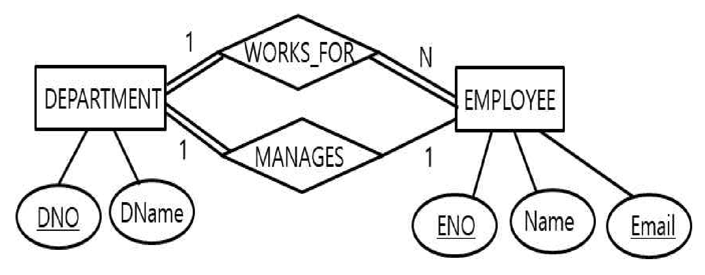

작성 기준: 업로드된 데이터베이스 강의자료(구환회기술사 Chapter1~7, 특강 및 출제 예상) 우선 근거, 외부지식은 보조적으로만 사용(강의자료 미수록 항목은 각 문항에 명시)
정답 출처: 2020년(제21회) 정보시스템 감리사 필기시험 문제 및 답안.pdf (원본 Bold 표시 정답 - 페이지 렌더 이미지 직접 대조 확인)
정답 신뢰도: 매우 높음 (stroke-text 자동추출 25/25 + 보기 영역 렌더 확대 육안 대조 25/25 일치, 계산·SQL 문항은 별도 재검산)
기준 버전 주의: 본 회차는 2020년 시행분이다. ANSI/ISO SQL92 고립성 수준(59번)·CAP 정리(64번)·NoSQL 분류(67번) 등은 이후 해석·구현이 다양해졌으므로, 각 문항의 「관련 이론 정리」 말미에 현행(2025년 기준) 보충사항을 병기하였다.
| 번호 | 정답 | 번호 | 정답 | 번호 | 정답 |
|---|---|---|---|---|---|
| 51 | ① | 61 | ③ | 71 | ② |
| 52 | ③ | 62 | ③ | 72 | ① |
| 53 | ② | 63 | ② | 73 | ② |
| 54 | ④ | 64 | ③ | 74 | ① |
| 55 | ④ | 65 | ② | 75 | ② |
| 56 | ② | 66 | ① | ||
| 57 | ② | 67 | ① | ||
| 58 | ③ | 68 | ③ | ||
| 59 | ④ | 69 | ③ | ||
| 60 | ② | 70 | ④ |
2020년 제21회 데이터베이스는 계산·추론 문항이 절반을 넘는 이례적인 회차다. 전항정답·복수정답은 없었으나, 직접 표를 채우고 SQL을 실행해 봐야 답이 나오는 문항이 11개(54·58·60·61·62·63·65·66·68·69·70) 로 시간 압박이 컸다.
영역별 배분은 ① 관계대수·SQL 8문항(51·56·57·60·61·62·63·71), ② 데이터 마이닝·분석 5문항(54·66·68·69·70), ③ 트랜잭션·회복 2문항(53·59), ④ 정규화·키 2문항(58·65), ⑤ 모델링·무결성 2문항(55·73), ⑥ NoSQL·분산 3문항(64·67·75), ⑦ 공간·GIS 2문항(52·74), ⑧ 파일 구조 1문항(72) 이다.
이 회차의 특징 네 가지.
첫째, 데이터 마이닝·정보검색 비중이 이례적으로 높다(5문항, 20%). 연관규칙의 지지도·신뢰도·향상도(66·68), 정확도·재현도·F-스코어(69·70), 연관규칙 개수 계산(54)이 모두 나왔다. 전통적 DB 이론만 공부해서는 방어가 어렵다.
둘째, SQL 실행 결과를 직접 따져야 하는 문항이 두 개(62·63) 있다. 62번은 상관 부속질의(correlated subquery) 를, 63번은 HAVING 절의 상관 부속질의와 WHERE 조건의 상호작용을 정확히 이해해야 한다. 특히 63번은 네 보기의 SQL이 거의 같아 보이지만 결과가 다른 고난도 문항이다.
셋째, 관계대수 계산 문항(51·60·61) 이 세 개다. 61번은 자연조인·외부조인·동등조인의 차수와 카디널리티를 각각 세야 하고, 60번은 조인 선택도(join selectivity) 라는 생소한 개념을 다룬다.
넷째, 공간 DB·GIS가 두 문항(52·74) 나왔다. 강의자료에 직접 수록되어 있지 않은 영역이므로 별도 학습이 필요하다.
강의자료 커버리지는 관계대수·정규화·트랜잭션·SQL·연관규칙에서 양호하나, 공간 조인·GIS 래스터(52·74)·동적 해싱(72)·정보검색 지표(69·70)·분할표(68) 는 업로드된 자료에 직접 수록되어 있지 않아 외부지식으로 보완했다.
| 항목 | 내용 |
|---|---|
| 문서명 | 정보시스템 감리사 데이터베이스 기출문제 해설집 - 2020년 제21회 |
| 대상 문항 | Q51 ~ Q75 (데이터베이스) |
| 원본 출처 | 2020년(제21회) 정보시스템 감리사 필기시험 문제 및 답안.pdf (p.12~16) |
| 정답 확인 방법 | stroke-text(글리프 render mode) 자동추출 + 보기 영역 렌더 확대 육안 대조 (25/25 일치) |
| 특이 문항 | 없음 (전항정답·복수정답 없음) |
| 그림 포함 문항 | 73번 E-R 다이어그램 — 이미지 + 서술 전사 병기 |
| 표·SQL 제시 문항 | 55·56·57·58·59·61·62·63·66·67·68·70번 — 이미지 대신 마크다운 표/코드블록으로 전사 |
| 근거 강의자료 | 구환회기술사 Chapter1(개요)·Chapter2(트랜잭션)·Chapter3(모델링)·Chapter4(SQL)·Chapter5(유형)·Chapter6(분석)·Chapter7(빅데이터), 데이터베이스 특강 및 출제 예상 |
| 강의자료 미수록(외부지식 보완) 항목 | 공간 조인(52), 동적 해싱(72), 정보검색 지표 F-score(69), 혼동행렬 지표(70), 분할표 lift(68), GIS 래스터(74) |
| 기준 버전 | 2020년 출제 당시 기준 + 현행(2025년) 보충사항 병기 |
릴레이션 R의 차수(degree)가 rd 이고 릴레이션 S의 차수는 sd 라고 가정했을 때, 다음의 관계 대수 연산에 대한 설명 중 가장 적절하지 않은 것은?
① rd = sd인 경우, R과 S는 합병 가능(union-compatible)하다.
② R에 실렉션(selection) 연산을 적용한 결과 릴레이션의 차수는 rd이다.
③ R과 S를 세타 조인(theta-join)한 결과 릴레이션의 차수는 rd + sd이다.
④ R을 구성하고 있는 속성 집합 X가 S를 구성하고 있는 속성 집합 Y를 포함하고 X − Y = D라면 R ÷ S 연산을 적용한 결과 릴레이션의 차수는 D에 포함된 속성의 개수이다.
정답 : ①번 (가장 적절하지 않은 것)
정답 신뢰도 : 매우 높음 (원본 Bold 확인)
| 항목 | 내용 |
|---|---|
| 연도 | 2020년 (제21회) |
| 과목 | 데이터베이스 |
| 문항번호 | 51번 |
| 난이도 | 중 |
| 출제주제 | 관계대수 - 연산별 결과 릴레이션의 차수(degree) |
관계대수는 매 회차 1~2문항 출제되는 고정 주제다. 형태는 ① 연산별 차수·카디널리티 판정(본 문항), ② 관계대수식 → 의미 파악(56번), ③ 실제 릴레이션으로 결과 계산(61번)이다. 2020년 회차는 세 형태가 모두 출제되었다.
| 연도 | 문항번호 | 핵심개념 |
|---|---|---|
| 2020 | 56 | 관계대수식 → 디비전 식별 |
| 2020 | 61 | 조인별 차수·카디널리티 계산 |
| 2022 | 52 | 관계대수 연산 |
"합병 가능 = 차수가 같다 + 도메인이 같다." 차수만으로는 부족하다.
σ 차수 불변 / × · θ조인 = rd + sd / 자연조인 = rd + sd − 공통 / ÷ = rd − sd
보기 ①의 오류: 합병 가능의 조건은 두 가지
두 릴레이션이 합병 가능(union-compatible) 하려면 다음 두 조건을 모두 만족해야 한다.
| # | 조건 |
|---|---|
| 1 | 차수(속성의 개수)가 같다 |
| 2 | 대응하는 각 속성의 도메인이 같다 |
보기 ①은 차수만 같으면 합병 가능하다고 서술했으므로 틀렸다.
반례
| R(사번, 이름) | S(가격, 수량) |
|---|---|
| 차수 2 | 차수 2 |
두 릴레이션 모두 차수가 2이지만, 속성의 도메인이 전혀 다르므로 R ∪ S 는 의미가 없다. 합병 가능하지 않다.
따라서 가장 적절하지 않은 것은 ①번.
관계대수 연산별 차수·카디널리티 변화
| 연산 | 기호 | 차수 | 카디널리티 |
|---|---|---|---|
| 실렉션(선택) | σ | 불변(rd) | 감소(≤ |R|) |
| 프로젝션(추출) | π | 감소(속성 목록 수) | 감소 가능(중복 제거) |
| 합집합 | ∪ | 불변(합병 가능해야) | ≤ |R| + |S| |
| 교집합 | ∩ | 불변 | ≤ min(|R|, |S|) |
| 차집합 | − | 불변 | ≤ |R| |
| 카티션 프로덕트 | × | rd + sd | |R| × |S| |
| 세타 조인 | ⋈θ | rd + sd | ≤ |R| × |S| |
| 동등 조인 | ⋈ | rd + sd | ≤ |R| × |S| |
| 자연 조인 | * | rd + sd − 공통 | ≤ |R| × |S| |
| 디비전 | ÷ | rd − sd(=|X−Y|) | ≤ |R| |
순수 관계 연산 vs 집합 연산
| 분류 | 연산 | 합병 가능 요구 |
|---|---|---|
| 집합 연산 | 합집합, 교집합, 차집합 | 필요 |
| 카티션 프로덕트 | 불필요 | |
| 순수 관계 연산 | 실렉션, 프로젝션, 조인, 디비전 | 불필요 |
합병 가능 조건이 요구되는 것은 ∪, ∩, − 세 개뿐이다.
조인의 종류 정리
| 조인 | 조건 | 중복 속성 |
|---|---|---|
| 세타 조인 | 임의의 비교 연산자(=, ≠, <, >, ≤, ≥) | 유지 |
| 동등 조인 | = 만 사용 | 유지 |
| 자연 조인 | 공통 속성의 = 조건 | 제거(하나만 남김) |
| 외부 조인 | 매칭 안 되는 튜플도 NULL로 포함 | 유지 |
| 세미 조인 | 조인 후 한쪽 속성만 | — |
강의자료 근거: Chapter3(모델링)에 합병 가능(union-compatible)·디비전(division)·세타 조인이 모두 수록되어 있다.
SQL로 옮기면 다음과 같다.
| 관계대수 | SQL |
|---|---|
| σ조건(R) | SELECT * FROM R WHERE 조건 |
| π속성(R) | SELECT DISTINCT 속성 FROM R |
| R ∪ S | SELECT … FROM R UNION SELECT … FROM S ← 합병 가능 필요 |
| R × S | SELECT * FROM R, S |
| R ⋈θ S | SELECT * FROM R JOIN S ON 조건 |
| R * S | SELECT * FROM R NATURAL JOIN S |
UNION 이 요구하는 조건이 곧 합병 가능이다. SQL 표준은 열 개수가 같고 대응 열의 데이터 타입이 호환되어야 한다고 규정한다. 감리에서 UNION 사용 시 타입 불일치로 인한 암묵 형변환이 성능 저하를 유발하는 사례를 점검한다.
관계대수 차수 문항은 연산별 차수 공식을 외우면 끝난다.
| 기억법 | 내용 |
|---|---|
| 행을 고르면 열은 그대로 | σ → 차수 불변 |
| 열을 고르면 열이 줄어든다 | π → 차수 = 선택 속성 수 |
| 곱하면 더한다 | ×, θ-join, equi-join → rd + sd |
| 자연스럽게 합치면 하나 뺀다 | natural join → rd + sd − 공통 |
| 나누면 뺀다 | ÷ → rd − sd |
그리고 "합병 가능 = 차수 + 도메인" 두 조건을 반드시 함께 기억할 것. 차수만 언급한 보기는 틀렸다.
실렉션(σ, selection) 은 조건을 만족하는 튜플(행)만 골라내는 연산이다.
| 연산 | 변하는 것 | 변하지 않는 것 |
|---|---|---|
| 실렉션 σ | 카디널리티(행 수) 감소 | 차수(열 수) 그대로 |
| 프로젝션 π | 차수(열 수) 감소 | (중복 제거로 카디널리티도 변할 수 있음) |
따라서 σ 결과의 차수는 rd 그대로다.
세타 조인(θ-join) 은 정의상 다음과 같다.
R ⋈θ S = σθ(R × S)
즉 카티션 프로덕트(×) 후 조건 선택(σ) 이다. 카티션 프로덕트의 차수가 rd + sd 이고, 실렉션은 차수를 바꾸지 않으므로 결과 차수는 rd + sd 다.
주의 — 자연조인과의 차이: 자연조인(natural join, *) 은 공통 속성을 하나로 합치므로 차수가 rd + sd − (공통 속성 수) 가 된다. 세타 조인은 중복 속성을 제거하지 않는다.
조인 차수 카티션 프로덕트 rd + sd 세타 조인 rd + sd 동등 조인(equi-join) rd + sd 자연 조인 rd + sd − 공통 속성 수
디비전(÷, division) 은 R(X) ÷ S(Y) 형태로, Y ⊆ X 일 때 정의된다.
결과 = R의 속성 중 S에 없는 속성들(X − Y)로 구성되며, S의 모든 튜플과 짝을 이루는 값들만 남는다.
따라서 결과 릴레이션의 차수는 |X − Y| = |D| 다. 보기 서술이 정확하다.
디비전 예시
| R(학번, 과목) | S(과목) | R ÷ S | ||
|---|---|---|---|---|
| 100, DB | DB | 100 | ||
| 100, OS | OS | |||
| 200, DB |
학생 100은 DB·OS를 모두 수강 → 결과에 포함. 학생 200은 DB만 → 제외.
결과 차수 = |{학번, 과목} − {과목}| = 1 ✓
다음 공간 질의(spatial query) 사례 중에서 공간 조인(spatial join) 에 해당하는 질의의 예로 가장 적절한 것은?
① 서울시 경계 안에 존재하는 모든 병원을 검색
② 주어진 사건 현장에서 가장 가까운 거리에 있는 경찰차를 검색
③ 2Km 이내의 거리에 호수가 존재하는 모든 주택을 검색
④ 특정 사건 현장에서 5Km 반경 이내의 거리에 있는 모든 응급차를 검색
정답 : ③번
정답 신뢰도 : 매우 높음 (원본 Bold 확인)
| 항목 | 내용 |
|---|---|
| 연도 | 2020년 (제21회) |
| 과목 | 데이터베이스 |
| 문항번호 | 52번 |
| 난이도 | 중 |
| 출제주제 | 공간 데이터베이스 - 공간 조인(spatial join) 질의 |
공간 DB·GIS는 3~4년 주기로 출제되며, DB 과목과 시스템구조 과목 양쪽에서 나온다. 2020년 회차는 52번(공간 조인)·74번(GIS 래스터) 두 문항을 배치했다. 논점은 ① 질의 유형 분류, ② 공간 인덱스(R-트리), ③ 벡터 vs 래스터다.
| 연도 | 문항번호 | 핵심개념 |
|---|---|---|
| 2020 | 74 | GIS 래스터 |
| 2022 | 74 | 공간 인덱스 |
"공간 조인 = 두 개의 공간 데이터 집합. 기준이 주어진 값이면 범위 질의."
"가장 가까운" = 최근접 이웃(k-NN), "반경 이내"(기준점 주어짐) = 범위 질의
③은 주택 집합 × 호수 집합 이므로 조인.
공간 질의는 참여하는 데이터 집합의 개수로 분류된다.
| 질의 유형 | 참여 집합 | 설명 |
|---|---|---|
| 범위 질의(range/window) | 1개 + 주어진 영역 | 특정 영역 안의 객체 검색 |
| 최근접 이웃(k-NN) | 1개 + 주어진 점 | 가장 가까운 k개 검색 |
| 공간 조인(spatial join) | 2개 이상 | 두 집합의 객체 쌍을 공간 관계로 결합 |
보기별 판정
| 보기 | 참여 집합 | 유형 |
|---|---|---|
| ① 서울시 경계 안의 병원 검색 | 병원 1개 + 주어진 경계(고정 영역) | 범위 질의 |
| ② 사건 현장에서 가장 가까운 경찰차 | 경찰차 1개 + 주어진 점 | 최근접 이웃(1-NN) |
| ③ | 주택 집합 + 호수 집합 (2개) | 공간 조인 ✓ |
| ④ 사건 현장 5Km 반경의 응급차 | 응급차 1개 + 주어진 점·반경 | 범위 질의(원형 윈도우) |
③ "2Km 이내의 거리에 호수가 존재하는 모든 주택을 검색"
이 질의는 주택 집합의 각 주택에 대해 호수 집합을 탐색해 거리 조건(≤ 2Km)을 만족하는 쌍을 찾는다. 두 개의 공간 데이터 집합이 조건으로 결합되므로 공간 조인이다.
SQL로 표현하면 다음과 같다.
SELECT DISTINCT H.*
FROM 주택 H, 호수 L
WHERE ST_DWithin(H.geom, L.geom, 2000); -- 거리 조인 조건
두 테이블이 FROM 절에 함께 등장하고 공간 술어로 결합되는 것이 조인의 형태다.
따라서 정답은 ③번.
범위 질의(range query) 또는 포함 질의(containment query) 다.
SELECT * FROM 병원 WHERE ST_Within(geom, :서울시경계);
서울시 경계는 질의 매개변수로 주어진 하나의 도형이지 별도의 데이터 집합이 아니다. 따라서 테이블은 하나(병원) 뿐이다.
함정: "경계 안에"라는 표현 때문에 두 도형의 관계처럼 보인다. 그러나 한쪽이 상수(주어진 값) 이면 조인이 아니라 선택(selection) 이다. 관계대수로 치면 σ에 해당한다.
최근접 이웃 질의(Nearest Neighbor Query, k-NN) 다.
SELECT * FROM 경찰차 ORDER BY geom <-> :현장위치 LIMIT 1;
"가장 가까운" 이라는 표현이 k-NN의 표지어다. 역시 주어진 점 하나 + 집합 하나이므로 조인이 아니다.
범위 질의(원형 버퍼 질의) 다.
SELECT * FROM 응급차 WHERE ST_DWithin(geom, :현장위치, 5000);
③과 표현이 비슷해 보이지만 결정적 차이가 있다.
| 구분 | ③ | ④ |
|---|---|---|
| 기준 | 호수 집합(테이블) | 특정 사건 현장(주어진 한 점) |
| 참여 집합 | 2개 | 1개 |
| 유형 | 공간 조인 | 범위 질의 |
③과 ④를 가르는 것은 "호수"가 복수의 객체 집합인가, "사건 현장"이 단일 지점인가이다. ③의 "호수"는 어느 호수든 상관없이 2Km 이내에 있으면 되므로 호수 테이블 전체와 비교해야 한다.
공간 질의의 종류
| 유형 | 설명 | 예 |
|---|---|---|
| 점 질의(point query) | 특정 좌표를 포함하는 객체 | 이 지점은 어느 행정구역인가 |
| 범위 질의(range/window) | 주어진 영역 안의 객체 | 이 사각형 안의 건물 |
| 최근접 이웃(k-NN) | 가장 가까운 k개 | 가장 가까운 주유소 3곳 |
| 공간 조인(spatial join) | 두 집합의 공간 관계 쌍 | 강에서 1Km 이내의 공장 |
| 방향 질의 | 방위 관계 | 서울 북쪽의 도시 |
| 위상 질의 | 위상 관계 | 서로 인접한 필지 |
공간 관계 술어 (OGC 표준)
| 술어 | 의미 |
|---|---|
ST_Contains / ST_Within |
포함 / 포함됨 |
ST_Intersects |
교차 |
ST_Overlaps |
부분 겹침 |
ST_Touches |
경계 접촉 |
ST_Disjoint |
분리 |
ST_DWithin |
거리 이내 ← 본 문항 ③ |
ST_Distance |
거리 계산 |
공간 조인의 처리 방식
공간 조인은 비용이 매우 크므로 두 단계로 처리한다.
| 단계 | 내용 |
|---|---|
| 1. 여과(filter) 단계 | MBR(최소 경계 사각형) 로 후보 쌍을 빠르게 추림 — R-트리 인덱스 활용 |
| 2. 정제(refinement) 단계 | 후보 쌍에 대해 정확한 기하 연산 수행 |
MBR(Minimum Bounding Rectangle)은 2020년 74번 보기 ④에도 등장한다.
공간 인덱스
| 인덱스 | 특징 |
|---|---|
| R-트리 | MBR 기반 계층 트리 — 가장 널리 사용 |
| R+-트리, R*-트리 | R-트리 개선판 |
| 쿼드 트리(Quad-tree) | 공간을 4분할 재귀 |
| 그리드 파일 | 격자 분할 |
| k-d 트리 | 다차원 이진 분할 |
공간 데이터 모델
| 모델 | 표현 | 예 |
|---|---|---|
| 벡터(vector) | 점·선·폴리곤 | 도로, 행정경계, 건물 |
| 래스터(raster) | 격자(셀/픽셀) | 위성영상, 고도, 강수량 ← 2020년 74번 |
강의자료 수록 여부: 강의자료는 공간 데이터베이스·GIS를 직접 다루지 않는다. 외부지식(OGC 공간 질의 분류)으로 보완했다. 시스템구조 과목의 GIS 부분과 교차 학습을 권장한다.
공공 부문의 국가공간정보포털·지자체 GIS 시스템에서 공간 질의가 핵심 기능이다.
| 업무 | 질의 유형 |
|---|---|
| 특정 구역 내 인허가 대상 조회 | 범위 질의 |
| 가장 가까운 소방서 배차 | k-NN |
| 하천 경계 500m 이내 축사 전수 조사 | 공간 조인 |
| 도시계획선과 필지의 중첩 검토 | 공간 조인 |
설계 감리에서는 ① 공간 인덱스(R-트리, GiST)가 생성되었는가, ② 좌표계(SRID)가 통일되었는가, ③ 대량 공간 조인의 성능 대책이 있는가를 점검한다. ②는 실무에서 매우 흔한 결함으로, 좌표계가 다르면 결과가 조용히 틀린다.
공간 질의 분류 문항은 "집합이 몇 개인가" 한 가지로 판별한다.
| 지문 형태 | 유형 |
|---|---|
| ~ 안에 있는 A를 검색 (영역이 주어짐) | 범위 질의 |
| ~에서 가장 가까운 A | 최근접 이웃 |
| ~ 반경 안의 A (기준점이 주어짐) | 범위 질의 |
| B가 존재하는 A / B에서 n Km 이내의 A (B도 집합) | 공간 조인 |
기준이 "주어진 값"이면 선택, "다른 테이블"이면 조인 — 일반 SQL의 조인 판별과 같은 원리다.
데이터베이스의 트랜잭션 관리에 대한 설명 중 가장 적절하지 않은 것은?
① 트랜잭션은 데이터베이스를 접근하는 일의 단위로서 원자성(atomicity)을 유지하기 위해서 commit 하거나 rollback 할 수 있다.
② 여러 트랜잭션이 동시에 실행되는 경우 충돌 트랜잭션들의 일관성을 보장하기 위해서는 반드시 직렬 스케쥴(serial schedule)을 생성해야 한다.
③ 회복기법으로 그림자 페이지(shadow paging) 기법을 사용하면 단일 사용자 환경에서 로그 레코드 출력이 필요없어 트랜잭션의 UNDO가 간단하고 REDO가 필요 없기 때문에 고장으로부터의 회복이 신속하다.
④ 로깅(logging) 회복기법에서는 데이터 레코드보다 로그 레코드를 먼저 안전 저장장치에 기록하도록 한다.
정답 : ②번 (가장 적절하지 않은 것)
정답 신뢰도 : 매우 높음 (원본 Bold 확인)
| 항목 | 내용 |
|---|---|
| 연도 | 2020년 (제21회) |
| 과목 | 데이터베이스 |
| 문항번호 | 53번 |
| 난이도 | 중 |
| 출제주제 | 트랜잭션 관리 - 직렬 스케줄과 직렬가능 스케줄의 구분 |
트랜잭션은 매 회차 1~2문항 출제되는 최상위 빈출 주제다. 논점은 ① ACID·스케줄 개념(본 문항), ② 고립성 수준과 이상 현상(59번), ③ 로킹·MVCC, ④ 회복 기법이다. 2020년은 53·59번 두 문항이 나왔다.
| 연도 | 문항번호 | 핵심개념 |
|---|---|---|
| 2020 | 59 | 고립성 수준과 비일관성 현상 |
| 2022 | 55 | 2PL·직렬가능성 |
| 2024 | 57 | 회복 기법 |
"직렬가능(serializable)이면 충분하다. 직렬(serial)일 필요는 없다."
WAL = 로그 먼저, 데이터 나중. 그림자 페이징 = 로그 없음·REDO 없음.
충돌 조건 = 다른 트랜잭션 + 같은 항목 + 하나 이상 write
보기 ②의 오류: "반드시 직렬 스케줄을 생성해야 한다"
동시성 제어의 목표는 직렬가능성(serializability) 이지 직렬 실행(serial execution) 이 아니다.
| 구분 | 직렬 스케줄(Serial) | 직렬가능 스케줄(Serializable) |
|---|---|---|
| 실행 방식 | 트랜잭션을 하나씩 완료 후 다음 | 인터리빙(교차) 실행 |
| 동시성 | 없음 | 있음 |
| 일관성 | 보장 | 보장 |
| 성능 | 매우 낮음 | 높음 |
만약 일관성을 위해 반드시 직렬 스케줄로만 실행해야 한다면, 동시성 제어라는 분야 자체가 존재할 이유가 없다. DBMS는 여러 트랜잭션을 겹쳐 실행하면서도 그 결과가 어떤 직렬 실행 결과와 동일함을 보장하는 방식(2PL, 타임스탬프, MVCC)으로 성능과 일관성을 동시에 달성한다.
정확한 서술: "충돌 트랜잭션들의 일관성을 보장하기 위해서는 직렬가능(serializable) 스케줄을 생성해야 한다."
따라서 가장 적절하지 않은 것은 ②번.
트랜잭션의 ACID 속성
| 속성 | 내용 | 보장 기법 |
|---|---|---|
| Atomicity(원자성) | 전부 또는 전무 | COMMIT/ROLLBACK, UNDO 로그 |
| Consistency(일관성) | 무결성 제약 유지 | 무결성 제약, 트리거 |
| Isolation(고립성) | 다른 트랜잭션의 중간 결과 안 보임 | 동시성 제어(2PL, MVCC) |
| Durability(지속성) | 커밋 결과는 영구 보존 | REDO 로그, WAL |
스케줄의 분류
전체 스케줄
└─ 직렬가능(serializable) 스케줄 ← 목표
├─ 충돌 직렬가능(conflict serializable) ← 실무 판정 기준
│ └─ 직렬(serial) 스케줄 ← 특수한 경우
└─ 뷰 직렬가능(view serializable)
| 개념 | 정의 |
|---|---|
| 직렬 스케줄 | 트랜잭션들이 겹치지 않고 순차 실행 |
| 직렬가능 스케줄 | 실행 결과가 어떤 직렬 스케줄과 동일 |
| 충돌 직렬가능 | 충돌 연산의 순서를 바꾸지 않고 직렬 스케줄로 변환 가능 — 선행 그래프에 사이클 없음 |
| 뷰 직렬가능 | 읽는 값과 최종 쓰기가 동일 — 충돌 직렬가능보다 넓은 범위 |
충돌(conflict)의 조건 — 세 가지를 모두 만족
| # | 조건 |
|---|---|
| 1 | 서로 다른 트랜잭션의 연산 |
| 2 | 같은 데이터 항목에 접근 |
| 3 | 적어도 하나가 write |
read-read는 충돌이 아니다. write-read(Dirty Read), read-write(Non-repeatable Read), write-write(Lost Update)가 충돌이다.
동시성 제어 기법
| 기법 | 원리 |
|---|---|
| 2PL(2단계 로킹) | 확장 단계(락 획득만) → 축소 단계(락 해제만). 직렬가능성 보장 |
| 엄격 2PL(Strict 2PL) | 모든 락을 커밋/롤백 시점에 해제 → 연쇄 롤백 방지 |
| 타임스탬프 순서 | 트랜잭션 시작 시각 순으로 직렬화 |
| 낙관적 검증(OCC) | 실행 후 검증 단계에서 충돌 확인 |
| MVCC(다중 버전) | 읽기는 스냅숏, 쓰기는 새 버전 → 읽기-쓰기 무충돌 |
회복 기법 비교
| 기법 | 로그 | UNDO | REDO | 특징 |
|---|---|---|---|---|
| 즉시 갱신(immediate update) | 필요 | O | O | 커밋 전에도 디스크 반영 |
| 지연 갱신(deferred update) | 필요 | X | O | 커밋 후에만 반영 |
| 그림자 페이징 | 불필요 | 간단(포인터 복원) | 불필요 | 단일 사용자에 적합 |
| 검사점(checkpoint) | 필요 | 축소 | 축소 | 회복 범위 단축 |
| ARIES | 필요 | O | O | 상용 DBMS 표준(분석-REDO-UNDO 3단계) |
강의자료 근거: Chapter2(트랜잭션)에 직렬 스케줄·serializable·그림자 페이징(shadow paging)·고립성 수준이 모두 수록되어 있다.
상용 DBMS는 엄격 2PL 또는 MVCC로 직렬가능성에 준하는 일관성을 제공하면서 높은 동시성을 유지한다.
| DBMS | 기본 격리 수준 | 동시성 제어 |
|---|---|---|
| Oracle | Read Committed | MVCC |
| PostgreSQL | Read Committed | MVCC |
| MySQL(InnoDB) | Repeatable Read | MVCC + 갭 락 |
| SQL Server | Read Committed | 락 기반(옵션으로 MVCC) |
감리에서는 ① 격리 수준 설정이 업무 요구에 부합하는가, ② 긴 트랜잭션으로 락 경합이 발생하지 않는가, ③ WAL/아카이브 로그 설정과 백업·복구 절차가 정의되었는가를 점검한다.
특히 ②가 성능 장애의 단골 원인으로, 트랜잭션 범위에 사용자 입력 대기나 외부 API 호출이 포함된 설계가 자주 발견된다.
트랜잭션 문항의 최다 함정이 "직렬 vs 직렬가능" 이다.
| 서술 | 판정 |
|---|---|
| "일관성을 위해 직렬가능(serializable) 스케줄이어야" | 맞음 |
| "일관성을 위해 반드시 직렬(serial) 스케줄이어야" | 틀림 |
그 외 자주 나오는 논점.
- WAL: 로그가 데이터보다 먼저
- 그림자 페이징: 로그 불필요, REDO 불필요
- read-read는 충돌이 아님
트랜잭션은 DB 접근의 논리적 작업 단위이며, ACID의 원자성(Atomicity) 은 "모두 수행되거나 전혀 수행되지 않아야 한다(all or nothing)" 를 뜻한다.
| 연산 | 의미 |
|---|---|
| COMMIT | 트랜잭션의 모든 변경을 영구 반영 |
| ROLLBACK | 모든 변경을 취소하고 이전 상태로 |
이 두 연산이 원자성을 구현하는 수단이다. 보기 서술이 정확하다.
그림자 페이징(shadow paging) 은 로그 없이 회복하는 기법이다.
| 항목 | 내용 |
|---|---|
| 원리 | 트랜잭션 시작 시 현재 페이지 테이블을 그림자(shadow) 페이지 테이블로 복사 |
| 갱신 | 새 페이지에 기록하고 현재 페이지 테이블만 갱신(원본 페이지는 그대로) |
| COMMIT | 현재 페이지 테이블을 디스크에 기록 |
| ROLLBACK/장애 | 그림자 페이지 테이블로 되돌리면 끝 → UNDO 간단, REDO 불필요 |
보기의 "로그 레코드 출력이 필요없어 UNDO가 간단하고 REDO가 필요 없다" 가 정확한 서술이다.
단점: 페이지 단편화, 가비지 수집 필요, 다중 사용자 환경에서 비효율. 그래서 보기도 "단일 사용자 환경에서" 라는 조건을 붙였다. 실제 상용 DBMS는 대부분 로그 기반 회복을 쓴다.
WAL(Write-Ahead Logging, 로그 선기록) 규약이다.
데이터 페이지를 디스크에 쓰기 전에, 그 변경에 대한 로그 레코드를 먼저 안정 저장장치에 기록한다.
| 규칙 | 이유 |
|---|---|
| UNDO 규칙 | 변경된 데이터를 디스크에 쓰기 전에 이전 값(before image) 로그를 먼저 기록 → 롤백 가능 |
| REDO 규칙 | 커밋 전에 새 값(after image) 로그를 기록 → 커밋 후 장애에도 재수행 가능 |
WAL이 없으면 로그보다 데이터가 먼저 쓰인 상태에서 장애가 났을 때 되돌릴 근거가 없어진다. 보기 서술이 정확하다.
연관규칙 마이닝에서 6-항목집합 {Apple, Banana, Cherry, Grape, Melon, Tomato}가 빈발(frequent)로 판명되었을 때, 이 6-항목집합에 대해 고려할 수 있는 연관규칙은 모두 몇 개인가?
① 6개
② 15개
③ 32개
④ 62개
정답 : ④번
정답 신뢰도 : 매우 높음 (원본 Bold 확인 + 재검산)
| 항목 | 내용 |
|---|---|
| 연도 | 2020년 (제21회) |
| 과목 | 데이터베이스 |
| 문항번호 | 54번 |
| 난이도 | 상 |
| 출제주제 | 연관규칙 마이닝 - k-항목집합에서 생성 가능한 규칙의 개수 |
데이터 마이닝은 최근 회차에서 비중이 커지는 주제다. 2020년 회차는 54(규칙 개수)·66(지지도·신뢰도)·68(향상도 비교) 세 문항으로 연관규칙만 집중 출제했다. 여기에 69·70번(정보검색·분류 평가지표)까지 더하면 분석 영역이 5문항(20%) 이다.
| 연도 | 문항번호 | 핵심개념 |
|---|---|---|
| 2020 | 66 | 지지도·신뢰도 계산 |
| 2020 | 68 | 지지도·신뢰도·향상도 비교 |
| 2023 | 73 | 연관규칙 |
"k-항목집합의 연관규칙 수 = 2^k − 2"
6-항목집합 → 2⁶ − 2 = 62개
−2 = 전건이 공집합인 경우 + 후건이 공집합인 경우
검산: ⁶C₁ + ⁶C₂ + ⁶C₃ + ⁶C₄ + ⁶C₅ = 6+15+20+15+6 = 62
1단계 — 연관규칙의 구조를 이해한다.
빈발 항목집합 I = {i₁, …, i₆} 로부터 만들 수 있는 연관규칙은 다음 형태다.
X → Y, 단 X ∪ Y = I, X ∩ Y = ∅, X ≠ ∅, Y ≠ ∅
즉 I를 공집합이 아닌 두 부분으로 나누는 모든 방법의 수가 곧 규칙의 개수다.
2단계 — 개수를 센다.
X(전건, antecedent)를 정하면 Y = I − X 가 자동으로 결정된다. 따라서 X를 고르는 경우의 수를 세면 된다.
| 항목 | 값 |
|---|---|
| I의 전체 부분집합 수 | 2⁶ = 64 |
| 제외: X = ∅ (전건이 비면 규칙이 아님) | −1 |
| 제외: X = I (그러면 Y = ∅) | −1 |
| 가능한 규칙 수 | 64 − 2 = 62 |
일반식: k-항목집합의 연관규칙 수 = 2^k − 2
따라서 정답은 ④ 62개.
작은 예로 확인 (k = 3, I = {A, B, C})
공식: 2³ − 2 = 6개
| # | 규칙 |
|---|---|
| 1 | A → BC |
| 2 | B → AC |
| 3 | C → AB |
| 4 | AB → C |
| 5 | AC → B |
| 6 | BC → A |
정확히 6개 ✓ 공식이 맞다.
항목의 개수(6) 를 그대로 답한 값이다. 항목 수와 규칙 수는 전혀 다르다. 위 k=3 예시에서도 항목은 3개지만 규칙은 6개였다.
⁶C₂ = 15 로, 항목 2개를 고르는 조합이다. 연관규칙은 1:1 쌍이 아니라 부분집합 대 나머지의 관계이므로 조합 계산이 맞지 않는다.
혹은 "전건이 1개인 규칙(6개) + 전건이 2개인 규칙(15개)" 중 후자만 센 경우로도 볼 수 있다.
2⁵ = 32 또는 2⁶ ÷ 2 = 32 다. −2를 하지 않았거나 지수를 하나 줄인 경우다.
가장 유력한 오답이다. 2^k 까지는 떠올렸으나 공집합·전체집합 두 경우를 빼는 것을 놓치면 이 값이 나온다.
연관규칙 마이닝의 2단계
| 단계 | 내용 |
|---|---|
| 1. 빈발 항목집합 생성 | 최소 지지도(min_sup) 이상인 항목집합 찾기 — Apriori, FP-Growth |
| 2. 연관규칙 생성 | 빈발 항목집합을 분할해 최소 신뢰도(min_conf) 이상인 규칙 선별 ← 본 문항 |
핵심 지표 (2020년 66·68번과 연결)
| 지표 | 공식 | 의미 |
|---|---|---|
| 지지도(support) | P(X ∩ Y) = (X와 Y 모두 포함한 거래 수) / 전체 거래 수 | 규칙이 얼마나 자주 나타나는가 |
| 신뢰도(confidence) | P(Y|X) = 지지도(X∪Y) / 지지도(X) | X가 있을 때 Y도 있을 확률 |
| 향상도(lift) | 신뢰도 / P(Y) = P(X∩Y) / (P(X)·P(Y)) | 우연 대비 얼마나 강한가 |
| 향상도 값 | 해석 |
|---|---|
| > 1 | 양의 상관 — 의미 있는 규칙 |
| = 1 | 독립 — 무의미 |
| < 1 | 음의 상관 |
Apriori 알고리즘의 원리
Apriori 성질(하향 폐쇄, downward closure)
어떤 항목집합이 빈발하면 그 모든 부분집합도 빈발하다.
대우: 어떤 항목집합이 비빈발이면 그 상위집합도 모두 비빈발이다. → 가지치기(pruning)
이 성질 덕분에 2^k 개의 모든 부분집합을 검사하지 않고 후보를 크게 줄일 수 있다.
연관규칙 개수 관련 공식 정리
| 구하는 것 | 공식 |
|---|---|
| k-항목집합에서 생성 가능한 규칙 수 | 2^k − 2 |
| 전건이 정확히 m개인 규칙 수 | ᵏCₘ (단, 1 ≤ m ≤ k−1) |
| 전체 항목 d개에서 가능한 항목집합 수 | 2^d − 1 |
| 전체 항목 d개에서 가능한 모든 규칙 수 | 3^d − 2^(d+1) + 1 |
주의: 본 문항은 하나의 빈발 항목집합 내부에서의 규칙 수(2^k − 2)를 묻는다. 전체 항목 집합에서 가능한 모든 규칙 수(3^d − 2^(d+1) + 1)와 혼동하지 말 것. d = 6이면 후자는 729 − 128 + 1 = 602개다.
검산 — 전건 크기별로 세어 보기
| 전건 크기 m | 경우의 수 ⁶Cₘ |
|---|---|
| 1 | 6 |
| 2 | 15 |
| 3 | 20 |
| 4 | 15 |
| 5 | 6 |
| 합계 | 62 ✓ |
6 + 15 + 20 + 15 + 6 = 62. 공식 2⁶ − 2 = 62와 일치한다. 보기 ②(15개)는 m=2인 경우만 센 것임이 여기서도 확인된다.
강의자료 근거: Chapter6(분석)에 연관규칙·지지도·신뢰도·향상도가 수록되어 있다. 다만 규칙 개수 계산 공식은 미수록이라 외부지식으로 보완했다.
장바구니 분석(market basket analysis) 이 대표 적용처다. 그러나 규칙 수가 항목 수에 대해 지수적으로 증가하므로 실무에서는 다음과 같이 제어한다.
| 방법 | 내용 |
|---|---|
| 최소 지지도 상향 | 빈발 항목집합 자체를 줄임 |
| 최소 신뢰도·향상도 필터 | 생성된 규칙 중 의미 있는 것만 |
| 최대 항목집합 크기 제한 | k ≤ 4 등으로 제한 |
| 폐쇄/최대 빈발 항목집합 | 중복 정보 제거 |
데이터 품질 감리에서는 "도출된 규칙이 통계적으로 유의한가" 를 점검한다. 지지도·신뢰도만 높고 향상도가 1에 가까운 규칙은 우연일 뿐 실무 가치가 없다.
연관규칙 개수 문항은 공식 하나로 끝난다.
k-항목집합 → 규칙 수 = 2^k − 2
−2를 잊지 않는 것이 전부다. 왜 −2인지도 함께 기억하자 — 전건이 공집합인 경우와 후건이 공집합인 경우를 뺀다.
작은 값으로 검산하는 습관도 유용하다. k = 2면 2² − 2 = 2개(A→B, B→A) — 직관과 일치한다.
다음의 데이터베이스에서 Students 릴레이션의 sid가 53666인 튜플이 삭제되면 Enrolled 릴레이션의 sid가 53666인 튜플도 같이 삭제되도록 하는 방법으로 가장 적절한 것은? (단, Students, Enrolled 릴레이션 각각의 기본 키는 밑줄 친 속성이다.)
[Students] (기본키: sid)
| sid | name | age |
|---|---|---|
| 53666 | Jones | 18 |
| 53688 | Smith | 18 |
| 53650 | Smith | 19 |
[Enrolled] (기본키: sid, cid)
| sid | cid | grade |
|---|---|---|
| 53666 | Carnatic101 | C |
| 53666 | Reggae203 | B |
| 53650 | Topology112 | A |
| 53666 | History105 | B |
① Students 릴레이션을 생성할 때 FOREIGN KEY(sid) REFERENCES Enrolled(sid) ON DELETE SET DEFAULT 명령어를 추가한다.
② Enrolled 릴레이션을 생성할 때 FOREIGN KEY(sid) REFERENCES Students(sid) ON DELETE SET DEFAULT 명령어를 추가한다.
③ Students 릴레이션을 생성할 때 FOREIGN KEY(sid) REFERENCES Enrolled(sid) ON DELETE CASCADE 명령어를 추가한다.
④ Enrolled 릴레이션을 생성할 때 FOREIGN KEY(sid) REFERENCES Students(sid) ON DELETE CASCADE 명령어를 추가한다.
정답 : ④번
정답 신뢰도 : 매우 높음 (원본 Bold 확인)
| 항목 | 내용 |
|---|---|
| 연도 | 2020년 (제21회) |
| 과목 | 데이터베이스 |
| 문항번호 | 55번 |
| 난이도 | 중 |
| 출제주제 | 참조 무결성 - 외래키의 ON DELETE CASCADE 설정 위치 |
무결성 제약은 매 회차 1문항 내외 출제된다. 형태는 ① 참조 동작 선택(본 문항), ② 무결성 종류 구분, ③ E-R → DDL 매핑(73번)이다. 2020년은 55·73번 두 문항이 관련된다.
| 연도 | 문항번호 | 핵심개념 |
|---|---|---|
| 2020 | 57 | DROP SCHEMA RESTRICT |
| 2020 | 73 | E-R → 관계 모델 매핑(FK·NULL) |
| 2022 | 53 | 무결성 제약 |
"외래키는 자식(참조하는 쪽)에 쓴다. 부모 삭제 시 같이 지우려면 자식에 ON DELETE CASCADE."
Students(부모) ← Enrolled(자식, 여기에 FK)
SET DEFAULT는 삭제가 아니라 값 변경.
1단계 — 부모·자식 관계를 확정한다.
| 릴레이션 | 역할 | 근거 |
|---|---|---|
| Students | 부모(참조되는 쪽) | sid가 기본키, 학생 마스터 |
| Enrolled | 자식(참조하는 쪽) | sid가 Students를 참조하는 외래키 |
수강 기록(Enrolled)은 학생(Students)이 존재해야 성립한다. 반대로 학생은 수강 기록 없이도 존재할 수 있다.
2단계 — 외래키를 어디에 정의하는가.
외래키는 항상 "참조하는 쪽(자식)"에 정의한다.
따라서 Enrolled 릴레이션에 FOREIGN KEY(sid) REFERENCES Students(sid) 를 선언해야 한다.
3단계 — 어떤 참조 동작(referential action)을 쓰는가.
문제의 요구는 "Students의 튜플이 삭제되면 Enrolled의 해당 튜플도 같이 삭제" 다.
| 옵션 | 동작 |
|---|---|
ON DELETE CASCADE |
부모 삭제 → 자식도 삭제 ✓ |
ON DELETE SET NULL |
자식의 FK를 NULL로 |
ON DELETE SET DEFAULT |
자식의 FK를 기본값으로 |
ON DELETE NO ACTION / RESTRICT |
삭제 거부(기본값) |
따라서 Enrolled에 ON DELETE CASCADE → 정답 ④.
올바른 DDL
CREATE TABLE Enrolled (
sid INTEGER,
cid VARCHAR(20),
grade CHAR(2),
PRIMARY KEY (sid, cid),
FOREIGN KEY (sid) REFERENCES Students(sid)
ON DELETE CASCADE
);
이 상태에서 DELETE FROM Students WHERE sid = 53666; 을 실행하면, Enrolled의 Carnatic101 · Reggae203 · History105 세 튜플이 함께 삭제된다.
두 가지가 모두 틀렸다.
Students에 REFERENCES Enrolled(sid) 를 선언하면 학생이 수강 기록을 참조하는 셈이 된다. 게다가 Enrolled의 sid는 단독으로 기본키가 아니므로(기본키는 (sid, cid) 복합키) 참조 대상이 될 수 없다.참조 무결성의 전제: 외래키가 참조하는 대상은 기본키 또는 UNIQUE 제약이 걸린 속성이어야 한다. Enrolled.sid는 중복이 허용(53666이 세 번)되므로 참조 대상 자격이 없다. → 문법적으로도 오류
방향은 맞지만 동작이 틀렸다.
ON DELETE SET DEFAULT 는 부모 삭제 시 자식의 외래키 값을 컬럼의 DEFAULT 값으로 변경한다. 튜플이 삭제되지 않고 남는다.
-- SET DEFAULT 적용 시 (DEFAULT 0 가정)
-- DELETE FROM Students WHERE sid = 53666; 실행 후
sid=0, cid=Carnatic101, grade=C -- 삭제되지 않고 sid만 바뀜
문제가 요구한 "같이 삭제" 와 다르다. 가장 유력한 오답이다.
SET DEFAULT의 함정: DEFAULT 값이 부모 테이블에 실재해야 참조 무결성이 유지된다. 존재하지 않는 값이면 제약 위반이 발생하므로 실무에서는 잘 쓰지 않는다.
동작은 맞지만 방향이 틀렸다.
Students에 CASCADE를 걸면 Enrolled의 튜플이 삭제될 때 Students가 삭제되는(방향이 반대인) 의미가 된다. 게다가 ①과 같은 이유로 Enrolled.sid를 참조 대상으로 삼을 수 없다.
①·③이 공유하는 근본 오류: "삭제되는 쪽(Students)에 외래키를 건다" 는 착각이다. CASCADE의 주어는 자식 테이블이며, 자식이 "부모가 지워지면 나도 지워진다" 고 선언하는 것이다.
참조 동작(Referential Action) 전체
| 옵션 | 부모 삭제(ON DELETE) | 부모 수정(ON UPDATE) |
|---|---|---|
| NO ACTION | 자식이 있으면 거부(지연 검사) | 거부 |
| RESTRICT | 자식이 있으면 즉시 거부 | 즉시 거부 |
| CASCADE | 자식도 삭제 | 자식 FK도 함께 변경 |
| SET NULL | 자식 FK를 NULL로 | NULL로 |
| SET DEFAULT | 자식 FK를 DEFAULT로 | DEFAULT로 |
표준 기본값은 NO ACTION이다. 명시하지 않으면 자식이 있는 부모는 삭제되지 않는다.
SET NULL 사용의 전제
자식의 외래키 컬럼이 NULL을 허용해야 한다. NOT NULL 이면 SET NULL을 쓸 수 없다.
2020년 73번이 이와 연결된다. E-R에서 전체 참여면 FK가 NOT NULL이어야 하므로 SET NULL을 쓸 수 없다.
본 문항 릴레이션의 키 구조
| 릴레이션 | 기본키 | 외래키 |
|---|---|---|
| Students | sid | 없음 |
| Enrolled | (sid, cid) 복합키 | sid → Students(sid) |
Enrolled의 sid는 기본키의 일부이면서 동시에 외래키다. 이런 속성을 실무에서 흔히 볼 수 있으며, 이 경우 sid는 자동으로 NOT NULL(기본키 구성 요소이므로)이어서 SET NULL을 쓸 수 없다. 삭제 정책은 CASCADE 또는 RESTRICT 중에서 선택해야 한다.
참조 무결성 제약의 정의
자식 릴레이션의 외래키 값은 반드시 부모 릴레이션의 기본키 값 중 하나이거나 NULL이어야 한다.
무결성 제약의 종류
| 제약 | 내용 |
|---|---|
| 개체 무결성(entity) | 기본키는 NULL이 될 수 없고 중복 불가 |
| 참조 무결성(referential) | 외래키는 부모의 기본키 값 또는 NULL |
| 도메인 무결성 | 속성 값이 정의된 도메인에 속함 |
| 사용자 정의 무결성 | CHECK 제약, 트리거 |
CASCADE 사용 시 주의사항 (실무)
| 위험 | 설명 |
|---|---|
| 연쇄 삭제 폭발 | A→B→C 로 CASCADE가 이어지면 의도치 않은 대량 삭제 |
| 감사 추적 상실 | 이력 데이터까지 삭제되어 추적 불가 |
| 성능 | 대량 자식 행 삭제 시 락·로그 급증 |
| 대안 | 논리적 삭제(삭제 플래그) 또는 RESTRICT + 명시적 삭제 절차 |
2016년 감리 과목에서도 다뤘듯이, UML의 합성(composition)이 CASCADE에, 집합(aggregation)이 SET NULL/RESTRICT에 대응한다(2017년 SW공학 49번 참조).
강의자료 근거: Chapter4(SQL)에 CASCADE, Chapter1(개요)·Chapter3(모델링)에 무결성 제약·외래키가 수록되어 있다.
공공 시스템에서 CASCADE는 신중하게 사용한다. 대부분 다음 정책을 따른다.
| 상황 | 정책 |
|---|---|
| 이력·로그성 자식 | RESTRICT — 부모 삭제 자체를 막고 논리 삭제 |
| 완전 종속 자식(주문–주문상세) | CASCADE 허용 |
| 느슨한 참조(사원–부서) | SET NULL 또는 RESTRICT |
감리에서는 ① 설계서의 관계 유형(합성/집합)과 DDL의 참조 동작이 일치하는가, ② CASCADE가 연쇄되어 예상 밖 삭제가 일어날 수 있는 경로가 없는가, ③ 삭제 대신 논리 삭제가 필요한 데이터에 물리 삭제가 설정되지 않았는가를 점검한다.
③은 개인정보 파기 요건과도 맞물려 중요하다.
참조 무결성 문항은 두 가지만 확인한다.
1. 외래키를 어디에 쓰는가?
항상 자식(참조하는 쪽, N쪽) 에 쓴다.
판별: "이 테이블은 상대가 없으면 존재할 수 없는가?" → 그렇다면 자식.
2. 어떤 동작을 쓰는가?
| 요구 | 옵션 |
|---|---|
| 같이 삭제 | CASCADE |
| 관계만 끊기 | SET NULL |
| 기본값으로 | SET DEFAULT |
| 삭제 막기 | RESTRICT / NO ACTION |
"같이 삭제되도록" 이 지문에 있으면 CASCADE, 그리고 자식 테이블에 선언 — 이 조합만 고르면 된다.
두 릴레이션 R(Z), S(X) 에 대해 X ⊆ Z 이고 Y = Z − X 라고 할 때, 다음의 연산들을 순서대로 적용한 결과가 의미하는 연산으로 적절한 것은?
T1 ← πY(R)
T2 ← πY((S × T1) − R)
T ← T1 − T2
① 조인
② 디비전
③ 교집합
④ 카티션 프로덕트
정답 : ②번
정답 신뢰도 : 매우 높음 (원본 Bold 확인)
| 항목 | 내용 |
|---|---|
| 연도 | 2020년 (제21회) |
| 과목 | 데이터베이스 |
| 문항번호 | 56번 |
| 난이도 | 상 |
| 출제주제 | 관계대수 - 디비전(division) 연산의 등가 표현 |
관계대수는 매 회차 1~2문항 출제된다. 디비전은 그중에서도 가장 어려운 연산으로 3~4년 주기로 나온다. 형태는 ① 등가 식 → 연산 식별(본 문항), ② 릴레이션 → 결과 계산, ③ 디비전 → SQL 변환이다.
| 연도 | 문항번호 | 핵심개념 |
|---|---|---|
| 2020 | 51 | 관계대수 연산별 차수(디비전 포함) |
| 2020 | 61 | 조인별 차수·카디널리티 |
| 2023 | 52 | 관계대수 |
"R ÷ S = πY(R) − πY((S × πY(R)) − R)"
논리: 전체 후보(T1) − 짝이 없는 실격자(T2) = 모두 만족하는 것(T)
"~를 모두 만족하는" 질의 = 디비전. SQL로는 NOT EXISTS 이중 부정.
단계별 의미 해석
T1 ← πY(R) ① R에서 Y 속성만 추출 → "후보 집합"
T2 ← πY((S × T1) − R) ② "S의 모든 값과 짝지어지지 않는" Y 값 추출
T ← T1 − T2 ③ 후보에서 ②를 빼면 "모두 짝지어지는" Y만 남음
① T1 = πY(R) — 모든 후보
R에서 Y 속성만 뽑아낸다. 이는 디비전 결과의 후보가 될 수 있는 모든 값이다.
② T2 = πY((S × T1) − R) — 실격 후보
| 단계 | 의미 |
|---|---|
| S × T1 | Y의 모든 후보값과 S의 모든 값을 가능한 모든 조합으로 만듦 |
| (S × T1) − R | 그 조합 중 실제로 R에 존재하지 않는 것들 |
| πY(…) | 그런 "빠진 조합"을 가진 Y 값 추출 |
즉 T2는 "S의 어떤 값과는 짝이 없는" Y 값들의 집합 — 실격자 명단이다.
③ T = T1 − T2 — 최종 답
전체 후보에서 실격자를 빼면, S의 모든 값과 빠짐없이 짝을 이루는 Y 값만 남는다. 이것이 정확히 디비전 R ÷ S 의 정의다.
따라서 정답은 ② 디비전.
구체적 예로 확인
R(학번, 과목) — Z = {학번, 과목}, Y = {학번}
| 학번 | 과목 |
|---|---|
| 100 | DB |
| 100 | OS |
| 200 | DB |
| 300 | DB |
| 300 | OS |
S(과목) — X = {과목}
| 과목 |
|---|
| DB |
| OS |
계산
| 단계 | 결과 |
|---|---|
| T1 = π학번(R) | {100, 200, 300} |
| S × T1 | (DB,100), (DB,200), (DB,300), (OS,100), (OS,200), (OS,300) — 6개 |
| (S × T1) − R | (OS, 200) — R에 없는 조합 |
| T2 = π학번(…) | {200} — 실격 |
| T = T1 − T2 | {100, 300} ✓ |
의미: 학생 100과 300은 DB·OS를 모두 수강했고, 200은 DB만 수강했다. R ÷ S = {100, 300} 이 정확히 나온다. ✓
조인은 두 릴레이션을 공통 속성으로 결합하는 연산으로, 결과의 차수가 늘어난다(rd + sd 또는 rd + sd − 공통).
본 식의 결과 T의 차수는 |Y| 로 R보다 작다. 또 조인이라면 마지막에 차집합(−) 연산이 나올 이유가 없다. 조인은 R ⋈ S 로 직접 표현되며 유도할 필요도 없다.
교집합 R ∩ S 는 합병 가능해야 하므로 R과 S의 차수가 같아야 한다. 그러나 문제는 X ⊆ Z, Y = Z − X 라 했으므로 S의 차수 < R의 차수(Y가 비어 있지 않다면)다. 애초에 교집합이 정의되지 않는다.
참고로 교집합도 유도 연산이지만 표현이 훨씬 단순하다: R ∩ S = R − (R − S)
S × T1 이 식 중간에 등장하기 때문에 끌릴 수 있으나, 그것은 디비전을 구현하기 위한 중간 단계일 뿐이다.
카티션 프로덕트의 결과는 차수 rd + sd, 카디널리티 |R|×|S| 로 크기가 커진다. 반면 본 식의 최종 결과 T는 T1의 부분집합이므로 크기가 작아진다. 방향이 정반대다.
소거 요령: 식의 마지막이
T1 − T2(차집합) 이므로 결과는 T1의 부분집합이다. 즉 차수가 |Y|이고 크기가 줄어드는 연산이며, 이런 성질을 갖는 것은 디비전뿐이다.
관계대수의 기본 연산과 유도 연산
| 구분 | 연산 |
|---|---|
| 기본 연산(primitive, 5개) | 실렉션 σ, 프로젝션 π, 합집합 ∪, 차집합 −, 카티션 프로덕트 × |
| 유도 연산(derived) | 교집합 ∩, 조인 ⋈, 디비전 ÷, 세미조인, 외부조인 |
유도 연산의 등가 표현
| 유도 연산 | 기본 연산 표현 |
|---|---|
| R ∩ S | R − (R − S) |
| R ⋈θ S | σθ(R × S) |
| R ÷ S | πY(R) − πY((S × πY(R)) − R) ← 본 문항 |
디비전의 정의
R(Z) ÷ S(X) (단 X ⊆ Z, Y = Z − X)
= { t | t ∈ πY(R) 이고, S의 모든 튜플 s에 대해 (t, s) ∈ R }
디비전이 답하는 질문 유형
| 자연어 | 관계대수 |
|---|---|
| "모든 과목을 수강한 학생" | 수강 ÷ 과목 |
| "모든 부품을 공급하는 공급자" | 공급 ÷ 부품 |
| "모든 프로젝트에 참여한 사원" | 참여 ÷ 프로젝트 |
핵심 표지어는 "모두(all)" 다. 지문에 "~를 모두 만족하는", "~ 전부를 ~한" 이 나오면 디비전이다.
SQL로의 변환
디비전은 SQL에 직접 대응하는 문법이 없어 NOT EXISTS 이중 부정으로 표현한다.
-- "모든 과목을 수강한 학생" (수강 ÷ 과목)
SELECT DISTINCT R1.학번
FROM 수강 R1
WHERE NOT EXISTS ( -- 짝지어지지 않는 과목이
SELECT * FROM 과목 S
WHERE NOT EXISTS ( -- 존재하지 않는다
SELECT * FROM 수강 R2
WHERE R2.학번 = R1.학번
AND R2.과목 = S.과목
)
);
"~하지 않는 것이 존재하지 않는다" 는 이중 부정 구조가 본 문항의
T1 − T2와 정확히 같은 논리다.
관계대수 SQL T2 (짝이 없는 Y) 안쪽 NOT EXISTST1 − T2 바깥쪽 NOT EXISTS
GROUP BY / HAVING COUNT 방식 (실무 대안)
SELECT 학번
FROM 수강
WHERE 과목 IN (SELECT 과목 FROM 과목)
GROUP BY 학번
HAVING COUNT(DISTINCT 과목) = (SELECT COUNT(*) FROM 과목);
성능과 가독성 면에서 실무에서는 이 방식을 더 많이 쓴다.
강의자료 근거: Chapter3(모델링)에 디비전(division) 이 수록되어 있다.
"조건 전부를 만족하는 대상" 을 찾는 업무 질의에서 디비전 패턴이 필요하다.
| 업무 | 질의 |
|---|---|
| 자격 심사 | 필수 서류를 모두 제출한 신청자 |
| 역량 관리 | 요구 자격증을 모두 보유한 인력 |
| 조달 | 요구 규격을 모두 충족하는 공급자 |
| 보안 | 모든 필수 교육을 이수한 계정 |
감리에서는 "모두 만족" 조건을 애플리케이션 반복문으로 처리하는 설계를 지적한다. N+1 쿼리 문제를 유발하므로 NOT EXISTS 또는 HAVING COUNT 로 한 번에 처리하도록 권고한다.
관계대수 식 해석 문항은 마지막 연산과 결과의 차수로 판별한다.
| 식의 특징 | 연산 |
|---|---|
| π, ×, − 조합 + 결과 차수가 R보다 작음 | 디비전 |
| σ(R × S), 차수 rd + sd | 조인 |
| R − (R − S) | 교집합 |
| 차수가 rd + sd로 커짐 | 카티션 프로덕트 |
그리고 디비전 공식 자체를 통째로 외워 두는 것이 가장 확실하다.
R ÷ S = πY(R) − πY((S × πY(R)) − R)
"전체 후보 − 실격자 = 모두 만족하는 것" 이라는 논리 구조로 기억하면 잊지 않는다.
다음 SQL 문장에 대한 설명으로 가장 적절한 것은?
DROP SCHEMA STUDENT RESTRICT
① 데이터베이스 스키마 STUDENT와 해당 스키마의 모든 테이블 및 관련 요소도 함께 제거한다.
② 데이터베이스 스키마 STUDENT 내에 어떤 요소도 없을 때만 해당 스키마를 제거한다.
③ 테이블 스키마 STUDENT와 해당 스키마의 모든 투플(tuple) 및 관련 요소도 함께 제거한다.
④ 테이블 스키마 STUDENT 내에 어떤 요소도 없을 때만 해당 스키마를 제거한다.
정답 : ②번
정답 신뢰도 : 매우 높음 (원본 Bold 확인)
DROP TABLE·DROP VIEW·DROP DOMAIN 등에도 동일하게 적용| 항목 | 내용 |
|---|---|
| 연도 | 2020년 (제21회) |
| 과목 | 데이터베이스 |
| 문항번호 | 57번 |
| 난이도 | 중 |
| 출제주제 | SQL DDL - DROP SCHEMA의 RESTRICT / CASCADE 옵션 |
SQL DDL은 매 회차 1문항 내외 출제된다. 논점은 ① RESTRICT/CASCADE 옵션(본 문항), ② DELETE/TRUNCATE/DROP 구분, ③ 제약 조건 정의(55번), ④ DCL 권한(71번)이다. 2020년은 55·57·71번 세 문항이 SQL 정의·제어와 관련된다.
| 연도 | 문항번호 | 핵심개념 |
|---|---|---|
| 2020 | 55 | 외래키 ON DELETE CASCADE |
| 2020 | 71 | REVOKE 권한 회수 |
| 2023 | 58 | DDL·DML 구분 |
"RESTRICT = 비어 있을 때만 삭제 / CASCADE = 안에 있는 것까지 모두 삭제"
DROP **SCHEMA**는 스키마(컨테이너) 를 지우는 것 — 테이블이 아니다.
이 규칙은 DROP TABLE·VIEW·DOMAIN·REVOKE 에도 동일하게 적용된다.
두 가지 판단 요소
| 요소 | 판단 |
|---|---|
DROP SCHEMA |
삭제 대상은 스키마이지 테이블이 아니다 → ③·④ 탈락 |
RESTRICT |
비어 있을 때만 삭제 → ①(모두 함께 제거) 탈락 |
SCHEMA 와 TABLE 의 구분
| 대상 | 의미 |
|---|---|
| 스키마(SCHEMA) | 테이블·뷰·도메인·제약 등을 담는 논리적 컨테이너(이름공간) |
| 테이블(TABLE) | 실제 데이터가 저장되는 릴레이션 |
DROP SCHEMA STUDENT 는 STUDENT라는 스키마 전체를 제거하려는 것이다. 보기 ③·④는 이를 "테이블 스키마" 라고 서술해 대상을 잘못 지목했다.
RESTRICT 와 CASCADE 의 구분
| 옵션 | 동작 |
|---|---|
RESTRICT |
스키마 안에 요소가 하나라도 있으면 삭제를 거부한다. 비어 있을 때만 제거 |
CASCADE |
스키마 안의 모든 요소(테이블·뷰·제약 등)를 함께 삭제한다 |
보기 ①은 CASCADE의 동작을 서술한 것이다.
따라서 정답은 ② "스키마 STUDENT 내에 어떤 요소도 없을 때만 제거".
비교 예시
-- STUDENT 스키마에 테이블이 남아 있는 경우
DROP SCHEMA STUDENT RESTRICT; -- ✗ 오류: 스키마가 비어 있지 않음
DROP SCHEMA STUDENT CASCADE; -- ✓ 테이블·뷰·제약 모두 함께 삭제
대상은 맞지만 동작이 틀렸다. 이는 DROP SCHEMA STUDENT CASCADE 의 설명이다.
①과 ②는 RESTRICT/CASCADE를 맞바꾼 쌍이다. 이 문항의 핵심 갈림길이며, RESTRICT = 제한적(까다롭게) = 비었을 때만 으로 기억하면 헷갈리지 않는다.
대상과 동작이 모두 틀렸다.
DROP SCHEMA 인데 "테이블 스키마"라고 서술 — 만약 테이블을 지우려면 DROP TABLE STUDENT 라고 써야 한다.참고: 테이블의 투플만 지우려면
DELETE FROM STUDENT또는TRUNCATE TABLE STUDENT를 쓴다.DROP TABLE은 테이블 구조 자체를 없앤다.
동작(RESTRICT)은 맞지만 대상이 틀렸다. SCHEMA 를 "테이블 스키마"로 잘못 읽은 경우다.
②와 ④의 차이는 "데이터베이스 스키마" vs "테이블 스키마" 라는 단어 하나뿐이다. SQL 문의 키워드가
SCHEMA이므로 ②가 정확하다.
SQL 명령어 분류
| 분류 | 명령어 | 용도 |
|---|---|---|
| DDL(정의) | CREATE, ALTER, DROP, TRUNCATE, RENAME | 스키마 객체 정의 |
| DML(조작) | SELECT, INSERT, UPDATE, DELETE | 데이터 조작 |
| DCL(제어) | GRANT, REVOKE | 권한 제어 ← 2020년 71번 |
| TCL(트랜잭션) | COMMIT, ROLLBACK, SAVEPOINT | 트랜잭션 제어 |
RESTRICT / CASCADE가 적용되는 DDL
| 명령 | RESTRICT | CASCADE |
|---|---|---|
| DROP SCHEMA | 스키마가 비어 있을 때만 | 모든 요소 함께 삭제 |
| DROP TABLE | 참조하는 뷰·제약이 없을 때만 | 참조 뷰·제약도 함께 삭제 |
| DROP VIEW | 참조하는 뷰가 없을 때만 | 참조 뷰도 함께 삭제 |
| DROP DOMAIN | 사용하는 속성이 없을 때만 | 관련 속성 정의 수정 |
| ALTER TABLE DROP COLUMN | 참조하는 요소가 없을 때만 | 참조 요소도 삭제 |
| REVOKE | 전파된 권한이 없을 때만 | 전파된 권한도 회수 |
모든 DDL에서 의미가 일관된다: RESTRICT = 의존 대상이 있으면 거부, CASCADE = 의존 대상까지 연쇄 처리.
DELETE / TRUNCATE / DROP 비교 (자주 혼동)
| 명령 | 분류 | 대상 | 롤백 | 조건절 | 속도 |
|---|---|---|---|---|---|
| DELETE | DML | 행(투플) | 가능 | WHERE 가능 | 느림 |
| TRUNCATE | DDL | 모든 행 | 대체로 불가 | 불가 | 빠름 |
| DROP | DDL | 객체 자체(구조 포함) | 불가 | 불가 | 빠름 |
표준 SQL의 스키마 개념
| 계층 | 설명 |
|---|---|
| 카탈로그(catalog) | 스키마의 집합 (≈ 데이터베이스) |
| 스키마(schema) | 테이블·뷰·도메인·제약·권한의 이름공간 |
| 객체 | 테이블, 뷰, 인덱스 등 |
DBMS별 차이: Oracle에서는 스키마 ≈ 사용자(user) 이고, MySQL에서는 스키마 = 데이터베이스로 동의어다. PostgreSQL·SQL Server는 표준에 가깝게 데이터베이스 안에 여러 스키마를 둔다.
기본값
표준 SQL에서 DROP 문의 기본 동작은 명시적 지정을 요구하거나 DBMS별로 다르다. 안전을 위해 항상 명시적으로 RESTRICT 또는 CASCADE를 기술하는 것이 권장된다.
강의자료 근거: Chapter4(SQL)에 DDL·CASCADE 가 수록되어 있다.
운영 DB에서 DROP ... CASCADE 는 매우 위험하다. 의존하는 객체까지 조용히 삭제되기 때문이다.
| 위험 상황 | 결과 |
|---|---|
DROP TABLE 주문 CASCADE |
주문을 참조하는 뷰·외래키 제약이 함께 삭제 |
DROP SCHEMA 운영 CASCADE |
스키마 전체 소실 |
REVOKE ... CASCADE |
전파된 권한이 연쇄 회수되어 다수 사용자 접근 차단 |
감리에서는 ① 운영 환경에 DDL 실행 권한이 최소화되어 있는가, ② DDL 변경이 형상관리·CCB를 거치는가, ③ CASCADE 사용 시 영향 범위를 사전 분석했는가, ④ DDL 실행 전 백업 절차가 있는가를 점검한다.
특히 개발자 계정에 운영 DB의 DROP 권한이 부여된 경우가 자주 발견되는 중대한 지적 사항이다.
DDL 옵션 문항은 두 단어만 확인한다.
| 키워드 | 의미 |
|---|---|
| RESTRICT | 제한적 — 의존 요소가 있으면 거부, 비었을 때만 실행 |
| CASCADE | 연쇄 — 의존 요소까지 함께 처리 |
그리고 삭제 대상이 SCHEMA인지 TABLE인지 문장에서 정확히 읽을 것. 보기가 "데이터베이스 스키마" 와 "테이블 스키마" 로 나뉘어 있다면 그것이 갈림길이다.
기억법: "RESTRICT는 까다로워서 비어야 지운다, CASCADE는 폭포처럼 다 쓸어간다."
릴레이션 스키마 R = (A, B, C, D, E) 에서 다음과 같은 함수 종속성(functional dependency) 이 존재할 때, 릴레이션 R의 후보 키로서 적절하지 않은 것은?
A → BC, CD → E, B → D, E → A
① E
② BC
③ BD
④ CD
정답 : ③번 (후보 키가 아닌 것)
정답 신뢰도 : 매우 높음 (원본 Bold 확인 + 폐포 전수 계산)
| 항목 | 내용 |
|---|---|
| 연도 | 2020년 (제21회) |
| 과목 | 데이터베이스 |
| 문항번호 | 58번 |
| 난이도 | 상 |
| 출제주제 | 함수 종속성 - 후보 키(candidate key) 판별 |
함수 종속성·키·정규화는 매 회차 1~2문항 출제되는 최상위 빈출 주제다. 형태는 ① 후보 키 판별(본 문항), ② 정규형 판정(65번), ③ 정규화 분해, ④ 이상 현상(anomaly)이다. 2020년은 58·65번 두 문항이 나왔다.
| 연도 | 문항번호 | 핵심개념 |
|---|---|---|
| 2020 | 65 | BCNF 판정 |
| 2022 | 56 | 정규화 |
| 2024 | 54 | 함수 종속성·후보 키 |
"후보 키 = 폐포가 전체 + 최소성"
폐포 계산 규칙: FD의 좌변이 "전부" 폐포에 있어야 우변을 추가할 수 있다.
본 문항: BD⁺ = {B, D} —CD → E를 쓰려면 C가 필요한데 얻을 방법이 없다.
각 보기의 속성 폐포(closure) 를 구해 전체 속성 집합 {A, B, C, D, E}가 되는지 확인한다.
주어진 FD: A → BC, CD → E, B → D, E → A
① E⁺
| 단계 | 적용 FD | 폐포 |
|---|---|---|
| 시작 | — | {E} |
| E → A | 적용 | {E, A} |
| A → BC | 적용 | {E, A, B, C} |
| B → D | 적용 | {E, A, B, C, D} |
E⁺ = {A, B, C, D, E} = 전체 ✓ 후보 키 (단일 속성이므로 최소성도 자동 만족)
② BC⁺
| 단계 | 적용 FD | 폐포 |
|---|---|---|
| 시작 | — | {B, C} |
| B → D | 적용 | {B, C, D} |
| CD → E | C·D 모두 있음 → 적용 | {B, C, D, E} |
| E → A | 적용 | {B, C, D, E, A} |
BC⁺ = 전체 ✓
최소성 확인: B⁺ = {B, D} ✗, C⁺ = {C} ✗ → 어느 하나도 단독으로 전체가 아님 → 최소 ✓
후보 키
③ BD⁺ ← 핵심
| 단계 | 적용 FD | 폐포 |
|---|---|---|
| 시작 | — | {B, D} |
| B → D | D는 이미 있음 | {B, D} |
| CD → E | C가 없음 → 적용 불가 | {B, D} |
| A → BC | A가 없음 → 불가 | {B, D} |
| E → A | E가 없음 → 불가 | {B, D} |
BD⁺ = {B, D} ≠ 전체 ✗
더 이상 유도할 수 있는 FD가 없다. A, C, E에 도달할 수 없다.
후보 키가 아니다 → 정답 ③
왜 막히는가: 좌변이 B 또는 D만으로 구성된 FD는 B → D 하나뿐이고, 그것으로는 새로운 속성을 얻지 못한다. C를 얻을 방법이 없으므로 CD → E 도, 그 뒤의 E → A 도 연쇄되지 않는다.
④ CD⁺
| 단계 | 적용 FD | 폐포 |
|---|---|---|
| 시작 | — | {C, D} |
| CD → E | 적용 | {C, D, E} |
| E → A | 적용 | {C, D, E, A} |
| A → BC | 적용 | {C, D, E, A, B} |
CD⁺ = 전체 ✓
최소성: C⁺ = {C} ✗, D⁺ = {D} ✗ → 최소 ✓
후보 키
정리
| 보기 | 폐포 | 전체? | 후보 키 |
|---|---|---|---|
| ① E | {A, B, C, D, E} | ✓ | O |
| ② BC | {A, B, C, D, E} | ✓ | O |
| ③ BD | {B, D} | ✗ | X ← 정답 |
| ④ CD | {A, B, C, D, E} | ✓ | O |
속성 폐포(closure) 계산 알고리즘
X⁺ := X
반복:
각 FD (Y → Z)에 대해
만약 Y ⊆ X⁺ 이면 X⁺ := X⁺ ∪ Z
더 이상 변화가 없을 때까지
핵심 규칙: FD의 좌변이 현재 폐포에 완전히 포함될 때만 적용할 수 있다. CD → E 는 C와 D가 둘 다 있어야 발동한다.
키 관련 용어 정리
| 용어 | 정의 |
|---|---|
| 슈퍼 키(super key) | 폐포가 전체 속성이 되는 속성 집합 (최소성 불필요) |
| 후보 키(candidate key) | 슈퍼 키 중 최소인 것 (진부분집합이 슈퍼 키가 아님) |
| 기본 키(primary key) | 후보 키 중 선택된 하나 |
| 대체 키(alternate key) | 후보 키 중 기본 키가 아닌 것 |
| 외래 키(foreign key) | 다른 릴레이션의 기본 키를 참조 |
| 복합 키(composite key) | 둘 이상의 속성으로 구성된 키 |
후보 키 판정 2단계
| 단계 | 확인 |
|---|---|
| 1. 유일성 | X⁺ = 전체 속성 집합인가 |
| 2. 최소성 | X의 모든 진부분집합의 폐포가 전체가 아닌가 |
본 문항은 1단계에서 이미 탈락하는 BD를 찾는 문제였다.
후보 키를 빠르게 찾는 요령
FD 집합에서 속성을 좌변·우변 출현 여부로 분류한다.
| 분류 | 성질 | 본 문항 |
|---|---|---|
| 좌변에만 등장 | 반드시 모든 후보 키에 포함 | 없음 |
| 우변에만 등장 | 어떤 후보 키에도 포함되지 않음 | 없음 |
| 양쪽 모두 등장 | 포함될 수도, 안 될 수도 | A, B, C, D, E 전부 |
| 어디에도 없음 | 반드시 포함 | 없음 |
| 속성 | 좌변 출현 | 우변 출현 |
|---|---|---|
| A | A → BC | E → A |
| B | B → D | A → BC |
| C | CD → E | A → BC |
| D | CD → E | B → D |
| E | E → A | CD → E |
모든 속성이 양쪽에 등장하므로 지름길이 없고 폐포를 직접 계산해야 한다. 그래서 난이도가 높다.
본 릴레이션의 후보 키 전체 (참고)
폐포를 계산해 보면 다음이 모두 후보 키다.
| 후보 키 | 폐포 |
|---|---|
| A | A → BC → D(B→D) → E(CD→E) = 전체 |
| E | E → A → 위와 동일 = 전체 |
| BC | 전체 |
| CD | 전체 |
A와 E는 단일 속성 후보 키다. 보기 ①(E)이 후보 키인 이유가 여기 있다.
정규화와의 연결 (2020년 65번)
후보 키를 정확히 찾아야 부분 함수 종속(2NF)·이행 함수 종속(3NF)·결정자 판정(BCNF) 을 할 수 있다. 후보 키 판별이 모든 정규화 문제의 출발점이다.
Armstrong의 공리 (폐포 계산의 근거)
| 공리 | 내용 |
|---|---|
| 반사(reflexivity) | Y ⊆ X 이면 X → Y |
| 증가(augmentation) | X → Y 이면 XZ → YZ |
| 이행(transitivity) | X → Y, Y → Z 이면 X → Z |
| (유도) 합집합 | X → Y, X → Z 이면 X → YZ |
| (유도) 분해 | X → YZ 이면 X → Y, X → Z |
강의자료 근거: Chapter1(개요)·Chapter3(모델링)에 후보키·함수 종속성·정규화가 수록되어 있다.
물리 모델 설계 시 후보 키를 모두 도출한 뒤 기본 키를 선택하고, 나머지는 UNIQUE 제약(대체 키) 으로 선언해야 한다.
| 실무 지침 | 이유 |
|---|---|
| 후보 키 중 짧고 불변인 것을 기본 키로 | 인덱스 크기·조인 성능 |
| 대체 키에 UNIQUE 제약 선언 | 데이터 무결성 보장 |
| 인조 키(surrogate key) 도입 시에도 자연 키에 UNIQUE | 중복 데이터 방지 |
감리에서 자주 발견되는 결함은 인조 키(일련번호)만 기본 키로 두고 자연 키에 UNIQUE를 걸지 않아 논리적 중복 데이터가 쌓이는 경우다. 2020년 73번 보기 ④의 "Email은 대체키로 UNIQUE 제약을 설정" 이 바로 이 원칙이다.
후보 키 판별 문항은 폐포를 표로 그려 계산하는 것이 유일한 방법이다. 암산은 반드시 실수한다.
풀이 순서
1. 전체 속성 집합을 적는다.
2. 보기별로 폐포 계산 표를 만든다.
3. FD를 하나씩 훑으며 좌변이 폐포에 포함되는지 확인, 포함되면 우변 추가.
4. 더 이상 변화가 없을 때까지 반복.
5. 전체가 되면 후보 키(유일성), 아니면 탈락.
최다 실수: CD → E 처럼 좌변이 복합 속성인 FD를 C만 있어도 적용해 버리는 것. 좌변 전체가 있어야 한다.
E → A → BC → D 로 한 줄기 연쇄가 이어져 전체에 도달한다. 단일 속성 후보 키이므로 최소성은 자명하다.
B로 D를 얻고, C와 D가 모두 갖춰지면 CD → E 가 발동한다. 그다음 E → A 로 A까지 도달한다. B 혼자서는 D까지만, C 혼자서는 아무것도 얻지 못하므로 두 속성이 반드시 함께 필요하다 → 최소성 만족.
CD → E 가 곧바로 발동해 E를 얻고, 이어 A, B를 얻는다. C·D 각각으로는 전체에 도달할 수 없으므로 최소성을 만족한다.
소거 요령: 세 보기(E, BC, CD)는 모두
CD → E또는E → A라는 연쇄의 출발점에 닿는다. 반면 BD는 C에 도달할 방법이 없어 연쇄가 끊긴다. "C를 얻을 수 있는가" 가 이 문항의 갈림길이다.
ANSI/ISO SQL 표준(SQL92) 에서 정의한 트랜잭션의 고립성 단계(isolation level) 에 따라 발생 가능한 비일관성(inconsistency) 현상을 아래 표와 같이 정리하였다. 빈칸 Ⓐ, Ⓑ, Ⓒ 에 차례로 들어갈 내용으로 맞게 구성된 것은?
| 레벨 | Dirty read | Non-repeatable read | Phantom read |
|---|---|---|---|
| Read uncommitted | 발생 가능 | 발생 가능 | 발생 가능 |
| Read committed | Ⓐ | 발생 가능 | 발생 가능 |
| Repeatable read | 발생 불가능 | Ⓑ | 발생 가능 |
| Serializable read | 발생 불가능 | 발생 불가능 | Ⓒ |
① 발생 가능, 발생 가능, 발생 가능
② 발생 가능, 발생 가능, 발생 불가능
③ 발생 가능, 발생 불가능, 발생 불가능
④ 발생 불가능, 발생 불가능, 발생 불가능
정답 : ④번
정답 신뢰도 : 매우 높음 (원본 Bold 확인)
| 항목 | 내용 |
|---|---|
| 연도 | 2020년 (제21회) |
| 과목 | 데이터베이스 |
| 문항번호 | 59번 |
| 난이도 | 중 |
| 출제주제 | 트랜잭션 고립성 수준(isolation level)과 비일관성 현상 |
고립성 수준은 2~3년 주기로 반드시 출제되는 고정 주제다. 형태는 ① 표 빈칸 채우기(본 문항), ② 현상 → 레벨 매칭, ③ 시나리오 → 발생 현상 판정이다. 표를 통째로 외우면 어떤 형태든 대응된다.
| 연도 | 문항번호 | 핵심개념 |
|---|---|---|
| 2020 | 53 | 트랜잭션 관리·직렬가능성 |
| 2022 | 55 | 동시성 제어 |
| 2024 | 56 | 격리 수준 |
"Read committed → Dirty 차단 / Repeatable read → Non-repeatable 차단 / Serializable → Phantom 차단"
레벨 이름이 곧 차단 대상. 표는 계단식 삼각형 — Ⓐ·Ⓑ·Ⓒ는 모두 발생 불가능.
Non-repeatable = 값 변경(UPDATE) / Phantom = 행 추가(INSERT)
고립성 수준은 "무엇을 차단하는가"로 정의된다.
| 레벨 | 차단하는 현상 | 이름의 유래 |
|---|---|---|
| Read uncommitted | 없음 | 커밋되지 않은 데이터도 읽음 |
| Read committed | Dirty read | 커밋된 데이터만 읽음 |
| Repeatable read | Dirty read + Non-repeatable read | 같은 읽기를 반복해도 같은 값 |
| Serializable | 위 전부 + Phantom read | 직렬 실행과 동일한 결과 |
완성된 표
| 레벨 | Dirty read | Non-repeatable read | Phantom read |
|---|---|---|---|
| Read uncommitted | 발생 가능 | 발생 가능 | 발생 가능 |
| Read committed | 발생 불가능 (Ⓐ) | 발생 가능 | 발생 가능 |
| Repeatable read | 발생 불가능 | 발생 불가능 (Ⓑ) | 발생 가능 |
| Serializable read | 발생 불가능 | 발생 불가능 | 발생 불가능 (Ⓒ) |
Ⓐ = 발생 불가능, Ⓑ = 발생 불가능, Ⓒ = 발생 불가능 → 정답 ④
구조로 이해하기
표는 계단(삼각형) 형태를 이룬다.
Dirty Non-repeatable Phantom
Read uncommitted 가능 가능 가능
Read committed [불가] 가능 가능
Repeatable read 불가 [불가] 가능
Serializable 불가 불가 [불가]
대각선 아래쪽이 모두 "발생 불가능" 이 되는 삼각형 구조다. 빈칸 Ⓐ·Ⓑ·Ⓒ가 정확히 그 대각선 위에 놓여 있으므로 셋 다 "발생 불가능" 이다.
따라서 정답은 ④.
세 칸 모두 "발생 가능"이라면 네 레벨이 모두 Read uncommitted와 동일해진다. 고립성 수준을 나누는 의미 자체가 사라진다.
Ⓐ·Ⓑ를 "발생 가능"으로 본 경우다. 이렇게 되면 Read committed와 Repeatable read가 Read uncommitted와 구별되지 않는다.
특히 Ⓐ = 발생 가능은 모순이다. "Read committed"라는 이름 자체가 "커밋된 것만 읽는다" 는 뜻이므로 Dirty read(커밋 안 된 데이터 읽기)가 발생할 수 없다.
Ⓐ만 "발생 가능" 으로 본 경우다. ②와 같은 이유로 틀렸다.
소거 요령: 레벨 이름이 곧 차단 대상을 말해 준다.
- Read committed → 커밋된 것만 → Dirty read 차단 → Ⓐ = 불가능
- Repeatable read → 반복 읽기 보장 → Non-repeatable read 차단 → Ⓑ = 불가능
- Serializable → 직렬과 동일 → 모든 이상 현상 차단 → Ⓒ = 불가능셋 다 "발생 불가능"이므로 ④ 하나만 남는다.
세 가지 비일관성 현상
| 현상 | 정의 | 발생 시나리오 |
|---|---|---|
| Dirty Read(오손 읽기) | 커밋되지 않은 데이터를 읽음 | T1이 수정 → T2가 읽음 → T1 롤백 → T2는 없던 값을 읽은 셈 |
| Non-repeatable Read(반복 불가능 읽기) | 같은 행을 두 번 읽었는데 값이 다름 | T1이 읽음 → T2가 수정·커밋 → T1이 다시 읽으니 값이 바뀜 |
| Phantom Read(유령 읽기) | 같은 조건으로 두 번 읽었는데 행의 개수가 다름 | T1이 범위 조회 → T2가 삽입·커밋 → T1이 다시 조회하니 새 행 출현 |
Non-repeatable Read vs Phantom Read — 최다 혼동
| 구분 | Non-repeatable Read | Phantom Read |
|---|---|---|
| 대상 | 기존 행의 값 | 행의 집합(개수) |
| 원인 연산 | UPDATE / DELETE | INSERT |
| 예 | 급여 3000 → 다시 읽으니 4000 | 조회 결과 5건 → 다시 조회하니 6건 |
| 차단 레벨 | Repeatable read | Serializable |
행 단위 락으로는 Phantom을 막을 수 없다. 아직 존재하지 않는 행에는 락을 걸 수 없기 때문이다. 그래서 범위 락(range lock)·갭 락(gap lock) 또는 술어 락(predicate lock) 이 필요하며, 이것이 Serializable 수준이다.
고립성 수준과 구현 기법
| 레벨 | 읽기 락 | 쓰기 락 | 범위 락 |
|---|---|---|---|
| Read uncommitted | 없음 | 유지 | 없음 |
| Read committed | 즉시 해제 | 유지 | 없음 |
| Repeatable read | 유지(커밋까지) | 유지 | 없음 |
| Serializable | 유지 | 유지 | 있음 |
고립성 수준의 트레이드오프
| 레벨 | 일관성 | 동시성 | 성능 |
|---|---|---|---|
| Read uncommitted | 최저 | 최고 | 최고 |
| Read committed | 낮음 | 높음 | 높음 |
| Repeatable read | 높음 | 중간 | 중간 |
| Serializable | 최고 | 최저 | 최저 |
주요 DBMS의 기본 고립성 수준
| DBMS | 기본 레벨 | 특이사항 |
|---|---|---|
| Oracle | Read committed | Read uncommitted 미지원, MVCC |
| PostgreSQL | Read committed | MVCC, Serializable은 SSI 방식 |
| MySQL(InnoDB) | Repeatable read | 갭 락으로 Phantom도 상당 부분 차단 |
| SQL Server | Read committed | 스냅숏 격리 옵션 제공 |
| DB2 | Cursor Stability(≈RC) |
현행(2025년) 보충: SQL92 표준의 세 가지 이상 현상 분류는 락 기반 구현을 전제한 것이다. MVCC 기반 DBMS에서는 표준 정의와 실제 동작이 다를 수 있다.
사례 내용 MySQL InnoDB의 Repeatable read 갭 락 덕분에 Phantom도 대부분 차단 PostgreSQL의 Repeatable read 실제로는 스냅숏 격리(SI) 로, Phantom도 차단됨 Write Skew 표준 3현상에 없는 이상 현상 — 스냅숏 격리에서 발생, Serializable에서만 차단 다만 시험은 SQL92 표준 기준으로 출제되므로 위 표대로 답한다.
강의자료 근거: Chapter2(트랜잭션)와 특강 자료에 고립성 수준(isolation level) 이 수록되어 있다.
격리 수준 선택은 업무 특성과 성능의 절충이다.
| 업무 | 권장 수준 | 이유 |
|---|---|---|
| 통계·리포트 조회 | Read committed | 약간의 부정확 허용, 성능 우선 |
| 금액 계산·정산 | Repeatable read 이상 | 같은 값을 여러 번 읽어야 함 |
| 재고 차감·좌석 예약 | Serializable 또는 명시적 락 | Phantom·Write Skew 방지 |
| 로그 적재 | Read uncommitted 가능 | 정확성 요구 낮음 |
감리에서는 ① 격리 수준이 명시적으로 설정되었는가(기본값 방치 여부), ② 재고·좌석 등 경합 자원에 적절한 락 전략이 있는가, ③ 격리 수준 상향으로 인한 데드락 대응책이 있는가를 점검한다.
흔한 결함: 재고 차감을 SELECT 후 UPDATE 로 처리하면서 Read committed 상태로 방치해 과다 판매(overselling) 가 발생하는 경우다. SELECT ... FOR UPDATE 또는 원자적 UPDATE ... WHERE 재고 >= 수량 으로 해결한다.
고립성 수준 표는 이름이 곧 정의라는 점으로 외운다.
| 레벨 이름 | 직역 | 차단 대상 |
|---|---|---|
| Read uncommitted | 커밋 안 된 것도 읽음 | 없음 |
| Read committed | 커밋된 것만 읽음 | Dirty read |
| Repeatable read | 반복 읽기 가능 | Non-repeatable read |
| Serializable | 직렬과 동일 | Phantom read |
표 구조 기억법: "왼쪽 위는 다 가능, 오른쪽 아래로 갈수록 불가능이 늘어나는 계단". 빈칸이 계단 경계에 있으면 대부분 '발생 불가능' 이다.
그리고 Non-repeatable(값 변경, UPDATE) vs Phantom(행 추가, INSERT) 구분을 반드시 함께 기억할 것.
릴레이션 R의 투플 수를 |R| 로 표기하고, 조인 조건을 c라고 할 때, 조인 선택도(join selectivity)
$$js = \frac{|R \bowtie_c S|}{|R \times S|}$$
이다. c가 없으면 js = 1이 되고, c를 만족하는 투플이 없으면 js = 0이 된다. 조인 조건 c가 R.A = S.B 형태이고, |R| = 8, |S| = 3 이라고 하자. 다음 설명을 만족하는 값들 중 가장 작은 값은?
① B가 S의 기본키일 때 js의 최대값
② A가 R의 기본키일 때 js의 최대값
③ R.A의 유일한 값의 수가 2, S.B의 유일한 값의 수가 3일 경우 js의 값
④ B가 S의 기본키일 때 조인 결과 테이블의 카디널리티
정답 : ②번
정답 신뢰도 : 매우 높음 (원본 Bold 확인)
| 항목 | 내용 |
|---|---|
| 연도 | 2020년 (제21회) |
| 과목 | 데이터베이스 |
| 문항번호 | 60번 |
| 난이도 | 상 |
| 출제주제 | 조인 선택도(join selectivity) 계산 |
선택도·카디널리티 추정은 질의 최적화 영역의 심화 문항이다. 정의식이 문제에 주어지므로 암기보다 논리적 추론을 요구한다. 형태는 ① js 값 비교(본 문항), ② 실행계획 비용 비교, ③ 인덱스 선택 판단이다. 같은 회차 61번(조인 카디널리티) 과 개념이 이어지므로 함께 학습하면 효율적이다.
| 연도 | 문항번호 | 핵심개념 |
|---|---|---|
| 2020 | 61 | 조인 차수·카디널리티 |
| 2020 | 51 | 관계대수 차수 |
| 2022 | 61 | 질의 최적화 |
js = |R ⋈ S| ÷ (|R| × |S|) — 분모는 카티션 곱 크기
한쪽이 키면 js 최대 = 1 ÷ (키가 있는 쪽 튜플 수) — 키 쪽이 1측, 반대쪽이 N측
카디널리티 추정 분모는 max(V(A,R), V(B,S)) — min이 아니다
본 문항: ① 8/24=1/3 · ② 3/24=1/8(최소) · ③ 8/24=1/3 · ④ 카디널리티 8
"js(비율)"인지 "카디널리티(개수)"인지 반드시 구분
전제 정리
| 항목 | 값 |
|---|---|
| |R| | 8 |
| |S| | 3 |
| |R × S|(분모) | 8 × 3 = 24 |
| 조인 조건 | R.A = S.B(동등 조인) |
js = 조인 결과 튜플 수 ÷ 24 이므로, 분자(조인 결과 크기)만 구하면 된다.
① B가 S의 기본키일 때 js의 최대값
B가 PK → S의 각 튜플은 서로 다른 B값을 가진다(중복 없음).
S 쪽 B값 : b1, b2, b3 (3개, 모두 서로 다름)
R의 각 튜플 r에 대해
r.A와 일치하는 S 튜플은 최대 1개 (B가 유일하므로)
→ R의 8개 튜플이 각각 최대 1건씩 매칭
→ 조인 결과 최대 8건
| 항목 | 값 |
|---|---|
| 조인 결과 최대 | 8 |
| js 최대값 | 8/24 = 1/3 ≈ 0.333 |
최대가 되는 조건: R의 8개 A값이 모두 {b1,b2,b3} 안에 존재할 때.
② A가 R의 기본키일 때 js의 최대값 ← 정답
A가 PK → R의 각 튜플은 서로 다른 A값을 가진다.
R 쪽 A값 : a1, a2, ..., a8 (8개, 모두 서로 다름)
S의 각 튜플 s에 대해
s.B와 일치하는 R 튜플은 최대 1개 (A가 유일하므로)
→ S의 3개 튜플이 각각 최대 1건씩 매칭
→ 조인 결과 최대 3건
| 항목 | 값 |
|---|---|
| 조인 결과 최대 | 3 |
| js 최대값 | 3/24 = 1/8 = 0.125 |
→ 네 값 중 최소. 정답 ②
직관: 키가 있는 쪽이 "1", 반대쪽이 "N" 이 되므로, 조인 결과의 상한은 항상 "N 쪽(비키 쪽) 튜플 수" 다.
- ①은 비키 쪽이 R(8개) → 상한 8
- ②는 비키 쪽이 S(3개) → 상한 3작은 릴레이션이 비키 쪽일 때 선택도가 가장 작아진다.
③ R.A 유일값 2개, S.B 유일값 3개일 때 js
옵티마이저의 표준 조인 카디널리티 추정식
$$|R \bowtie_{R.A=S.B} S| \approx \frac{|R| \times |S|}{\max\big(V(A,R),\ V(B,S)\big)}$$
$$|R \bowtie S| = \frac{8 \times 3}{\max(2, 3)} = \frac{24}{3} = \mathbf{8}$$
$$js = \frac{8}{24} = \frac{1}{3} \approx \mathbf{0.333}$$
직접 검증(균등 분포 가정)
R : A값 2종류 → 각 값당 8/2 = 4개 튜플
S : B값 3종류 → 각 값당 3/3 = 1개 튜플
두 집합의 공통 값은 최대 2종류(R의 A값이 2종류뿐)
공통 값 하나당 조인 결과 = 4 × 1 = 4건
2종류 × 4건 = 8건
→ js = 8/24 = 1/3 ✓ 추정식과 일치.
④ B가 S의 기본키일 때 조인 결과 테이블의 카디널리티
주의: 이 보기만 js(비율)가 아니라 카디널리티(개수) 를 묻는다.
①에서 구한 대로 조인 결과는 최대 8건.
$$\text{카디널리티} = \mathbf{8}$$
8은 정수이며, 나머지 보기의 js 값(1/3, 1/8, 1/3)보다 훨씬 크다.
최종 비교표
| 보기 | 구하는 것 | 계산 | 값 | 순위 |
|---|---|---|---|---|
| ① | js 최대 (B=PK) | 8/24 | 1/3 ≈ 0.333 | 공동 2위 |
| ② | js 최대 (A=PK) | 3/24 | 1/8 = 0.125 | 최소 ← 정답 |
| ③ | js (V=2, 3) | 8/24 | 1/3 ≈ 0.333 | 공동 2위 |
| ④ | 카디널리티 | — | 8 | 최대 |
0.125 < 0.333 = 0.333 < 8 → 정답 ②
B가 PK이면 "S가 1측, R이 N측" 이므로 조인 결과는 R의 크기(8) 로 제한된다. 8/24 = 1/3. ②(1/8)보다 크다.
유일값이 각각 2, 3이면 추정식 분모는 max(2,3) = 3 이다. min이 아니라 max를 쓰는 것에 주의해야 한다.
왜 max인가: 조인 결과 크기는 더 많은 값 종류를 가진 쪽에 의해 제약된다. 예컨대 R.A가 {a1,a2} 2종류뿐이면 S.B의 3종류 중 최대 2종류만 매칭될 수 있다. 이 손실을 반영하는 것이 분모의 max다. (min을 쓰면 24/2 = 12로 과대 추정된다.)
단위가 다르다. js는 0~1 사이의 비율이지만, ④는 카디널리티(정수 개수) 다. 8 > 1 이므로 당연히 가장 큰 값이며, "가장 작은 값"과는 거리가 멀다.
함정 구조: ①과 ④는 같은 상황(B=PK) 을 두고 하나는 비율, 하나는 개수를 묻는다. 문제를 대충 읽으면 둘을 같은 값으로 착각하기 쉽다. "js의 최대값" vs "카디널리티" 라는 표현 차이를 반드시 확인해야 한다.
소거 요령: 분모 24는 모든 보기에 공통이므로 분자만 비교하면 된다.
- ① 분자 8 → js 8/24
- ② 분자 3 → js 3/24 ← 분자 최소
- ③ 분자 8 → js 8/24
- ④ js가 아닌 개수 8 → 비율끼리 비교하면 아예 스케일이 다름분자가 가장 작은 ②가 답이다. 나눗셈을 할 필요도 없다.
선택도(selectivity)의 정의
| 종류 | 수식 | 의미 |
|---|---|---|
| 선택 선택도 | |σ_c(R)| / |R| | 조건을 만족하는 행의 비율 |
| 조인 선택도 | |R ⋈_c S| / |R × S| | 카티션 곱 대비 조인 결과 비율 |
| js 값 | 의미 |
|---|---|
| js = 1 | 조건 없음 → 카티션 곱 |
| 0 < js < 1 | 일반적 조인 |
| js = 0 | 매칭 튜플 없음 |
키 제약과 조인 결과의 상한
| 상황 | 조인 결과 최대 | js 최대 |
|---|---|---|
| B가 S의 PK | |R| | |R|/(|R|·|S|) = 1/|S| |
| A가 R의 PK | |S| | 1/|R| |
| A, B 모두 PK | min(|R|,|S|) | min/(|R|·|S|) |
| 둘 다 비키 | 최대 |R|·|S| | 최대 1 |
일반 공식: 한쪽이 키이면 js 최대값 = 1 ÷ (키가 있는 쪽의 튜플 수)
- ① B(S측)가 키 → js_max = 1/|S| = 1/3 ✓
- ② A(R측)가 키 → js_max = 1/|R| = 1/8 ✓이 공식을 알면 계산 없이 즉시 ②가 최소임을 알 수 있다(|R| = 8 > |S| = 3 이므로).
외래키 제약이 있을 때
R.A가 S.B를 참조하는 외래키이고 NOT NULL이면, R의 모든 튜플이 정확히 1건씩 매칭된다.
$$|R \bowtie S| = |R| = 8, \qquad js = \frac{8}{24} = \frac{1}{3}$$
최대값이 아니라 정확한 값이 된다. 이것이 참조 무결성이 옵티마이저에 주는 이점이다.
옵티마이저의 카디널리티 추정
$$|R \bowtie_{R.A=S.B} S| \approx \frac{|R| \cdot |S|}{\max(V(A,R),\ V(B,S))}$$
| 전제 | 내용 |
|---|---|
| 균등 분포 | 각 값이 고르게 분포 |
| 포함 관계 | 값 종류가 적은 쪽이 많은 쪽에 포함 |
| 독립성 | 속성 간 상관관계 없음 |
추정이 빗나가는 경우: 데이터가 심하게 편향(skew) 되어 있으면(예: A값의 90%가 하나의 값) 실제 조인 결과가 추정치의 수십 배가 될 수 있다. 이를 보완하기 위해 히스토그램 통계(빈도 분포)를 수집한다.
선택도가 실행계획에 미치는 영향
| js | 옵티마이저 선택 경향 |
|---|---|
| 매우 작음 | Nested Loop Join + 인덱스 |
| 중간 | Hash Join |
| 큼 | Sort-Merge Join 또는 전체 스캔 |
잘못된 선택도 추정의 결과: 실제로는 100만 건이 나올 조인을 10건으로 추정하면, 옵티마이저가 Nested Loop를 선택해 100만 번의 인덱스 탐색을 수행하게 된다. 통계 정보 갱신이 성능 관리의 기본인 이유다.
강의자료 근거: Chapter4(SQL) 및 Chapter1(개요)의 질의 최적화 절에 선택도·카디널리티 추정이 수록되어 있다.
선택도 추정은 SQL 성능 관리의 핵심 지표다.
| 상황 | 증상 | 대응 |
|---|---|---|
| 통계 미수집 | 실행계획이 비현실적 | 정기 통계 수집(ANALYZE) |
| 데이터 편향 | 추정치와 실제 수십 배 차이 | 히스토그램 수집 |
| 바인드 변수 피킹 | 첫 실행값 기준 계획 고착 | 적응적 커서 공유 |
| 다중 조건 상관 | 독립 가정으로 과소 추정 | 확장 통계(다중 컬럼) |
| 함수 적용 컬럼 | 선택도를 알 수 없음 | 함수 기반 인덱스 |
감리에서는 ① 통계 정보 수집 주기와 대상이 정의되어 있는가, ② 실행계획의 예상 행 수와 실제 행 수가 크게 어긋나지 않는가(EXPLAIN ANALYZE 대조), ③ 대량 배치 후 통계를 재수집하는가를 점검한다.
흔한 결함: 야간 배치로 수백만 건을 적재한 뒤 통계를 갱신하지 않아, 옵티마이저가 여전히 "테이블이 비어 있다"고 판단해 Nested Loop를 선택하고 배치가 밤새 끝나지 않는 사례다. 대량 DML 직후 통계 재수집을 배치 절차에 포함해야 한다.
조인 선택도 문항은 "키가 있는 쪽이 1측" 원리로 풀린다.
핵심 공식 3개
$$js = \frac{|R \bowtie_c S|}{|R| \times |S|}$$
$$\text{한쪽이 키} \Rightarrow js_{\max} = \frac{1}{\text{키가 있는 쪽의 튜플 수}}$$
$$|R \bowtie S| \approx \frac{|R| \times |S|}{\max(V(A,R), V(B,S))}$$
풀이 절차
감점 포인트
| 실수 | 예방 |
|---|---|
| 키가 있는 쪽 튜플 수를 상한으로 씀 | 반대쪽이 상한 |
| 추정식 분모에 min 사용 | max가 맞다 |
| js와 카디널리티 혼동 | 보기 문구 정독 |
다음의 두 릴레이션 '사원' 과 '부서' 에 대한 관계 대수식의 결과에 관한 설명으로 가장 적절하지 않은 것은? (단, 밑줄 친 속성은 기본 키이다.)
\<사원>
| 사번 | 사원이름 | 부서번호 |
|---|---|---|
| 2020-001 | 홍길동 | 2 |
| 2019-001 | 장영실 | 5 |
| 2020-002 | 강감찬 | 4 |
| 2020-003 | 류관순 | NULL |
| 2019-002 | 김좌진 | 2 |
| 2019-003 | 이몽령 | 4 |
| 2019-004 | 이산 | 1 |
| 2020-004 | 이순신 | NULL |
\<부서>
| 부서번호 | 부서이름 | 위치 |
|---|---|---|
| 5 | 연구부 | 연구동-1 |
| 4 | 영업부 | 사무동-1 |
| 1 | 기획부 | 사무동-2 |
| 2 | 생산부 | 생산동-1 |
① 카티션 프로덕트 (사원 × 부서) 대수식의 차수는 6, 카디널리티는 32이다.
② 자연조인 (사원 * 부서) 대수식의 차수는 5, 카디널리티는 6이다.
③ 좌측 외부조인 (사원 ⟕_사원.부서번호=부서.부서번호 부서) 대수식의 차수는 6, 카디널리티는 6이다.
④ 동등조인 (사원 ⋈_사원.부서번호=부서.부서번호 부서) 대수식의 차수는 6, 카디널리티는 6이다.
정답 : ③번
정답 신뢰도 : 매우 높음 (원본 Bold 확인)
| 항목 | 내용 |
|---|---|
| 연도 | 2020년 (제21회) |
| 과목 | 데이터베이스 |
| 문항번호 | 61번 |
| 난이도 | 중 |
| 출제주제 | 관계대수 조인 연산의 차수(degree)와 카디널리티 |
조인의 차수·카디널리티는 거의 매 회차 출제되는 최빈 계산 문항이다. NULL을 섞어 내부조인과 외부조인의 차이를 만드는 것이 정형화된 출제 기법이다. 형태는 ① 결과 수 판정(본 문항), ② 결과 릴레이션 직접 나열, ③ SQL ↔ 관계대수 변환이다. 같은 회차 51번(관계대수 차수), 60번(조인 선택도) 과 함께 학습할 것.
| 연도 | 문항번호 | 핵심개념 |
|---|---|---|
| 2020 | 51 | 관계대수 차수·합병 가능성 |
| 2020 | 60 | 조인 선택도 |
| 2020 | 56 | 디비전 등가식 |
차수: 자연조인만 (d_R + d_S − 공통속성수), 나머지는 모두 d_R + d_S
카디널리티: 카티션 = |R|·|S| / 내부 = 매칭 / 좌외부 = 매칭 + 좌측 미매칭
NULL은 어떤 값과도 일치하지 않는다 → 내부조인에서 탈락, 외부조인에서 보존
본 문항: 카티션 6/32 · 자연 5/6 · 좌외부 6/8(보기는 6이라 오답) · 동등 6/6
기본 제원
| 릴레이션 | 차수(속성 수) | 카디널리티(튜플 수) |
|---|---|---|
| 사원 | 3(사번, 사원이름, 부서번호) | 8 |
| 부서 | 3(부서번호, 부서이름, 위치) | 4 |
매칭 분석 — 부서번호 기준
| 사원 | 부서번호 | 부서 테이블에 존재? |
|---|---|---|
| 홍길동 | 2 | ○(생산부) |
| 장영실 | 5 | ○(연구부) |
| 강감찬 | 4 | ○(영업부) |
| 류관순 | NULL | ✗ |
| 김좌진 | 2 | ○(생산부) |
| 이몽령 | 4 | ○(영업부) |
| 이산 | 1 | ○(기획부) |
| 이순신 | NULL | ✗ |
| 구분 | 개수 |
|---|---|
| 매칭되는 사원 | 6명 |
| 매칭 안 되는 사원(NULL) | 2명(류관순·이순신) |
| 매칭 안 되는 부서 | 0개(1·2·4·5 모두 사용됨) |
NULL의 핵심 성질:
NULL = 5도,NULL = NULL도 모두 UNKNOWN이다. 따라서 부서번호가 NULL인 사원은 어떤 부서와도 조인되지 않는다.
① 카티션 프로덕트 (사원 × 부서) — 옳음
| 항목 | 계산 | 값 |
|---|---|---|
| 차수 | 3 + 3 | 6 |
| 카디널리티 | 8 × 4 | 32 |
조건 없이 모든 조합을 만들므로 8 × 4 = 32. 차수 6, 카디널리티 32 → 옳음.
② 자연조인 (사원 * 부서) — 옳음
공통 속성은 부서번호다.
| 항목 | 계산 | 값 |
|---|---|---|
| 차수 | 3 + 3 − 1(공통 속성 중복 제거) | 5 |
| 카디널리티 | 매칭 튜플 수 | 6 |
자연조인은 공통 속성을 한 번만 출력하므로 차수가 5다(사번, 사원이름, 부서번호, 부서이름, 위치).
결과 6건
(2020-001, 홍길동, 2, 생산부, 생산동-1)
(2019-001, 장영실, 5, 연구부, 연구동-1)
(2020-002, 강감찬, 4, 영업부, 사무동-1)
(2019-002, 김좌진, 2, 생산부, 생산동-1)
(2019-003, 이몽령, 4, 영업부, 사무동-1)
(2019-004, 이산, 1, 기획부, 사무동-2)
차수 5, 카디널리티 6 → 옳음.
③ 좌측 외부조인 — 정답(틀린 보기)
좌측 외부조인 = 동등조인 결과 + 오른쪽에 짝이 없는 왼쪽(사원) 튜플(부서 속성은 NULL)
| 항목 | 계산 | 값 | 보기 | 판정 |
|---|---|---|---|---|
| 차수 | 3 + 3(동등조인 형식이므로 부서번호 2개) | 6 | 6 | ○ |
| 카디널리티 | 6(매칭) + 2(류관순·이순신) | 8 | 6 | × ← 오류 |
결과 8건
(2020-001, 홍길동, 2, 2, 생산부, 생산동-1)
(2019-001, 장영실, 5, 5, 연구부, 연구동-1)
(2020-002, 강감찬, 4, 4, 영업부, 사무동-1)
(2020-003, 류관순, NULL, NULL, NULL, NULL ) ← 보존
(2019-002, 김좌진, 2, 2, 생산부, 생산동-1)
(2019-003, 이몽령, 4, 4, 영업부, 사무동-1)
(2019-004, 이산, 1, 1, 기획부, 사무동-2)
(2020-004, 이순신, NULL, NULL, NULL, NULL ) ← 보존
차수는 6으로 맞지만 카디널리티는 8이지 6이 아니다. → 정답 ③
좌측 외부조인의 존재 이유: "부서 미배정 사원도 빠뜨리지 않고 보고서에 포함" 하기 위한 것이다. 만약 카디널리티가 동등조인과 같은 6이라면 외부조인을 쓸 이유가 없다.
④ 동등조인 — 옳음
| 항목 | 계산 | 값 |
|---|---|---|
| 차수 | 3 + 3(부서번호가 양쪽에서 각각 출력) | 6 |
| 카디널리티 | 매칭 튜플 수 | 6 |
동등조인은 조인 조건을 명시하며 공통 속성을 중복 제거하지 않는다. 따라서 결과에 사원.부서번호와 부서.부서번호가 모두 나타나 차수가 6이다.
(2020-001, 홍길동, 2, 2, 생산부, 생산동-1)
(2019-001, 장영실, 5, 5, 연구부, 연구동-1)
… (총 6건)
차수 6, 카디널리티 6 → 옳음.
최종 판정표
| 보기 | 연산 | 차수(정) | 카디널리티(정) | 보기 값 | 판정 |
|---|---|---|---|---|---|
| ① | 카티션 곱 | 6 | 32 | 6, 32 | ○ |
| ② | 자연조인 | 5 | 6 | 5, 6 | ○ |
| ③ | 좌측 외부조인 | 6 | 8 | 6, 6 | × ← 정답 |
| ④ | 동등조인 | 6 | 6 | 6, 6 | ○ |
카티션 곱은 조건이 없으므로 NULL 여부와 무관하게 모든 조합을 만든다. 8 × 4 = 32.
자연조인만 차수가 5다. 공통 속성 부서번호를 한 번만 출력하기 때문이다. 이 문항에서 차수가 5인 유일한 보기이므로 눈에 띈다.
동등조인은 공통 속성을 중복 출력하므로 차수 6. 카디널리티는 자연조인과 동일한 6이다.
자연조인 vs 동등조인 정리: 카디널리티는 같고(6), 차수만 다르다(5 vs 6). 이 문항은 그 차이를 ②와 ④에 나란히 배치해 확인시킨다.
소거 요령: 보기 중 외부조인만 카디널리티가 커져야 한다.
- 부서번호가 NULL인 사원이 2명 보이는 순간, 좌측 외부조인은 반드시 6 + 2 = 8
- 보기 ③이 "6" 이라고 했으므로 즉시 오답NULL 값 2개를 표에서 먼저 찾는 것이 이 문항의 최단 경로다.
조인 종류별 차수·카디널리티
| 연산 | 기호 | 차수 | 카디널리티 | 본 문제 |
|---|---|---|---|---|
| 카티션 곱 | R × S | d_R + d_S | |R|·|S| | 6 / 32 |
| 동등조인 | R ⋈_θ S | d_R + d_S | 매칭 수 | 6 / 6 |
| 자연조인 | R * S | d_R + d_S − 공통속성수 | 매칭 수 | 5 / 6 |
| 좌측 외부조인 | R ⟕ S | d_R + d_S | 매칭 + R 미매칭 | 6 / 8 |
| 우측 외부조인 | R ⟖ S | d_R + d_S | 매칭 + S 미매칭 | 6 / 6 |
| 완전 외부조인 | R ⟗ S | d_R + d_S | 매칭 + 양쪽 미매칭 | 6 / 8 |
| 세미조인 | R ⋉ S | d_R | R 중 매칭되는 것 | 3 / 6 |
| 안티조인 | R ▷ S | d_R | R 중 미매칭 | 3 / 2 |
본 문제의 전 연산 결과
| 연산 | 차수 | 카디널리티 | 비고 |
|---|---|---|---|
| 사원 × 부서 | 6 | 32 | |
| 사원 ⋈ 부서 (동등) | 6 | 6 | |
| 사원 * 부서 (자연) | 5 | 6 | |
| 사원 ⟕ 부서 | 6 | 8 | 류관순·이순신 보존 |
| 사원 ⟖ 부서 | 6 | 6 | 미매칭 부서 없음 |
| 사원 ⟗ 부서 | 6 | 8 | 좌8 + 우6 − 내6 |
| 사원 ⋉ 부서 (세미) | 3 | 6 | 사원 속성만 |
| 사원 ▷ 부서 (안티) | 3 | 2 | 류관순·이순신 |
우측 외부조인이 6인 이유: 부서 테이블의 4개 부서(1·2·4·5)가 모두 어떤 사원에 의해 사용되고 있어 미매칭 부서가 없기 때문이다. 만약 사원이 없는 부서가 있었다면 그만큼 늘어난다.
차수 계산 규칙 — 헷갈리는 지점
| 연산 | 공통 속성 처리 |
|---|---|
| 자연조인 | 자동으로 하나만 출력 → 차수 −1 |
| 동등조인 | 양쪽 다 출력 → 차수 그대로 |
| 외부조인 | 동등조인 형식 → 양쪽 다 출력 |
| USING (SQL) | 하나만 출력(자연조인과 동일) |
| ON (SQL) | 양쪽 다 출력(동등조인과 동일) |
-- 차수 5 (부서번호 1개)
SELECT * FROM 사원 JOIN 부서 USING (부서번호);
SELECT * FROM 사원 NATURAL JOIN 부서;
-- 차수 6 (부서번호 2개)
SELECT * FROM 사원 JOIN 부서 ON 사원.부서번호 = 부서.부서번호;
외부조인 카디널리티 공식
$$|R ⟕ S| = |R \bowtie S| + |R \triangleright S|$$
$$|R ⟖ S| = |R \bowtie S| + |S \triangleright R|$$
$$|R ⟗ S| = |R ⟕ S| + |R ⟖ S| - |R \bowtie S|$$
검증: 8 + 6 − 6 = 8 ✓
부등식으로 검산
$$|R \bowtie S| \le |R ⟕ S| \le |R ⟗ S| \le |R \times S|$$
본 문제: 6 ≤ 8 ≤ 8 ≤ 32 ✓
보기 ③이 주장한 "좌측 외부조인 = 6"은 |R ⟕ S| = |R ⋈ S| 를 의미하는데, 이는 R의 모든 튜플이 매칭될 때만 성립한다. NULL 사원이 2명 있으므로 불가능하다.
강의자료 근거: Chapter1(개요)의 관계대수, Chapter4(SQL)의 조인 연산에 수록되어 있다.
조인 결과 크기 예측은 성능 설계와 데이터 정합성 검증에 직결된다.
| 상황 | 위험 | 대응 |
|---|---|---|
| NULL FK로 인한 행 누락 | 내부조인 시 조용히 사라짐 | 외부조인 또는 NOT NULL 제약 |
| 조인 조건 누락 | 카티션 곱(32 → 수억 건) | 조인 조건 필수 검증 |
| 불필요한 외부조인 | 옵티마이저 최적화 제약 | 내부조인으로 대체 |
| 다중 외부조인 | 행 폭증 | 사전 집계 후 조인 |
감리에서는 ① NULL 허용 FK가 조인에 사용되는가, ② 집계 리포트에서 내부조인으로 인한 누락이 없는가, ③ 외부조인 방향이 업무 요건과 일치하는가를 점검한다.
흔한 결함: 부서별 인원 집계를 내부조인으로 작성해, 부서 미배정 사원 2명이 전사 합계에서 빠지는 사례다. 전사 합계(8명)와 부서별 합계(6명)가 어긋나는 전형적 증상이며, 좌측 외부조인 + '미배정' 그룹으로 해결한다.
같은 회차 62번(상관 부속질의와 NULL), 73번(전체 참여 → NOT NULL) 이 모두 이 문제와 같은 뿌리를 갖는다. FK를 NOT NULL로 설계했다면 애초에 이런 누락은 발생하지 않는다.
조인 차수·카디널리티 문항은 표를 그려서 푼다.
풀이 템플릿
| 단계 | 확인 사항 |
|---|---|
| 1 | 각 릴레이션의 차수·카디널리티 |
| 2 | 조인 키의 NULL 값 개수 ← 핵심 단서 |
| 3 | 매칭 / 좌측 미매칭 / 우측 미매칭 건수 |
| 4 | 연산별 차수 규칙 적용(자연조인만 −1) |
| 5 | 연산별 카디널리티 공식 적용 |
차수 규칙 요약
자연조인만 −(공통 속성 수), 나머지는 모두 d_R + d_S
카디널리티 규칙 요약
좌외부 = 내부 + 좌측 미매칭
우외부 = 내부 + 우측 미매칭
완전외부 = 좌외부 + 우외부 − 내부
감점 포인트
| 실수 | 예방 |
|---|---|
| NULL 튜플을 매칭으로 셈 | NULL은 어떤 값과도 불일치 |
| 자연조인 차수를 6으로 | 공통 속성 −1 |
| 동등조인 차수를 5로 | 양쪽 다 출력 |
| 외부조인을 내부조인과 같게 | 미매칭분 반드시 가산 |
아래의 '사원' 릴레이션에 대한 SQL 질의와 실행 결과로 적절하지 않은 것은?
사원
| 사번 | 사원이름 | 성별 | 급여 | 부서번호 |
|---|---|---|---|---|
| 2020-001 | 홍길동 | 남 | 3000 | 2 |
| 2019-001 | 장영실 | 남 | 5000 | 5 |
| 2020-002 | 강감찬 | 남 | 2000 | 4 |
| 2020-003 | 류관순 | 여 | 3000 | NULL |
| 2019-002 | 김좌진 | 남 | 4000 | 2 |
| 2019-003 | 이몽령 | 남 | 4000 | 4 |
| 2019-004 | 이산 | 남 | 5000 | 1 |
| 2020-004 | 이순신 | 남 | 3000 | NULL |
①
SELECT 부서번호, AVG(급여)
FROM 사원
GROUP BY 부서번호;
| 부서번호 | AVG(급여) |
|---|---|
| NULL | 3000 |
| 1 | 5000 |
| 2 | 3500 |
| 4 | 3000 |
| 5 | 5000 |
②
SELECT 사원이름, 급여
FROM 사원
WHERE 부서번호 IN (SELECT 부서번호
FROM 사원
GROUP BY 부서번호
HAVING COUNT(\*) >= 2);
| 사원이름 | 급여 |
|---|---|
| 홍길동 | 3000 |
| 강감찬 | 2000 |
| 김좌진 | 4000 |
| 이몽령 | 4000 |
③
SELECT 사원이름
FROM 사원 E
WHERE 급여 > (SELECT AVG(급여)
FROM 사원
WHERE 부서번호 = E.부서번호);
| 사원이름 |
|---|
| 김좌진 |
| 이순신 |
④
SELECT 사원이름, 급여
FROM 사원
WHERE 급여 = (SELECT MAX(급여)
FROM 사원);
| 사원이름 | 급여 |
|---|---|
| 장영실 | 5000 |
| 이산 | 5000 |
정답 : ③번
정답 신뢰도 : 매우 높음 (원본 Bold 확인)
부서번호 = NULL 은 어떤 행도 매칭하지 않음 → AVG 결과 NULL → 3000 > NULL = UNKNOWN → 선택되지 않음| 항목 | 내용 |
|---|---|
| 연도 | 2020년 (제21회) |
| 과목 | 데이터베이스 |
| 문항번호 | 62번 |
| 난이도 | 상 |
| 출제주제 | 상관 부속질의(correlated subquery)와 NULL 처리 |
SQL 실행 결과 판정은 데이터베이스 과목의 대표 유형이다. 특히 NULL이 섞인 데이터는 거의 반드시 등장한다. 형태는 ① 질의-결과 쌍 중 틀린 것 고르기(본 문항), ② 결과 릴레이션 직접 작성, ③ 동등한 질의 찾기다. NULL 규칙 표를 외워두면 대부분 해결된다.
| 연도 | 문항번호 | 핵심개념 |
|---|---|---|
| 2020 | 63 | SQL 그룹 질의 역산 |
| 2020 | 57 | DROP SCHEMA RESTRICT |
| 2022 | 64 | SQL NULL 처리 |
"NULL과의 모든 비교(= <> > <)는 UNKNOWN, WHERE는 TRUE만 통과"
상관 부속질의의 조인 키가 NULL이면 그 행은 절대 선택되지 않는다
GROUP BY는 NULL을 한 그룹으로 / 집계함수는 NULL을 제외
NOT IN + NULL = 항상 공집합 → NOT EXISTS 사용
보기 ③ 전개 — 상관 부속질의
부속질의 SELECT AVG(급여) FROM 사원 WHERE 부서번호 = E.부서번호 는 외부 행 E마다 다시 실행된다.
부서별 평균 급여
| 부서번호 | 소속 사원 | 평균 급여 |
|---|---|---|
| 1 | 이산(5000) | 5000 |
| 2 | 홍길동(3000), 김좌진(4000) | 3500 |
| 4 | 강감찬(2000), 이몽령(4000) | 3000 |
| 5 | 장영실(5000) | 5000 |
| NULL | 류관순, 이순신 | 부속질의 결과 = NULL |
행별 판정
| 사원 | 급여 | 부서 | 부속질의 결과 | 비교 | 선택 |
|---|---|---|---|---|---|
| 홍길동 | 3000 | 2 | 3500 | 3000 > 3500 = F | ✗ |
| 장영실 | 5000 | 5 | 5000 | 5000 > 5000 = F | ✗ |
| 강감찬 | 2000 | 4 | 3000 | 2000 > 3000 = F | ✗ |
| 류관순 | 3000 | NULL | NULL | 3000 > NULL = UNKNOWN | ✗ |
| 김좌진 | 4000 | 2 | 3500 | 4000 > 3500 = T | ○ |
| 이몽령 | 4000 | 4 | 3000 | 4000 > 3000 = T | ○ |
| 이산 | 5000 | 1 | 5000 | 5000 > 5000 = F | ✗ |
| 이순신 | 3000 | NULL | NULL | 3000 > NULL = UNKNOWN | ✗ |
올바른 결과 = { 김좌진, 이몽령 }
보기는 { 김좌진, 이순신 } 이라고 했으므로 이몽령이 빠지고 이순신이 잘못 포함되었다. → 정답 ③
핵심 원리 — NULL과의 등호 비교
부서번호 = E.부서번호
↓ E.부서번호가 NULL이면
부서번호 = NULL
↓
모든 행에 대해 UNKNOWN → 조건 만족 행 0건
↓
AVG(급여) over 0 rows = NULL (COUNT는 0, AVG·SUM은 NULL)
↓
3000 > NULL → UNKNOWN → WHERE에서 제외
주의: 부서번호가 NULL인 사원끼리도 서로 매칭되지 않는다.
NULL = NULL조차 UNKNOWN이기 때문이다. 이것이 GROUP BY(보기 ①)에서는 NULL끼리 한 그룹으로 묶이는 것과 대비되는 지점이다.
GROUP BY는 NULL을 하나의 그룹으로 취급한다(등호 비교가 아니라 구별 불가능성(is not distinct from) 기준).
| 그룹 | 구성원 | AVG |
|---|---|---|
| NULL | 류관순(3000), 이순신(3000) | 3000 ✓ |
| 1 | 이산(5000) | 5000 ✓ |
| 2 | 홍길동(3000), 김좌진(4000) | 3500 ✓ |
| 4 | 강감찬(2000), 이몽령(4000) | 3000 ✓ |
| 5 | 장영실(5000) | 5000 ✓ |
5개 그룹 모두 표와 일치.
부속질의: COUNT(*) >= 2 인 그룹 → NULL, 2, 4 (각 2명)
따라서 조건은 부서번호 IN (NULL, 2, 4) 가 된다.
| 사원 | 부서 | 부서번호 IN (NULL,2,4) |
선택 |
|---|---|---|---|
| 홍길동 | 2 | 2=NULL(U) OR 2=2(T) OR 2=4(F) → TRUE | ○ |
| 장영실 | 5 | U OR F OR F → UNKNOWN | ✗ |
| 강감찬 | 4 | U OR F OR T → TRUE | ○ |
| 류관순 | NULL | U OR U OR U → UNKNOWN | ✗ |
| 김좌진 | 2 | TRUE | ○ |
| 이몽령 | 4 | TRUE | ○ |
| 이산 | 1 | UNKNOWN | ✗ |
| 이순신 | NULL | UNKNOWN | ✗ |
결과 = 홍길동·강감찬·김좌진·이몽령 → 표와 일치.
IN 목록에 NULL이 있을 때의 3치 논리
- 하나라도 TRUE면 → TRUE (NULL이 있어도 무시됨)
- TRUE가 없고 NULL이 있으면 → UNKNOWN (FALSE 아님)그래서 장영실·이산은 "명시적으로 없다"고 단정할 수 없어 제외된다. 이것이
NOT IN과 NULL의 악명 높은 함정의 원인이기도 하다.
SELECT MAX(급여) FROM 사원 = 5000. 급여 = 5000 인 사원은 장영실·이산. 표와 일치.
소거 요령: 보기 ③에서 NULL 부서인 이순신이 결과에 등장했다는 점이 곧 신호다. 상관 부속질의의 조인 조건이 NULL이면 그 행은 절대 선택될 수 없다. 계산 없이도 ③을 의심할 수 있다.
NULL의 3치 논리(three-valued logic)
| 연산 | 결과 |
|---|---|
NULL = NULL |
UNKNOWN |
NULL <> NULL |
UNKNOWN |
NULL > 3000 |
UNKNOWN |
NULL IS NULL |
TRUE |
TRUE OR UNKNOWN |
TRUE |
FALSE OR UNKNOWN |
UNKNOWN |
TRUE AND UNKNOWN |
UNKNOWN |
FALSE AND UNKNOWN |
FALSE |
NOT UNKNOWN |
UNKNOWN |
WHERE 절은 TRUE인 행만 반환한다. UNKNOWN·FALSE는 모두 제외된다. 반면 CHECK 제약은 UNKNOWN을 통과시킨다(위반이 확정되지 않았으므로).
절별 NULL 취급 요약 — 최다 출제 지점
| 절/함수 | NULL 취급 |
|---|---|
| WHERE / HAVING | UNKNOWN → 제외 |
| GROUP BY | NULL끼리 하나의 그룹 |
| ORDER BY | 하나의 값처럼 정렬(DBMS별 위치 상이) |
| DISTINCT | NULL끼리 중복으로 간주(1개만 남음) |
| UNIQUE 제약 | 대부분 여러 NULL 허용 |
| COUNT(*) | NULL 행도 셈 |
| COUNT(열) | NULL 제외 |
| SUM/AVG/MAX/MIN | NULL 제외, 전부 NULL이면 결과 NULL |
| AVG | 분모에서도 NULL 제외(0으로 안 침) |
AVG의 함정: 급여가 {3000, NULL, 5000}이면 AVG = 4000(2개 평균)이지 2666이 아니다.
상관 vs 비상관 부속질의
| 구분 | 비상관(non-correlated) | 상관(correlated) |
|---|---|---|
| 외부 참조 | 없음 | 있음(E.부서번호) |
| 실행 횟수 | 1회 | 외부 행마다 |
| 예 | 보기 ④ | 보기 ③ |
| 성능 | 좋음 | 행 수만큼 반복 → 주의 |
| 최적화 | — | 옵티마이저가 조인·세미조인으로 변환 |
NOT IN vs NOT EXISTS — 실무 최대 함정
-- 부속질의에 NULL이 하나라도 있으면 결과가 항상 공집합
SELECT * FROM A WHERE A.k NOT IN (SELECT B.k FROM B); -- 위험
-- NULL에 안전
SELECT * FROM A WHERE NOT EXISTS
(SELECT 1 FROM B WHERE B.k = A.k); -- 권장
NOT IN은A.k <> NULL이 UNKNOWN이 되어 AND 연쇄가 절대 TRUE가 되지 못한다. 부속질의 컬럼이 NULL 허용이면 반드시 NOT EXISTS 또는WHERE B.k IS NOT NULL추가.강의자료 근거: Chapter4(SQL)에 부속질의·NULL 처리·집계함수가 수록되어 있다.
NULL 처리 오류는 가장 흔한 SQL 결함 중 하나다.
| 결함 유형 | 증상 | 대응 |
|---|---|---|
| NOT IN + NULL | 결과가 항상 0건 | NOT EXISTS로 변경 |
| 조인 키 NULL | 행이 조용히 누락 | 외부 조인 또는 COALESCE |
| AVG 분모 오해 | 평균이 실제보다 높게 산출 | AVG(COALESCE(x,0)) 명시 |
= NULL 사용 |
조건이 항상 거짓 | IS NULL |
| 집계 결과 NULL | 화면에 공백 표시 | COALESCE(SUM(x),0) |
감리에서는 ① NULL 허용 컬럼이 조인·비교 조건에 쓰이는가, ② NOT IN 사용 시 NULL 안전성이 확보되었는가, ③ 집계 결과의 NULL 처리(COALESCE)가 있는가, ④ "미입력"과 "0"이 NULL로 뭉뚱그려지지 않았는가를 점검한다.
흔한 결함: 부서 미배정 사원(부서번호 NULL)이 부서별 통계에서 집계 누락되어 전사 합계가 맞지 않는 사례다. GROUP BY COALESCE(부서번호,'미배정') 또는 '미배정' 코드값 도입으로 해결한다. 설계 단계에서 NULL 대신 의미 있는 기본값 코드를 쓰는 것이 근본 대책이다.
SQL + NULL 문항은 행별 판정표를 그려서 푼다.
체크리스트
| 확인 항목 | 판정 |
|---|---|
| 비교 대상에 NULL이 있는가 | 있으면 UNKNOWN → 제외 |
| GROUP BY인가 | NULL도 하나의 그룹 |
| 집계 함수인가 | NULL 제외하고 계산 |
| IN에 NULL이 섞였는가 | TRUE 없으면 UNKNOWN |
| 상관 부속질의인가 | 외부 행마다 재실행 |
본 문항의 결정타: 부서번호가 NULL인 사원(류관순·이순신)은 상관 부속질의 조건 부서번호 = E.부서번호를 만족시킬 수 없다 → 결과에 나올 수 없다.
다음의 릴레이션 Sailors에 대해 어떤 질의를 한 결과 릴레이션 Results가 나오도록 하는 SQL 질의로 가장 적절한 것은?
\<Sailors>
| sid | sname | rating | age |
|---|---|---|---|
| 22 | Dustin | 7 | 45.0 |
| 29 | Brutus | 1 | 33.0 |
| 31 | Lubber | 8 | 55.5 |
| 32 | Andy | 8 | 25.5 |
| 58 | Rusty | 10 | 35.0 |
| 64 | Horatio | 7 | 35.0 |
| 71 | Zorba | 10 | 16.0 |
| 74 | Horatio | 9 | 35.0 |
| 85 | Art | 3 | 25.5 |
| 95 | Bob | 3 | 63.5 |
\<Results>
| rating | average |
|---|---|
| 3 | 44.5 |
| 7 | 40.0 |
| 8 | 40.5 |
| 10 | 35.0 |
①
SELECT S.rating, AVG(S.age) AS average
FROM Sailors S
GROUP BY S.rating
HAVING COUNT(\*) > 1;
②
SELECT S.rating, AVG(S.age) AS average
FROM Sailors S
WHERE S.age >= 18
GROUP BY S.rating
HAVING 1 < (SELECT COUNT(\*)
FROM Sailors S2
WHERE S.rating = S2.rating);
③
SELECT S.rating, AVG(S.age) AS average
FROM Sailors S
WHERE S.age >= 18
GROUP BY S.rating
HAVING 1 < (SELECT COUNT(\*)
FROM Sailors S2
WHERE S.rating = S2.rating AND S2.age >= 18);
④
SELECT S.rating, AVG(S.age) AS average
FROM Sailors S
GROUP BY S.rating
HAVING 1 < (SELECT COUNT(\*)
FROM Sailors S2
WHERE S.rating = S2.rating);
정답 : ②번
정답 신뢰도 : 매우 높음 (원본 Bold 확인)
| 항목 | 내용 |
|---|---|
| 연도 | 2020년 (제21회) |
| 과목 | 데이터베이스 |
| 문항번호 | 63번 |
| 난이도 | 상 |
| 출제주제 | GROUP BY / HAVING과 상관 부속질의의 평가 순서 |
결과 → 질의 역산형은 난이도 상위 문항으로 자주 배치된다. 특히 보기 두 개가 한 줄만 다른 구성이 전형적이다. 대비법은 ① SQL 논리적 처리 순서 암기, ② 결과 테이블의 특이값 먼저 찾기, ③ 보기 간 차이(diff)만 비교하기다.
| 연도 | 문항번호 | 핵심개념 |
|---|---|---|
| 2020 | 62 | 상관 부속질의·NULL |
| 2021 | 63 | GROUP BY/HAVING |
| 2024 | 62 | SQL 결과 역산 |
처리 순서 = FROM → WHERE → GROUP BY → HAVING → SELECT → ORDER BY
WHERE = 행 필터(집계 전) / HAVING = 그룹 필터(집계 후)
부속질의의 FROM은 독립 스코프 — 외부 WHERE가 전파되지 않는다
본 문항: rating 10 평균 35.0 = 평균에선 16세 제외, 카운트에선 포함 → ②
1단계 — Results 역산
| rating | 소속 선원(나이) | 단순 평균 | Results 값 | 해석 |
|---|---|---|---|---|
| 1 | Brutus(33.0) | 33.0 | 없음 | 1명이라 제외 |
| 3 | Art(25.5), Bob(63.5) | 44.5 | 44.5 | 그대로 |
| 7 | Dustin(45.0), Horatio(35.0) | 40.0 | 40.0 | 그대로 |
| 8 | Lubber(55.5), Andy(25.5) | 40.5 | 40.5 | 그대로 |
| 9 | Horatio(35.0) | 35.0 | 없음 | 1명이라 제외 |
| 10 | Rusty(35.0), Zorba(16.0) | 25.5 | 35.0 | Zorba 제외됨! |
두 가지 요구사항이 동시에 도출된다.
| 요구 | 근거 |
|---|---|
| (가) 평균 계산에서 18세 미만 제외 | rating 10 평균이 25.5가 아닌 35.0 |
| (나) 그룹 유지 조건은 나이 무관 2명 이상 | 18세 이상만 세면 rating 10은 1명이라 사라져야 하는데, Results에 남아 있음 |
2단계 — 보기 검증
보기 ①: GROUP BY … HAVING COUNT(*) > 1 — WHERE 필터 없음
| rating | 인원 | 평균 |
|---|---|---|
| 3 | 2 | 44.5 ✓ |
| 7 | 2 | 40.0 ✓ |
| 8 | 2 | 40.5 ✓ |
| 10 | 2 | 25.5 ✗ |
요구 (가) 불충족 → 오답.
보기 ②: WHERE age >= 18 + 부속질의는 필터 없음
WHERE로 Zorba(16.0) 제거 → 9행 남음.
| rating | WHERE 통과 후 | 평균 | 부속질의 COUNT(*) (전체 Sailors 기준) |
HAVING 1 < ? |
|---|---|---|---|---|
| 1 | Brutus | 33.0 | 1 | 1<1 F → 제외 |
| 3 | Art, Bob | 44.5 | 2 | T ✓ |
| 7 | Dustin, Horatio | 40.0 | 2 | T ✓ |
| 8 | Lubber, Andy | 40.5 | 2 | T ✓ |
| 9 | Horatio | 35.0 | 1 | F → 제외 |
| 10 | Rusty만 | 35.0 | 2(Rusty+Zorba) | T ✓ |
결과 = {3:44.5, 7:40.0, 8:40.5, 10:35.0} → Results와 완전 일치. 정답 ②
핵심 메커니즘
WHERE S.age >= 18 ← 평균 계산 대상에서 Zorba 제거 (요구 가)
↓
GROUP BY S.rating
↓
HAVING 1 < (SELECT COUNT(*) FROM Sailors S2
WHERE S.rating = S2.rating)
↑
부속질의는 원본 Sailors를 다시 조회하므로
WHERE 필터의 영향을 받지 않는다 → Zorba도 카운트 (요구 나)
결정적 포인트: 부속질의의
FROM Sailors S2는 외부 질의의 WHERE 절과 무관한 독립적인 스캔이다. 따라서 바깥은 필터링되고 안쪽은 필터링되지 않는 비대칭이 만들어진다. 바로 이 비대칭이 rating 10을 살려낸다.
Zorba가 평균에 포함되어 rating 10 = (35.0+16.0)/2 = 25.5. Results의 35.0과 다르다. 요구 (가) 불충족.
부속질의가 18세 이상만 센다.
| rating | 부속질의 COUNT | HAVING 1 < ? |
|---|---|---|
| 3 | 2 | T ✓ |
| 7 | 2 | T ✓ |
| 8 | 2 | T ✓ |
| 10 | 1(Rusty만, Zorba 제외) | 1<1 = F → 제외 |
결과에 rating 10이 없다. Results에는 있으므로 요구 (나) 불충족.
②와 ③의 차이는 부속질의의
AND S2.age >= 18한 줄뿐이다. 이 한 줄이 rating 10의 생사를 가른다.
WHERE 필터가 없으므로 ①과 완전히 동일한 결과를 낸다(부속질의 COUNT(*)>1은 HAVING COUNT(*)>1과 등가).
| rating | 평균 |
|---|---|
| 3 | 44.5 |
| 7 | 40.0 |
| 8 | 40.5 |
| 10 | 25.5 ✗ |
요구 (가) 불충족.
소거 요령: rating 10의 평균 35.0 하나만 봐도 절반이 걸러진다.
1. WHERE age >= 18 이 없는 보기 → ①·④ 즉시 탈락(평균이 25.5가 됨)
2. 남은 ②·③은 부속질의의 age 조건 유무로만 갈린다
3. rating 10이 Results에 남아 있으므로 부속질의는 필터가 없어야 한다 → ②
SQL 논리적 처리 순서 — 이 문항의 뼈대
| 순서 | 절 | 역할 | 본 문항 |
|---|---|---|---|
| 1 | FROM | 원본 테이블 | Sailors (10행) |
| 2 | WHERE | 행 단위 필터(그룹화 전) | age≥18 → 9행 |
| 3 | GROUP BY | 그룹 형성 | rating별 |
| 4 | HAVING | 그룹 단위 필터(그룹화 후) | 부속질의 판정 |
| 5 | SELECT | 열 선택·집계 | AVG(age) |
| 6 | ORDER BY | 정렬 | — |
WHERE는 집계 전, HAVING은 집계 후. WHERE에는 집계함수를 쓸 수 없고, HAVING에는 쓸 수 있다.
WHERE vs HAVING 비교
| 구분 | WHERE | HAVING |
|---|---|---|
| 적용 시점 | 그룹화 전 | 그룹화 후 |
| 대상 | 개별 행 | 그룹 |
| 집계함수 | 사용 불가 | 사용 가능 |
| 성능 | 먼저 걸러 유리 | 나중 |
| 본 문항 | age >= 18 |
1 < (부속질의) |
HAVING 절의 상관 부속질의
HAVING에서 부속질의를 쓸 때 참조 가능한 것은
S.rating)S.sname 같은 비그룹 컬럼은 참조 불가다.
중요한 성질: 부속질의의 FROM은 새로운 스코프다. 외부 질의의 WHERE·GROUP BY는 부속질의 내부에 자동 전파되지 않는다. 본 문항은 이 성질을 정면으로 묻는다.
동일 결과의 대안 질의
보기 ②와 같은 결과를 내는 다른 표현들:
-- (A) 조인 + 사전 집계
SELECT S.rating, AVG(S.age) AS average
FROM Sailors S
JOIN (SELECT rating FROM Sailors
GROUP BY rating HAVING COUNT(*) > 1) T
ON S.rating = T.rating
WHERE S.age >= 18
GROUP BY S.rating;
-- (B) 조건부 집계(FILTER / CASE)
SELECT rating,
AVG(CASE WHEN age >= 18 THEN age END) AS average
FROM Sailors
GROUP BY rating
HAVING COUNT(*) > 1;
(B)는
AVG(CASE …)가 NULL을 자동 제외하는 성질을 이용한다. rating 10 →AVG(35.0, NULL)= 35.0. PostgreSQL은AVG(age) FILTER (WHERE age >= 18)로 더 명료하게 쓸 수 있다.주의: (B)에서 rating 1·9는
COUNT(*)>1에 걸려 제외되지만, 만약 모든 구성원이 18세 미만인 그룹이 있다면 average가 NULL로 출력된다. 보기 ②는 그런 그룹 자체가 결과에 나오지 않는다는 차이가 있다.강의자료 근거: Chapter4(SQL)에 GROUP BY·HAVING·부속질의 처리 순서가 수록되어 있다.
WHERE/HAVING/부속질의 스코프 혼동은 통계 리포트 오류의 단골 원인이다.
| 사례 | 잘못된 설계 | 결과 |
|---|---|---|
| 유효 거래만 평균, 그룹은 전체 기준 | WHERE에만 필터 | 그룹이 사라짐 |
| 전체 기준 평균, 그룹은 유효 기준 | HAVING에만 필터 | 평균이 왜곡 |
| "최근 1년" 필터를 부속질의에 누락 | 스코프 불일치 | 오래된 데이터 혼입 |
감리에서는 ① 필터 조건이 외부·내부 질의에 일관되게 적용되었는가(의도적 비대칭이면 주석·설계서에 명시되어야 함), ② HAVING에서 걸러야 할 조건이 WHERE에 잘못 놓이지 않았는가, ③ 상관 부속질의가 대량 데이터에서 성능 문제를 일으키지 않는가를 점검한다.
흔한 결함: "회원 등급별 평균 구매액(휴면회원 제외)"을 산출하면서 등급 유지 조건(회원 2명 이상) 도 휴면 제외 기준으로 적용해, 등급 자체가 리포트에서 사라지는 사례다. 요건 정의 시 "어느 집합을 기준으로 세는가" 를 명확히 문서화해야 한다.
역산형 SQL 문항은 결과 테이블의 "이상한 값" 한 개에서 출발한다.
풀이 절차
감점 포인트: 보기 ②와 ③을 대충 보고 같다고 판단하는 것. 부속질의 내부의 조건까지 반드시 읽어야 한다.
CAP 정리는 세 가지 조건을 모두 만족하는 분산 컴퓨터 시스템이 존재하지 않음을 증명한 정리이다. 이 세 가지 조건으로 옳은 것은?
① 일관성(consistency), 원자성(atomicity), 지속성(persistency)
② 연속성(continuity), 가용성(availability), 지속성(persistency)
③ 일관성(consistency), 가용성(availability), 분할 내성(partition tolerance)
④ 연속성(continuity), 원자성(atomicity), 분할 내성(partition tolerance)
정답 : ③번
정답 신뢰도 : 매우 높음 (원본 Bold 확인)
| 항목 | 내용 |
|---|---|
| 연도 | 2020년 (제21회) |
| 과목 | 데이터베이스 |
| 문항번호 | 64번 |
| 난이도 | 하 |
| 출제주제 | CAP 정리(CAP theorem) |
CAP 정리는 NoSQL·빅데이터 영역의 최빈 암기 문항이다. 2013년 이후 거의 격년으로 출제된다. 최근에는 단순 나열보다 시스템별 CAP 유형 분류, BASE와의 연결, PACELC 로 확장되는 추세다. 같은 회차 67번(NoSQL 범주)과 세트로 학습하면 좋다.
| 연도 | 문항번호 | 핵심개념 |
|---|---|---|
| 2020 | 67 | NoSQL 범주(문서-기반) |
| 2022 | 73 | NoSQL·CAP |
| 2024 | 74 | 분산 데이터베이스 |
CAP = Consistency(일관성) · Availability(가용성) · Partition tolerance(분할 내성)
"셋 중 둘만" — 분산이면 P는 필수 → 실질은 CP냐 AP냐
CAP의 A는 Availability(가용성)이지 Atomicity(원자성)가 아니다 ← 최다 함정
CP = HBase·MongoDB·ZooKeeper / AP = Cassandra·DynamoDB / CA = 단일 RDBMS
CAP는 각 글자가 곧 답이다.
| 글자 | 영문 | 한글 | 정의 |
|---|---|---|---|
| C | Consistency | 일관성 | 모든 노드가 같은 시점에 같은 데이터를 본다 |
| A | Availability | 가용성 | 모든 요청이 (성공/실패 여부와 무관하게) 응답을 받는다 |
| P | Partition tolerance | 분할 내성 | 네트워크 분단이 발생해도 시스템이 계속 동작한다 |
보기 ③이 정확히 이 세 가지를 나열하고 있다.
정리의 내용(Brewer, 2000 / Gilbert·Lynch 증명, 2002)
분산 시스템은 C, A, P 중 최대 두 가지만 동시에 만족할 수 있다.
왜 셋을 동시에 만족할 수 없는가
네트워크 분단(P) 발생
노드1 ─────╳───── 노드2
분단
노드1에 쓰기 요청 도착
├─ 응답한다(A 선택) → 노드2는 옛 값 보유 → C 깨짐
└─ 응답 보류/거부(C 선택) → 요청이 처리 안 됨 → A 깨짐
현실에서 P는 선택 사항이 아니다. 네트워크 장애는 반드시 발생하므로, 실질적 선택은 C냐 A냐의 문제가 된다.
따라서 정답은 ③.
원자성(Atomicity)·지속성(Durability) 은 ACID의 구성 요소이지 CAP가 아니다. 일관성만 겹친다.
함정: A를 Atomicity로 착각하게 만드는 보기다. CAP의 A는 Availability다.
연속성(continuity) 은 CAP·ACID 어디에도 없는 용어다(업무 연속성 BCP와 혼동 유도). 지속성(persistency) 도 ACID 쪽 개념이다. 가용성만 맞다.
분할 내성만 맞고 나머지 둘은 틀렸다.
소거 요령: CAP = C·A·P 세 글자의 두문자다.
- Consistency ✓
- Availability ✓ (Atomicity ✗)
- Partition tolerance ✓보기 중 세 항목의 영문 첫 글자가 C·A·P인 것은 ③뿐이다. 다른 보기에는 continuity(C지만 오답), atomicity·persistency(ACID 용어) 가 섞여 있다.
CAP 유형별 시스템 분류
| 유형 | 포기 | 특징 | 대표 시스템 |
|---|---|---|---|
| CA | P | 단일 노드·단일 데이터센터 전제 | RDBMS(Oracle, MySQL 단일 인스턴스) |
| CP | A | 분단 시 일부 노드 응답 중단, 일관성 우선 | HBase, MongoDB(기본), Redis Cluster, ZooKeeper, etcd |
| AP | C | 분단 시에도 응답, 최종 일관성 | Cassandra, DynamoDB, CouchDB, Riak |
CA는 사실상 분산 시스템이 아니다. 여러 노드로 구성되는 순간 네트워크 분단 가능성이 생기므로 P를 포기할 수 없다. 그래서 실무 분산 DB는 CP 또는 AP 중 하나다.
ACID vs BASE
| 구분 | ACID | BASE |
|---|---|---|
| 지향 | 강한 일관성 | 가용성·확장성 |
| 구성 | Atomicity(원자성) Consistency(일관성) Isolation(고립성) Durability(지속성) |
Basically Available(기본 가용) Soft state(유연한 상태) Eventual consistency(최종 일관성) |
| 적용 | RDBMS, 금융 거래 | NoSQL, 대규모 웹 |
| CAP | CP 성향 | AP 성향 |
용어 충돌 주의: ACID의 C(무결성 제약 준수)와 CAP의 C(모든 노드가 같은 값)는 서로 다른 개념이다. 시험에서 자주 혼동된다.
일관성 모델 스펙트럼
| 모델 | 설명 | 강도 |
|---|---|---|
| 선형화 가능성(Linearizability) | 단일 사본처럼 동작, 실시간 순서 보장 | 최강 |
| 순차 일관성(Sequential) | 모든 노드가 같은 순서로 관측 | 강 |
| 인과 일관성(Causal) | 인과관계 있는 연산만 순서 보장 | 중 |
| 최종 일관성(Eventual) | 갱신 중단 시 결국 수렴 | 약 |
| 읽기-쓰기 일관성 | 자기가 쓴 것은 읽음 | 약(세션) |
정족수(Quorum) 기반 조정
Dynamo 계열은 N(복제본), W(쓰기 정족수), R(읽기 정족수) 로 CAP 균형을 조절한다.
| 조건 | 성질 |
|---|---|
| W + R > N | 강한 일관성(읽기·쓰기 집합이 반드시 겹침) |
| W + R ≤ N | 최종 일관성(가용성·성능 우선) |
| W = N, R = 1 | 읽기 빠름, 쓰기 느림 |
| W = 1, R = N | 쓰기 빠름, 읽기 느림 |
예: N=3, W=2, R=2 → 2+2 > 3 → 강한 일관성이면서 노드 1대 장애를 견딘다. 가장 널리 쓰이는 설정이다.
현행(2025년) 보충: CAP는 네트워크 분단 시점만 다룬다는 한계가 지적되어, PACELC 정리로 확장되었다.
상황 선택 Partition 발생 시 Availability vs Consistency Else(정상 시) Latency(지연) vs Consistency 예: Cassandra = PA/EL(분단 시 가용성, 평시 지연 우선), HBase = PC/EC(항상 일관성 우선), MongoDB = PC/EC.
또한 Google Spanner는 TrueTime(원자시계+GPS)으로 전역 강한 일관성 + 고가용성을 실용적 수준에서 달성해 "CAP를 우회했다"는 평가를 받는다. 엄밀히는 분단 시 C를 택하는 CP이지만, 분단 확률을 극도로 낮춰 사실상 CA처럼 운영된다.
강의자료 근거: Chapter7(빅데이터)에 NoSQL·CAP 정리·BASE가 수록되어 있다.
CAP는 저장소 선정의 판단 기준이다.
| 업무 | 요구 | 선택 |
|---|---|---|
| 계좌 이체·재고 차감 | 일관성 필수 | CP(RDBMS, Spanner, etcd) |
| 상품 조회·추천 | 응답성 우선 | AP(Cassandra, DynamoDB) |
| 장바구니 | 가용성 + 병합 가능 | AP(충돌 병합 로직 필수) |
| 세션·캐시 | 유실 허용 | AP(Redis) |
| 분산 락·리더 선출 | 일관성 필수 | CP(ZooKeeper, etcd) |
감리에서는 ① 업무 특성과 저장소의 CAP 성향이 부합하는가, ② 최종 일관성 채택 시 사용자에게 미치는 영향을 검토했는가(재고 과다 판매 등), ③ 분단 발생 시 동작 시나리오가 설계되었는가, ④ 정족수(N/W/R) 설정 근거가 문서화되었는가를 점검한다.
흔한 결함: 결제·정산 데이터를 AP 성향 NoSQL(Cassandra 기본 설정) 에 저장하고 W=1, R=1 로 운영해, 노드 간 불일치로 금액 오차가 발생하는 사례다. 최소 W+R > N 설정 또는 RDBMS 이관이 필요하다.
CAP는 암기 문항이므로 확실히 득점해야 한다.
혼동 방지표
| 약어 | 구성 | 영역 |
|---|---|---|
| CAP | Consistency · Availability · Partition tolerance | 분산 시스템 |
| ACID | Atomicity · Consistency · Isolation · Durability | 트랜잭션 |
| BASE | Basically Available · Soft state · Eventual consistency | NoSQL |
출제 변형
| 유형 | 대비 |
|---|---|
| 세 요소 나열 | C·A·P 두문자 |
| 시스템 → 유형 분류 | Cassandra=AP, HBase=CP, RDBMS=CA |
| 시나리오 → 선택 판단 | 금융=CP, 조회=AP |
| PACELC 확장 | 분단 시 A/C, 평시 L/C |
릴레이션 R에는 6개의 속성 A, B, C, D, E, F를 가지며, 현재 R은 제1정규형을 만족한다. 이때 R에 대한 다음 함수적 종속성 FD 중에서 BCNF(Boyce-Codd Normal Form)를 만족하는 것은?
① FD = {A → BCD, B → EF}
② FD = {A → BCD, B → AEF}
③ FD = {AB → C, A → DEF}
④ FD = {AB → CDEF, C → A}
정답 : ②번
정답 신뢰도 : 매우 높음 (원본 Bold 확인)
| 항목 | 내용 |
|---|---|
| 연도 | 2020년 (제21회) |
| 과목 | 데이터베이스 |
| 문항번호 | 65번 |
| 난이도 | 상 |
| 출제주제 | BCNF 판정과 후보키 도출 |
정규화·BCNF는 거의 매 회차 출제되는 최빈 주제다. 형태는 ① FD 집합 → BCNF 판정(본 문항), ② 릴레이션 인스턴스 → 정규형 판정, ③ 분해 결과의 무손실·종속성 보존 판정, ④ 이상 현상 사례 → 원인 정규형 찾기다. 폐포 계산만 정확하면 ①~③은 모두 대응된다.
| 연도 | 문항번호 | 핵심개념 |
|---|---|---|
| 2020 | 58 | 후보키 폐포 계산 |
| 2021 | 66 | 정규화 |
| 2023 | 65 | BCNF·3NF |
BCNF = 모든 결정자(→의 왼쪽)가 슈퍼키
판정법: 결정자마다 폐포를 구해 전체 속성집합이 되는지 확인 — 짧은 결정자부터
폐포 계산 시 새로 추가된 속성으로 적용 가능해진 종속을 반드시 재적용
3NF는 "우변이 키 속성이면 허용" → C→A(④)는 3NF ○, BCNF ✗
본 문항: ② A⁺=B⁺=ABCDEF → A·B 모두 후보키 → BCNF
전체 속성 집합 U = {A, B, C, D, E, F} (6개).
BCNF 판정 절차: 모든 종속 X → Y에 대해 X⁺ = U 인지 확인한다.
보기 ① FD = {A → BCD, B → EF}
| 결정자 | 폐포 계산 | 결과 | 슈퍼키? |
|---|---|---|---|
| A | A → BCD 추가 → {A,B,C,D} → B → EF 추가 → {A,B,C,D,E,F} | U | ○ |
| B | B → EF 추가 → {B,E,F} | {B,E,F} ≠ U | ✗ |
B → EF 에서 B가 슈퍼키가 아니다 → BCNF 위반.
후보키는 A 하나. B는 비(非)키 속성인데 EF를 결정하므로 이행적 종속(A→B→EF) 이다. 제2정규형은 만족(부분종속 없음)하지만 제3정규형·BCNF는 위반.
보기 ② FD = {A → BCD, B → AEF} ← 정답
| 결정자 | 폐포 계산 | 결과 | 슈퍼키? |
|---|---|---|---|
| A | {A} → A→BCD → {A,B,C,D} → B가 생겼으므로 B→AEF → {A,B,C,D,E,F} | U | ○ |
| B | {B} → B→AEF → {A,B,E,F} → A가 생겼으므로 A→BCD → {A,B,C,D,E,F} | U | ○ |
모든 결정자가 슈퍼키 → BCNF 만족. 정답 ②
상세 폐포 전개
A⁺ 계산
시작 : {A}
A → BCD 적용 : {A, B, C, D}
B → AEF 적용 : {A, B, C, D, E, F} ← B가 포함되었으므로 적용 가능
더 이상 추가 없음 → A⁺ = U ✔ A는 후보키
B⁺ 계산
시작 : {B}
B → AEF 적용 : {A, B, E, F}
A → BCD 적용 : {A, B, C, D, E, F} ← A가 포함되었으므로 적용 가능
더 이상 추가 없음 → B⁺ = U ✔ B도 후보키
→ A와 B가 각각 단독 후보키다. 결정자가 A·B뿐이고 둘 다 후보키(=슈퍼키)이므로 BCNF를 만족한다.
핵심 포인트: A → B 와 B → A 가 상호 도출되므로 두 속성이 1:1 대응한다. 이런 구조에서는 어느 쪽을 키로 잡아도 나머지 전체가 결정되어, 이행적 종속·부분 종속이 생기지 않는다.
보기 ③ FD = {AB → C, A → DEF}
| 결정자 | 폐포 계산 | 결과 | 슈퍼키? |
|---|---|---|---|
| AB | {A,B} → AB→C → {A,B,C} → A→DEF → {A,B,C,D,E,F} | U | ○ |
| A | {A} → A→DEF → {A,D,E,F} | {A,D,E,F} ≠ U | ✗ |
A → DEF 에서 A가 슈퍼키가 아니다 → BCNF 위반.
후보키는 AB. A는 후보키의 진부분집합이므로 A → DEF는 부분 함수 종속 → 제2정규형조차 위반한다.
보기 ④ FD = {AB → CDEF, C → A}
| 결정자 | 폐포 계산 | 결과 | 슈퍼키? |
|---|---|---|---|
| AB | {A,B} → AB→CDEF → {A,B,C,D,E,F} | U | ○ |
| C | {C} → C→A → {A,C} | {A,C} ≠ U | ✗ |
C → A 에서 C가 슈퍼키가 아니다 → BCNF 위반.
후보키는 AB와 BC(BC⁺: {B,C} → C→A → {A,B,C} → AB→CDEF → U). A는 기본키 속성(AB에 포함)이므로 C → A는 "비키 결정자 → 키 속성" 형태다. 이는 제3정규형은 만족하지만(3NF는 우변이 키 속성이면 허용) BCNF는 위반하는 전형적 사례다.
종합 판정표
| 보기 | FD | 후보키 | 위반 종속 | 최고 정규형 |
|---|---|---|---|---|
| ① | A→BCD, B→EF | A | B→EF(이행) | 2NF |
| ② | A→BCD, B→AEF | A, B | 없음 | BCNF ✔ |
| ③ | AB→C, A→DEF | AB | A→DEF(부분) | 1NF |
| ④ | AB→CDEF, C→A | AB, BC | C→A | 3NF |
B가 슈퍼키가 아닌데 EF를 결정한다. 이행적 종속(A → B → EF) 이므로 3NF 위반 → 당연히 BCNF도 위반.
이상 현상: 같은 B값이 여러 행에 반복되면 EF 값이 중복 저장되고, B에 대응하는 EF만 바꾸려면 모든 행을 갱신해야 한다(갱신 이상).
A는 후보키 AB의 일부인데 DEF를 결정한다 → 부분 함수 종속 → 2NF조차 위반. 네 보기 중 정규화 수준이 가장 낮다.
C → A에서 C는 슈퍼키가 아니다. 다만 우변 A가 후보키(AB, BC)의 구성 속성이므로 3NF는 만족한다. 이 미묘한 차이가 3NF와 BCNF를 가르는 지점이며 시험 단골이다.
소거 요령: 각 보기에서 결정자를 모두 나열하고 가장 짧은 결정자의 폐포부터 계산한다.
- ① B → {B,E,F} ✗ 즉시 탈락
- ③ A → {A,D,E,F} ✗ 즉시 탈락
- ④ C → {A,C} ✗ 즉시 탈락
- ② 만 남는다긴 결정자(AB 등)는 대개 키이므로, 짧은 결정자를 먼저 검사하면 빠르다.
함수 종속성 폐포(closure) 계산 알고리즘
입력: 속성집합 X, 함수종속집합 F
출력: X⁺
X⁺ ← X
반복:
F의 각 종속 (Y → Z)에 대해
if Y ⊆ X⁺ then X⁺ ← X⁺ ∪ Z
until X⁺에 변화 없음
후보키 판정: X⁺ = U 이면 X는 슈퍼키. 여기서 어떤 진부분집합도 슈퍼키가 아니면 X는 후보키.
정규형 계층
| 정규형 | 조건 | 제거되는 이상 |
|---|---|---|
| 1NF | 모든 속성이 원자값 | 반복 그룹 |
| 2NF | 1NF + 부분 함수 종속 제거 | 부분종속 이상 |
| 3NF | 2NF + 이행적 종속 제거 | 이행종속 이상 |
| BCNF | 모든 결정자가 슈퍼키 | 후보키 중복 이상 |
| 4NF | BCNF + 다치 종속(MVD) 제거 | 다치 이상 |
| 5NF | 4NF + 조인 종속 제거 | 조인 이상 |
3NF vs BCNF — 최다 출제 지점
| 구분 | 3NF | BCNF |
|---|---|---|
| 조건 | X→A에서 X가 슈퍼키 OR A가 키 속성 | X가 반드시 슈퍼키 |
| 강도 | 약함 | 강함(3NF ⊃ BCNF) |
| 무손실 분해 | 항상 가능 | 항상 가능 |
| 종속성 보존 | 항상 가능 | 보장 안 됨 ← 중요 |
| 보기 ④ | 만족 | 위반 |
BCNF의 대가: BCNF로 분해하면 함수 종속성이 보존되지 않을 수 있다. 예컨대
{학생, 과목 → 교수}, {교수 → 과목}은 BCNF 분해 시학생,과목 → 교수를 한 릴레이션에서 검증할 수 없게 된다. 이 때문에 실무에서는 3NF에서 멈추는 경우가 많다.
BCNF 위반의 전형적 형태
| 형태 | 예 | 3NF | BCNF |
|---|---|---|---|
| 비키 → 비키 | ①의 B→EF | ✗ | ✗ |
| 부분키 → 비키 | ③의 A→DEF | ✗ | ✗ |
| 비키 → 키 속성 | ④의 C→A | ○ | ✗ |
| 슈퍼키 → 무엇이든 | ②의 A→BCD | ○ | ○ |
정규화의 목적과 한계
| 장점 | 단점 |
|---|---|
| 삽입·갱신·삭제 이상 제거 | 조인 증가 → 조회 성능 저하 |
| 데이터 중복 최소화 | 테이블 수 증가 |
| 무결성 유지 용이 | 설계 복잡도 상승 |
역정규화(denormalization) 는 조회 성능을 위해 의도적으로 중복을 허용하는 기법이다. 반드시 정규화를 완료한 뒤 성능 측정 결과에 근거해 적용하고, 중복 데이터의 동기화 방안(트리거·배치)을 함께 설계해야 한다.
강의자료 근거: Chapter3(모델링)에 함수 종속·정규화·BCNF가 상세히 수록되어 있다.
정규화 판정은 논리 데이터 모델 감리의 핵심 항목이다.
| 점검 항목 | 확인 방법 |
|---|---|
| 부분 함수 종속 | 복합키 테이블에서 키 일부만으로 결정되는 컬럼 탐색 |
| 이행적 종속 | 코드값과 코드명이 함께 저장된 컬럼 쌍 |
| BCNF 위반 | 유니크 제약이 걸린 비키 컬럼이 다른 컬럼을 결정 |
| 역정규화 근거 | 성능 테스트 결과·동기화 설계 존재 여부 |
감리에서는 ① 3NF 이상 정규화 여부, ② 역정규화가 근거 있게 적용되었는가, ③ 중복 컬럼의 정합성 유지 방안이 있는가를 점검한다.
흔한 결함: 주문 테이블에 고객명·고객주소를 함께 저장(주문번호 → 고객번호 → 고객명, 이행적 종속)해, 고객 주소 변경 시 과거 주문의 주소가 함께 바뀌거나 불일치하는 사례다.
다만 주문 시점의 배송지 주소처럼 이력성 데이터는 의도적 중복이 정당하다. "현재 값 참조"인지 "시점 스냅숏"인지를 구분해 판정해야 한다. 이 구분을 못 하면 정상 설계를 결함으로 오판하게 된다.
BCNF 판정은 폐포 계산 하나로 끝난다.
3단계 풀이법
시간 단축 요령
| 요령 | 이유 |
|---|---|
| 짧은 결정자부터 검사 | 위반 가능성이 높음 |
| 단일 속성 결정자를 우선 | 슈퍼키일 확률이 낮음 |
| 폐포에 키가 들어오면 즉시 U | 연쇄 적용 |
감점 포인트: 연쇄 적용을 놓치는 것. 보기 ②에서 A⁺를 구할 때 B가 추가되면 B→AEF도 적용해야 하는데, 이를 빠뜨리면 A⁺ = {A,B,C,D}로 잘못 계산해 "A도 슈퍼키가 아니다"라고 오판한다.
다음은 마트에서 고객들의 구매 상품 리스트를 나타낸다. 데이터 마이닝에서 연관 규칙 A → B는 A를 구매하면 B도 구매한다는 것을 나타낸다고 할 때, 맥주 → 과자에 대한 지지도(support) 와 신뢰도(confidence) 로 옳은 것은?
| ID | 판매 상품 |
|---|---|
| 1 | 주스, 맥주, 빵 |
| 2 | 주스, 빵, 라면, 사과 |
| 3 | 맥주, 콜라, 과자 |
| 4 | 맥주, 과자, 빵 |
| 5 | 생수, 맥주, 과자 |
| 6 | 과자, 빵, 라면, 맥주 |
| 7 | 콜라, 맥주, 빵, 아이스크림 |
| 8 | 라면, 맥주, 과자, 콜라 |
| 9 | 아이스크림, 라면, 빵, 사과 |
| 10 | 콜라, 빵, 과자, 맥주 |
① 지지도 60%, 신뢰도 75%
② 지지도 67%, 신뢰도 50%
③ 지지도 67%, 신뢰도 75%
④ 지지도 75%, 신뢰도 50%
정답 : ①번
정답 신뢰도 : 매우 높음 (원본 Bold 확인)
| 항목 | 내용 |
|---|---|
| 연도 | 2020년 (제21회) |
| 과목 | 데이터베이스 |
| 문항번호 | 66번 |
| 난이도 | 중 |
| 출제주제 | 연관 규칙의 지지도(support)와 신뢰도(confidence) |
연관 규칙 지표 계산은 데이터 분석 영역의 최빈 계산 문항이다. 같은 회차에 54번(규칙 개수 2^k−2), 68번(분할표 lift 비교) 이 함께 출제되어 한 회차에 3문항이 배정되었다. 형태는 ① 거래 리스트 → 지지도·신뢰도(본 문항), ② 분할표 → 지표 비교, ③ Apriori 단계별 후보 집합 산출이다.
| 연도 | 문항번호 | 핵심개념 |
|---|---|---|
| 2020 | 54 | 연관 규칙 개수 |
| 2020 | 68 | 분할표 lift 비교 |
| 2023 | 68 | 연관 규칙 지표 |
지지도 = (A∩B) ÷ 전체 / 신뢰도 = (A∩B) ÷ A / 향상도 = 신뢰도 ÷ B의 지지도
분모만 구분하면 끝 — 지지도는 전체, 신뢰도는 조건부
본 문항: 맥주 8건, 과자 6건, 둘 다 6건 → 지지도 6/10=60%, 신뢰도 6/8=75%
향상도 1.25 > 1 → 의미 있는 규칙
1단계 — 거래 집계
| ID | 맥주 | 과자 | 둘 다 |
|---|---|---|---|
| 1 | ○ | ✗ | ✗ |
| 2 | ✗ | ✗ | ✗ |
| 3 | ○ | ○ | ○ |
| 4 | ○ | ○ | ○ |
| 5 | ○ | ○ | ○ |
| 6 | ○ | ○ | ○ |
| 7 | ○ | ✗ | ✗ |
| 8 | ○ | ○ | ○ |
| 9 | ✗ | ✗ | ✗ |
| 10 | ○ | ○ | ○ |
| 합계 | 8 | 6 | 6 |
| 항목 | 거래 ID | 개수 |
|---|---|---|
| 전체 거래 | 1~10 | 10 |
| 맥주 포함 | 1,3,4,5,6,7,8,10 | 8 |
| 과자 포함 | 3,4,5,6,8,10 | 6 |
| 맥주 ∩ 과자 | 3,4,5,6,8,10 | 6 |
관찰: 과자를 포함한 거래 6건은 모두 맥주도 포함한다. 따라서 맥주 ∩ 과자 = 과자 = 6이다.
2단계 — 지지도
$$\text{support}(맥주 \to 과자) = \frac{|맥주 \cap 과자|}{|전체 거래|} = \frac{6}{10} = 0.6 = \mathbf{60\%}$$
3단계 — 신뢰도
$$\text{confidence}(맥주 \to 과자) = \frac{|맥주 \cap 과자|}{|맥주|} = \frac{6}{8} = 0.75 = \mathbf{75\%}$$
→ 지지도 60%, 신뢰도 75% → 정답 ①
추가 지표 확인
$$\text{lift}(맥주 \to 과자) = \frac{\text{confidence}}{\text{support}(과자)} = \frac{0.75}{6/10} = \frac{0.75}{0.6} = \mathbf{1.25}$$
향상도 1.25 > 1 → 맥주 구매가 과자 구매 확률을 25% 높인다(양의 상관). 실제로 활용 가치가 있는 규칙이다.
지지도 분모를 8(맥주 포함 거래)로 착각하면 6/8 ≈ 0.67 = 67%가 나온다. 그러나 지지도의 분모는 항상 전체 거래 수다. 신뢰도 50%는 근거 없는 값이다.
신뢰도는 맞지만 지지도가 틀렸다. 6/8 = 67%는 신뢰도의 값이지 지지도가 아니다. 지지도와 신뢰도의 분모 혼동을 노린 대표 오답이다.
지지도와 신뢰도의 값을 서로 바꿔 놓은 뒤 다시 왜곡한 형태다. 75%는 신뢰도 값이다.
소거 요령: 지지도 < 신뢰도가 일반적이다.
- 지지도 분모 = 전체 거래(10)
- 신뢰도 분모 = A 포함 거래(8)
- 분모가 작을수록 값이 크므로 신뢰도 ≥ 지지도보기 ④(지지도 75% > 신뢰도 50%)는 이 관계를 위반하므로 즉시 탈락. ②·③은 지지도가 67%인데, 분자 6에 분모 10을 쓰면 60% 이므로 탈락. ①만 남는다.
연관 규칙 3대 지표
| 지표 | 수식 | 의미 | 범위 | 본 문항 |
|---|---|---|---|---|
| 지지도 (support) |
P(A∩B) = |A∩B|/N | 규칙이 얼마나 자주 나타나는가 | 0~1 | 0.6 |
| 신뢰도 (confidence) |
P(B|A) = |A∩B|/|A| | A일 때 B일 조건부 확률 | 0~1 | 0.75 |
| 향상도 (lift) |
P(B|A)/P(B) | 규칙이 우연보다 나은 정도 | 0~∞ | 1.25 |
향상도 해석
| 값 | 의미 |
|---|---|
| > 1 | 양의 상관 — A가 B를 촉진 |
| = 1 | 독립 — 규칙에 의미 없음 |
| < 1 | 음의 상관 — A가 B를 억제(대체재) |
신뢰도만 보면 안 되는 이유: B가 원래 매우 흔한 상품(예: 비닐봉투)이면 신뢰도가 저절로 높아진다. 향상도가 1에 가까우면 "우연히 함께 팔린 것" 이므로 마케팅 가치가 없다.
기타 지표
| 지표 | 수식 | 특징 |
|---|---|---|
| 레버리지(leverage) | P(A∩B) − P(A)P(B) | 독립 대비 절대 차이, 범위 −0.25~0.25 |
| 확신도(conviction) | (1−P(B)) / (1−P(B|A)) | 규칙이 틀릴 확률의 역수, 1이면 독립 |
| Kulczynski | (P(B|A)+P(A|B))/2 | 양방향 평균, 불균형에 강함 |
본 문항 적용:
| 지표 | 계산 | 값 |
|---|---|---|
| 레버리지 | 0.6 − 0.8×0.6 | 0.12 |
| 확신도 | (1−0.6)/(1−0.75) | 1.6 |
| Kulczynski | (0.75 + 6/6)/2 | 0.875 |
Apriori 알고리즘
1) 최소 지지도(min_sup) 설정
2) 1-항목집합 중 빈발(frequent) 항목집합 L1 추출
3) Lk에서 후보 Ck+1 생성 (join)
4) Apriori 성질로 가지치기 (prune)
5) 지지도 계산 → Lk+1 확정
6) 더 이상 빈발 집합이 없을 때까지 반복
7) 빈발 항목집합에서 min_conf 이상인 규칙 생성
Apriori 성질(하향 폐쇄성): "빈발 항목집합의 모든 부분집합은 빈발하다". 대우로 "어떤 항목집합이 비빈발이면 그 상위집합도 모두 비빈발" 이므로 탐색 공간을 크게 줄일 수 있다.
알고리즘 비교
| 알고리즘 | 방식 | 특징 |
|---|---|---|
| Apriori | 후보 생성 + 가지치기 | 이해 쉬움, DB 반복 스캔 |
| FP-Growth | FP-Tree 구성 | 후보 생성 없음, 스캔 2회, 빠름 |
| ECLAT | 수직 데이터 포맷(TID 리스트) | 교집합 연산, 메모리 소요 |
규칙 개수: k개 항목의 빈발 집합에서 만들 수 있는 연관 규칙은 2^k − 2 개다(같은 회차 54번 참조).
강의자료 근거: Chapter6(분석)에 연관 규칙·Apriori가 수록되어 있다.
연관 규칙은 장바구니 분석(market basket analysis) 의 기본 도구다.
| 활용 | 예시 |
|---|---|
| 상품 진열 | 맥주 옆에 과자 배치 |
| 교차 판매 | "이 상품을 산 고객이 함께 구매한 상품" |
| 번들 상품 기획 | 맥주+과자 세트 할인 |
| 쿠폰 타게팅 | 맥주 구매자에게 과자 쿠폰 |
| 재고 연동 | 맥주 판촉 시 과자 재고 사전 확보 |
감리에서는 ① 최소 지지도·신뢰도 임계값의 설정 근거가 있는가, ② 향상도를 함께 검토했는가(신뢰도만으로 판단하면 오류), ③ 거래 데이터의 기간·범위가 대표성을 갖는가, ④ 상관관계를 인과관계로 해석하고 있지 않은가를 점검한다.
흔한 결함 1: 신뢰도만 높은 규칙(예: "우유 → 비닐봉투", 신뢰도 95%)을 채택해 의미 없는 프로모션을 기획하는 경우. 향상도가 1.0 근처면 비닐봉투는 원래 95%가 사는 품목이라는 뜻이다.
흔한 결함 2: 최소 지지도를 너무 낮게(0.1% 등) 설정해 수십만 개의 규칙이 생성되어 해석 불가능해지는 경우. 업무적으로 의미 있는 최소 거래 건수(예: 월 100건 이상)에서 역산해 설정해야 한다.
연관 규칙 계산은 분모만 정확히 구분하면 확실히 득점한다.
분모 구분표 — 이것만 외우면 된다
| 지표 | 분자 | 분모 |
|---|---|---|
| 지지도(A→B) | A와 B 둘 다 포함 거래 수 | 전체 거래 수 |
| 신뢰도(A→B) | A와 B 둘 다 포함 거래 수 | A 포함 거래 수 |
| 향상도(A→B) | 신뢰도 | B의 지지도 |
풀이 절차
감점 포인트
| 실수 | 예방 |
|---|---|
| 지지도 분모에 A 개수 사용 | 지지도는 항상 전체 |
| 방향 혼동(B→A로 계산) | A→B의 분모는 A |
| 거래 세기 누락 | 표로 체크 후 합계 |
방향 주의: 본 문항에서 과자 → 맥주의 신뢰도는 6/6 = 100% 로 전혀 다르다. 화살표 방향에 따라 신뢰도가 달라진다(지지도는 동일).
보기의 내용은 어떤 NoSQL 시스템을 설명한 것이다. 보기의 내용에 해당하는 NoSQL의 범주로 가장 적절한 것은?
\<보기>
① 문서-기반의 시스템
② 키-밸류 스토어
③ 컬럼-기반 또는 와이드 칼럼 시스템
④ 그래프 기반 시스템
정답 : ①번
정답 신뢰도 : 매우 높음 (원본 Bold 확인)
| 항목 | 내용 |
|---|---|
| 연도 | 2020년 (제21회) |
| 과목 | 데이터베이스 |
| 문항번호 | 67번 |
| 난이도 | 하 |
| 출제주제 | NoSQL 데이터 모델 범주 |
NoSQL 범주 분류는 빅데이터 영역의 기본 암기 문항으로 자주 출제된다. 형태는 ① 설명 → 범주 찾기(본 문항), ② 제품 → 범주 매칭, ③ 업무 요건 → 적합 저장소 선택이다. 같은 회차 64번(CAP)과 세트로 학습하면 효율적이다.
| 연도 | 문항번호 | 핵심개념 |
|---|---|---|
| 2020 | 64 | CAP 정리 |
| 2021 | 74 | NoSQL 유형 |
| 2023 | 75 | 빅데이터 저장 기술 |
NoSQL 4범주 = 키-밸류 · 문서형 · 컬럼형 · 그래프
JSON·복합 객체·중첩 → 문서형(MongoDB, CouchDB)
키-밸류는 값이 불투명(내부 조회 불가), 문서형은 값이 투명(필드 질의 가능)
컬럼형 = Cassandra/HBase(로그·시계열) / 그래프 = Neo4j(관계 탐색)
보기의 세 단서를 하나씩 대응시킨다.
| 단서 | 해석 | 지목하는 범주 |
|---|---|---|
| 복합 객체와 흡사 | 하나의 데이터 안에 중첩된 구조·배열을 담을 수 있다 | 문서형 |
| 스키마 명세 불필요 | 문서마다 필드가 달라도 저장 가능 | 문서형(키-밸류도 해당) |
| JSON과 같은 포맷 | JSON/BSON/XML 문서로 저장 | 문서형 ← 결정적 |
세 단서를 모두 만족하는 것은 문서-기반 시스템(document store) 이다. 정답 ①
문서형 데이터의 예
{
"_id": "2020-001",
"사원이름": "홍길동",
"부서": { "번호": 2, "이름": "개발팀" },
"기술": ["Java", "SQL", "Docker"],
"경력": [
{ "회사": "A사", "기간": "2015-2018" },
{ "회사": "B사", "기간": "2018-2020" }
]
}
"자격증" 필드가 있어도 문제없다 → 스키마리스.값(value)을 불투명한 바이트 덩어리(BLOB) 로 취급한다. DB가 값의 내부 구조를 알지 못하므로 값 내부 필드로 조회·인덱싱할 수 없다.
| 구분 | 키-밸류 | 문서형 |
|---|---|---|
| 값의 구조 | DB가 모름(opaque) | DB가 이해(JSON 파싱) |
| 조회 방식 | 키로만 | 필드 조건 질의 가능 |
| 부분 갱신 | 불가(전체 교체) | 가능($set 등) |
| 인덱스 | 키만 | 내부 필드에도 |
"JSON 포맷으로 저장한다" 는 것은 DB가 그 구조를 해석한다는 뜻이므로 키-밸류가 아니다. 대표: Redis, Memcached, DynamoDB(기본 모드), Riak.
경계 사례: Redis는 Hash·List·Set 등 자료구조를 지원하고, DynamoDB는 문서형 속성도 다룬다. 최근 제품들은 범주 경계가 흐려지고 있으나, 시험은 전형적 정의 기준으로 답한다.
행 키 + 컬럼 패밀리 구조로, 컬럼 단위 저장·압축에 최적화된다. JSON 문서 저장이 주 용도가 아니다.
| 특징 | 내용 |
|---|---|
| 구조 | Row key → Column family → Column: value |
| 강점 | 대량 쓰기, 컬럼 선택 조회, 희소 데이터 |
| 대표 | Cassandra, HBase, Google Bigtable, ScyllaDB |
컬럼 패밀리 정의는 사전에 필요하므로 완전한 스키마리스도 아니다.
노드(정점) + 엣지(간선) + 속성으로 관계 자체를 1급 시민으로 저장한다.
| 특징 | 내용 |
|---|---|
| 강점 | 관계 탐색(친구의 친구, 최단 경로) |
| 질의어 | Cypher, Gremlin, SPARQL |
| 대표 | Neo4j, Amazon Neptune, JanusGraph, ArangoDB |
| 용도 | SNS, 추천, 이상거래 탐지, 지식 그래프 |
JSON 저장과는 무관하다.
소거 요령: "JSON" 이라는 단어 하나가 곧 문서형이다. NoSQL 4범주 중 JSON을 저장 포맷으로 명시하는 것은 문서형뿐이다.
NoSQL 4대 범주 비교
| 범주 | 데이터 모델 | 질의 능력 | 확장성 | 대표 제품 | 용도 |
|---|---|---|---|---|---|
| 키-밸류 | Key → Value(불투명) | 키 조회만 | 최고 | Redis, Memcached, Riak | 캐시, 세션 |
| 문서형 | Key → JSON/BSON 문서 | 필드 질의·인덱스 | 높음 | MongoDB, CouchDB, Elasticsearch | 콘텐츠, 카탈로그 |
| 컬럼형 | Row key → Column family | 행 키 + 컬럼 범위 | 매우 높음 | Cassandra, HBase | 로그, 시계열, IoT |
| 그래프 | Node + Edge + Property | 경로·패턴 탐색 | 낮음 | Neo4j, Neptune | SNS, 추천, 사기 탐지 |
질의 능력과 확장성은 대체로 반비례한다. 키-밸류는 질의가 단순한 대신 무한에 가깝게 확장되고, 그래프는 강력한 탐색을 제공하지만 샤딩이 어렵다(관계가 노드 간에 걸쳐 있어 분할 시 성능 급락).
NoSQL 등장 배경
| 요인 | 내용 |
|---|---|
| 3V | Volume(대용량), Velocity(고속), Variety(다양성) |
| 수평 확장 필요 | RDBMS는 스케일 업 한계 |
| 스키마 유연성 | 반정형·비정형 데이터 증가 |
| BASE 수용 | 강한 일관성보다 가용성 우선 |
RDBMS vs NoSQL
| 구분 | RDBMS | NoSQL |
|---|---|---|
| 스키마 | 고정(사전 정의) | 유연(schema-less) |
| 확장 | 수직(scale-up) | 수평(scale-out) |
| 트랜잭션 | ACID | BASE(제품별 상이) |
| 질의어 | SQL 표준 | 제품별 API |
| 조인 | 강력 | 제한적/없음 |
| 일관성 | 강한 일관성 | 최종 일관성 흔함 |
문서형 DB의 설계 원칙
| 원칙 | 내용 |
|---|---|
| 함께 읽는 것은 함께 저장 | 조인 회피 → 임베딩 |
| 참조 vs 임베딩 | 크기·갱신 빈도·독립성으로 판단 |
| 문서 크기 제한 | MongoDB 16MB |
| 배열 무한 증가 주의 | 로그성 배열은 별도 컬렉션 |
현행(2025년) 보충
변화 내용 MongoDB 4.0+ 다중 문서 ACID 트랜잭션 지원 → "NoSQL은 트랜잭션 없다"는 명제가 깨짐 PostgreSQL JSONB RDBMS가 문서형 기능 흡수, GIN 인덱스로 필드 질의 NewSQL CockroachDB, TiDB, Spanner — SQL + ACID + 수평 확장 멀티 모델 DB ArangoDB, Azure Cosmos DB — 문서·그래프·키밸류 동시 지원 다만 시험은 전형적 4범주 분류를 기준으로 출제되므로 위 표대로 답한다.
강의자료 근거: Chapter7(빅데이터)에 NoSQL 유형 분류가 수록되어 있다.
NoSQL 선정은 데이터 접근 패턴에서 출발한다.
| 접근 패턴 | 적합 범주 | 예 |
|---|---|---|
| 키로만 조회, 초저지연 | 키-밸류 | 세션, 캐시 |
| 다양한 필드 조건 조회 | 문서형 | 상품 카탈로그, CMS |
| 시간순 대량 적재 | 컬럼형 | 센서 로그, 이벤트 |
| 다단계 관계 탐색 | 그래프 | 추천, 조직도 |
| 복잡한 조인·집계 | RDBMS | 회계, 정산 |
감리에서는 ① NoSQL 선정 근거가 접근 패턴에 기반하는가("최신 기술이라서"는 부적절), ② 스키마리스를 이유로 데이터 표준·품질 관리를 포기하지 않았는가, ③ 조인이 필요한 업무를 애플리케이션에서 수동 조인하고 있지 않은가, ④ 트랜잭션 요구가 있는 업무에 최종 일관성 저장소를 쓰고 있지 않은가를 점검한다.
흔한 결함: 스키마리스를 "설계하지 않아도 된다" 로 오해해 필드명 표기가 제각각(userName/user_name/uname)이 되어 데이터 품질이 붕괴하는 사례다. 스키마리스는 DB가 강제하지 않을 뿐, 애플리케이션 레벨의 스키마 관리(JSON Schema, 문서 표준)는 여전히 필수다.
NoSQL 범주 문항은 키워드 매칭으로 즉답한다.
키워드 → 범주 매핑표
| 키워드 | 범주 |
|---|---|
| JSON, BSON, XML, 문서, 복합 객체, 중첩 | 문서형 |
| 키로 조회, 캐시, 세션, 불투명 값, 단순 | 키-밸류 |
| 컬럼 패밀리, 와이드 칼럼, 희소, 로그, 시계열 | 컬럼형 |
| 노드, 엣지, 정점, 간선, 관계, 경로, 소셜 | 그래프 |
제품 → 범주 매핑표
| 제품 | 범주 |
|---|---|
| MongoDB, CouchDB, Elasticsearch | 문서형 |
| Redis, Memcached, Riak, DynamoDB | 키-밸류 |
| Cassandra, HBase, Bigtable | 컬럼형 |
| Neo4j, Neptune, JanusGraph | 그래프 |
다음은 규칙 X → Y 의 분할표(contingency table) 를 표현한 것이다. 이 표를 이용해 구한 다음의 값들 중 가장 큰 값은?
| Y | Ȳ | 합계 | |
|---|---|---|---|
| X | 15 | 5 | 20 |
| X̄ | 75 | 5 | 80 |
| 합계 | 90 | 10 | 100 |
① X → Y 의 지지도(support)
② X → Y 의 신뢰도(confidence)
③ X → Y 의 상승(lift)
④ X → Ȳ 의 신뢰도
정답 : ③번
정답 신뢰도 : 매우 높음 (원본 Bold 확인)
| 항목 | 내용 |
|---|---|
| 연도 | 2020년 (제21회) |
| 과목 | 데이터베이스 |
| 문항번호 | 68번 |
| 난이도 | 중 |
| 출제주제 | 분할표를 이용한 연관 규칙 지표 비교 |
분할표 기반 지표 비교는 계산 + 개념 이해를 동시에 묻는 형태다. 단순 계산(66번)보다 한 단계 높다. "가장 큰 값" / "가장 작은 값" 을 묻는 방식이 전형적이며, 향상도가 답이 되도록 P(Y)를 크게(0.9) 설정하는 것이 정형화된 출제 기법이다.
| 연도 | 문항번호 | 핵심개념 |
|---|---|---|
| 2020 | 66 | 지지도·신뢰도 계산 |
| 2020 | 54 | 연관 규칙 개수 |
| 2022 | 68 | 연관 규칙 평가지표 |
지지도 = X∩Y/N / 신뢰도 = X∩Y/|X| / 향상도 = 신뢰도 ÷ P(Y)
P(Y) < 1 이면 향상도 > 신뢰도 — 계산 전에 순위를 알 수 있다
c(X→Y) + c(X→Ȳ) = 1
본 문항: 0.15 · 0.75 · 0.833(최대) · 0.25
lift 0.833 < 1 → 신뢰도 75%는 높아 보여도 실제로는 음의 상관
분할표 읽기
| Y | Ȳ | 행 합계 | |
|---|---|---|---|
| X | 15(X∩Y) | 5(X∩Ȳ) | 20(X) |
| X̄ | 75(X̄∩Y) | 5(X̄∩Ȳ) | 80(X̄) |
| 열 합계 | 90(Y) | 10(Ȳ) | 100(N) |
확률 정리
| 사건 | 계산 | 확률 |
|---|---|---|
| P(X) | 20/100 | 0.20 |
| P(Y) | 90/100 | 0.90 |
| P(X∩Y) | 15/100 | 0.15 |
| P(X∩Ȳ) | 5/100 | 0.05 |
① 지지도(X → Y)
$$\text{support} = P(X \cap Y) = \frac{15}{100} = \mathbf{0.15}$$
② 신뢰도(X → Y)
$$\text{confidence} = P(Y|X) = \frac{|X \cap Y|}{|X|} = \frac{15}{20} = \mathbf{0.75}$$
③ 향상도(lift, X → Y)
$$\text{lift} = \frac{P(Y|X)}{P(Y)} = \frac{0.75}{0.90} = \frac{15/20}{90/100} = \frac{0.75}{0.9} \approx \mathbf{0.8333}$$
다른 계산 경로(동일 결과)
$$\text{lift} = \frac{P(X \cap Y)}{P(X)P(Y)} = \frac{0.15}{0.20 \times 0.90} = \frac{0.15}{0.18} = \frac{5}{6} \approx \mathbf{0.8333}$$
④ 신뢰도(X → Ȳ)
$$\text{confidence} = P(\bar{Y}|X) = \frac{|X \cap \bar{Y}|}{|X|} = \frac{5}{20} = \mathbf{0.25}$$
최종 비교표
| 보기 | 지표 | 계산 | 값 | 순위 |
|---|---|---|---|---|
| ① | 지지도(X→Y) | 15/100 | 0.15 | 4위 |
| ② | 신뢰도(X→Y) | 15/20 | 0.75 | 2위 |
| ③ | 향상도(X→Y) | 0.75/0.90 | ≈ 0.833 | 1위 ← 정답 |
| ④ | 신뢰도(X→Ȳ) | 5/20 | 0.25 | 3위 |
0.833 > 0.75 > 0.25 > 0.15 → 정답 ③
검산: ②와 ③만 비교하면 된다. 향상도 = 신뢰도 ÷ P(Y) 인데 P(Y) = 0.9 < 1 이므로 향상도 > 신뢰도가 자동으로 성립한다.
$$\text{lift} = \frac{0.75}{0.9} > 0.75 = \text{confidence}$$
네 값 중 최솟값이다. 지지도의 분모는 전체 100이므로 항상 작게 나온다. X 자체가 20%밖에 안 되므로 지지도는 최대 0.20을 넘을 수 없다.
2위다. 향상도(0.833)보다 작다. P(Y) = 0.9 < 1 이므로 신뢰도를 0.9로 나눈 향상도가 반드시 더 크다.
신뢰도(X→Y) + 신뢰도(X→Ȳ) = 0.75 + 0.25 = 1 이 성립한다(X가 주어졌을 때 Y이거나 Ȳ이거나 둘 중 하나). 따라서 ②가 0.75인 이상 ④는 자동으로 0.25이며 ②보다 작다.
소거 요령: 계산 없이도 순위를 정할 수 있다.
1. ④ = 1 − ② 이고 ② > 0.5 이므로 ④ < ② → ④ 탈락
2. ③ = ② ÷ P(Y), P(Y) = 0.9 < 1 이므로 ③ > ② → ② 탈락
3. ① 지지도 ≤ P(X) = 0.2 로 매우 작다 → ① 탈락
4. ③만 남는다
분할표에서 도출되는 모든 지표
| 지표 | 수식 | 계산 | 값 |
|---|---|---|---|
| 지지도 s(X→Y) | |X∩Y|/N | 15/100 | 0.15 |
| 신뢰도 c(X→Y) | |X∩Y|/|X| | 15/20 | 0.75 |
| 향상도 lift | c/P(Y) | 0.75/0.9 | 0.833 |
| 신뢰도 c(Y→X) | |X∩Y|/|Y| | 15/90 | 0.167 |
| 신뢰도 c(X→Ȳ) | |X∩Ȳ|/|X| | 5/20 | 0.25 |
| 레버리지 | P(X∩Y)−P(X)P(Y) | 0.15−0.18 | −0.03 |
| 확신도(conviction) | (1−P(Y))/(1−c) | 0.10/0.25 | 0.4 |
| Kulczynski | (c(X→Y)+c(Y→X))/2 | (0.75+0.167)/2 | 0.458 |
| 코사인 | P(X∩Y)/√(P(X)P(Y)) | 0.15/√0.18 | 0.354 |
향상도 0.833의 의미 — 이 문항의 진짜 교훈
$$\text{lift} = 0.833 < 1$$
| 관점 | 해석 |
|---|---|
| Y의 전체 발생률 | P(Y) = 90% |
| X가 있을 때 Y 발생률 | P(Y|X) = 75% |
| 결론 | X가 있으면 Y 확률이 오히려 낮아진다 |
신뢰도 75%는 높아 보이지만, Y는 원래 90%나 발생하는 흔한 사건이다. 따라서 X → Y는 유용한 규칙이 아니라 오히려 음(−)의 상관을 가진 규칙이다.
이 문항이 시험하는 것: 신뢰도가 높다고 좋은 규칙이 아니다. 반드시 향상도로 보정해야 한다. 레버리지도 −0.03으로 음수이며, 확신도 0.4 < 1 역시 음의 상관을 확인해 준다.
향상도 판정 기준
| 값 | 의미 | 본 문항 |
|---|---|---|
| lift > 1 | 양의 상관, 유용한 규칙 | |
| lift = 1 | 독립, 무의미 | |
| lift < 1 | 음의 상관, 대체재 관계 | 0.833 ← 해당 |
향상도의 대칭성
$$\text{lift}(X \to Y) = \frac{P(X \cap Y)}{P(X)P(Y)} = \text{lift}(Y \to X)$$
향상도는 방향에 무관하다(신뢰도는 방향에 따라 다름). 실제로 c(Y→X) = 0.167, P(X) = 0.2 → 0.167/0.2 = 0.833 으로 동일하다.
희소성 문제(rare item problem)
| 상황 | 지표 왜곡 |
|---|---|
| Y가 매우 흔함(본 문항 90%) | 신뢰도 과대평가 |
| Y가 매우 드묾 | 향상도 과대평가(분모가 작아 폭증) |
| X, Y 모두 드묾 | 지지도 극소 → Apriori에서 누락 |
이 때문에 실무에서는 여러 지표를 함께 보거나, Kulczynski + 불균형비(IR) 같은 null-invariant 지표를 사용한다.
강의자료 근거: Chapter6(분석)에 연관 규칙 지표와 분할표 해석이 수록되어 있다.
분할표 기반 지표 비교는 규칙 필터링 설계에 직결된다.
| 필터 조건 | 효과 | 주의 |
|---|---|---|
| min_support | 희소 규칙 제거 | 너무 높으면 틈새 규칙 유실 |
| min_confidence | 약한 규칙 제거 | 흔한 Y에 과대평가 |
| lift > 1.2 | 의미 있는 상관만 | 희소 항목에서 폭증 |
| leverage > 0 | 절대 차이 보장 | 대량 데이터에서 값이 작음 |
감리에서는 ① 향상도 필터가 적용되었는가(신뢰도만 쓰면 부적절), ② lift < 1 인 규칙을 "발견"으로 보고하고 있지 않은가, ③ 분할표의 셀 빈도가 통계적으로 유의한 수준인가(카이제곱 검정 등)를 점검한다.
흔한 결함: "A상품 구매자의 75%가 B상품도 구매" 라는 분석 결과를 근거로 프로모션을 기획했는데, B상품은 전체 고객의 90%가 구매하는 필수품이었던 사례다. 실제로는 A 구매자가 B를 덜 사는 것이므로, 오히려 A 구매자에게 B를 권하는 것이 효율이 낮다.
분할표 문항은 네 칸의 의미부터 정확히 잡는다.
분할표 표준 구조
| Y | Ȳ | 합 | |
|---|---|---|---|
| X | X∩Y | X∩Ȳ | |X| |
| X̄ | X̄∩Y | X̄∩Ȳ | |X̄| |
| 합 | |Y| | |Ȳ| | N |
지표별 분모 위치
| 지표 | 분자 | 분모 | 표에서의 위치 |
|---|---|---|---|
| 지지도 | X∩Y | N | 우하단 총계 |
| 신뢰도(X→Y) | X∩Y | |X| | X행 합계 |
| 신뢰도(Y→X) | X∩Y | |Y| | Y열 합계 |
| 향상도 | 신뢰도 | P(Y) | Y열 합계 ÷ N |
빠른 비교 요령
| 관계 | 항상 성립 |
|---|---|
| 지지도 ≤ 신뢰도 | 분모가 N ≥ |X| |
| 향상도 > 신뢰도 ⟺ P(Y) < 1 | 거의 항상 성립 |
| c(X→Y) + c(X→Ȳ) = 1 | 정의상 |
감점 포인트: 향상도의 분모를 P(X)로 착각하는 것. lift = confidence(X→Y) ÷ P(Y) 이며, 분모는 결과(Y)의 확률이다.
검색 엔진에서 주어진 검색 키워드에 관련된 전체 문서의 수가 10개라고 하자. 다음 각 경우에 대한 설명이 옳지 않은 것은?
① 검색 결과 문서 수가 5개, 이 중 관련된 문서가 3개라면 정확도(precision)는 60% 이다.
② 검색 결과 문서 수가 8개, 이 중 관련된 문서가 5개라면 재현도(recall)는 50% 이다.
③ 검색 결과 문서 수가 5개, 이 중 관련된 문서가 3개라면 F-스코어(F-score)는 30%이다.
④ 검색 문서의 순위(rank) 순서대로 정확도와 재현도를 구하면 정확도는 변동(증감)하고 재현도는 단조적으로 증가한다.
정답 : ③번
정답 신뢰도 : 매우 높음 (원본 Bold 확인)
| 항목 | 내용 |
|---|---|
| 연도 | 2020년 (제21회) |
| 과목 | 데이터베이스 |
| 문항번호 | 69번 |
| 난이도 | 중 |
| 출제주제 | 정보검색 평가지표(정확도·재현도·F-score) |
정보검색·분류 평가지표는 최근 출제 비중이 상승하는 주제다. 본 회차에는 69번(정보검색)과 70번(혼동행렬)이 연속 배치되어 사실상 같은 개념을 두 번 물었다. 형태는 ① 수치 → 지표 계산, ② 지표 정의 매칭, ③ P-R 곡선의 성질이다. F-score 계산은 거의 반드시 나온다.
| 연도 | 문항번호 | 핵심개념 |
|---|---|---|
| 2020 | 70 | 혼동행렬·F-measure |
| 2022 | 70 | 분류 성능 평가 |
| 2024 | 69 | 정보검색 지표 |
정확도 = 맞은 것 ÷ 검색한 것 / 재현도 = 맞은 것 ÷ 전체 정답
F₁ = 2PR/(P+R) = 2TP/(2TP+FP+FN) — 조화평균
F는 항상 P와 R 사이 — P=R일 때만 경계값과 일치
본 문항: P=3/5=0.6, R=3/10=0.3 → F₁=0.4(40%), 보기의 30%는 재현도 값
재현도는 검색 결과를 늘려도 절대 감소하지 않는다(단조 비감소)
전제: 관련(정답) 문서 총수 = 10개
① 정확도 검증
검색 결과 5개, 그중 관련 3개.
$$\text{Precision} = \frac{\text{검색된 관련 문서}}{\text{검색된 전체 문서}} = \frac{3}{5} = 0.6 = \mathbf{60\%}$$
→ 옳음.
② 재현도 검증
검색 결과 8개, 그중 관련 5개. 전체 관련 문서는 10개.
$$\text{Recall} = \frac{\text{검색된 관련 문서}}{\text{전체 관련 문서}} = \frac{5}{10} = 0.5 = \mathbf{50\%}$$
→ 옳음.
주의: 재현도의 분모는 검색 결과(8)가 아니라 전체 관련 문서(10) 다.
③ F-score 검증 — 정답(틀린 보기)
검색 결과 5개, 그중 관련 3개. 전체 관련 문서 10개.
단계 1 — 정확도
$$P = \frac{3}{5} = 0.6$$
단계 2 — 재현도
$$R = \frac{3}{10} = 0.3$$
단계 3 — F-score(조화평균)
$$F_1 = \frac{2PR}{P+R} = \frac{2 \times 0.6 \times 0.3}{0.6 + 0.3} = \frac{0.36}{0.9} = 0.4 = \mathbf{40\%}$$
보기는 30%라고 했으나 실제는 40% → 틀렸다. 정답 ③
함정 구조: 30%는 재현도(3/10)의 값이다. 재현도를 F-score로 착각하도록 설계된 보기다.
검산 — 조화평균의 성질
조화평균은 항상 두 값 사이에 있고 산술평균보다 작다.
| 평균 | 계산 | 값 |
|---|---|---|
| 산술평균 | (0.6+0.3)/2 | 0.45 |
| 조화평균(F₁) | 2×0.6×0.3/0.9 | 0.40 |
| 기하평균 | √(0.6×0.3) | ≈0.424 |
0.3 < 0.40 < 0.6 ✓ 두 값 사이에 있고, 산술평균 0.45보다 작다 ✓ → 계산이 옳다.
"30%"는 최솟값 0.3과 같은데, 조화평균이 두 값 중 작은 값과 같아지려면 P = R 이어야 한다. P(0.6) ≠ R(0.3)이므로 30%는 불가능하다.
④ 순위별 정확도·재현도 곡선 검증
검색 결과를 순위 1위부터 하나씩 누적하며 지표를 계산한다고 하자. 예: 관련 문서 10개 중 검색 순위가 관련/비관련/관련/관련/비관련 이라면
| 순위 | 관련? | 누적 관련 | 정확도 P | 재현도 R |
|---|---|---|---|---|
| 1 | ○ | 1 | 1/1 = 1.00 | 1/10 = 0.10 |
| 2 | ✗ | 1 | 1/2 = 0.50 ↓ | 1/10 = 0.10 → |
| 3 | ○ | 2 | 2/3 ≈ 0.67 ↑ | 2/10 = 0.20 ↑ |
| 4 | ○ | 3 | 3/4 = 0.75 ↑ | 3/10 = 0.30 ↑ |
| 5 | ✗ | 3 | 3/5 = 0.60 ↓ | 3/10 = 0.30 → |
| 지표 | 거동 | 이유 |
|---|---|---|
| 정확도 | 증감 반복(변동) | 관련 문서면 ↑, 비관련이면 ↓ |
| 재현도 | 단조 비감소 | 분모(10) 고정, 분자는 줄지 않음 |
→ 옳음. 재현도는 감소할 수 없다(관련 문서를 다시 잃을 수 없으므로). 정확도는 비관련 문서를 만날 때마다 떨어진다. 이 톱니 모양이 P-R 곡선(precision-recall curve) 의 전형적 형태다.
3/5 = 60%. 정확도의 분모는 검색 결과 수(5) 다.
5/10 = 50%. 재현도의 분모는 전체 관련 문서 수(10) 다.
①과 ②는 같은 검색 상황이 아니다(각각 다른 시나리오). 혼동하지 말 것.
재현도의 단조성은 정보검색의 기본 성질이다. 검색 결과를 늘릴수록 재현도는 절대 감소하지 않으며, 전체를 다 반환하면 재현도 100%(대신 정확도 최저)가 된다.
소거 요령: F-score는 P와 R 사이의 값이다.
- P = 60%, R = 30% → F는 30%~60% 사이
- 30%나 60%와 같아지려면 P = R 이어야 함
- 보기 ③이 "30%"라고 한 순간 경계값이므로 의심 → 계산하면 40%계산 전에도 "F가 R과 정확히 같다"는 것은 P=R일 때뿐이라는 성질로 걸러낼 수 있다.
정보검색 기본 지표
| 지표 | 수식 | 의미 | 분모 |
|---|---|---|---|
| 정확도(Precision) | TP/(TP+FP) | 검색된 것 중 맞은 비율 | 검색 결과 수 |
| 재현도(Recall) | TP/(TP+FN) | 정답 중 찾아낸 비율 | 전체 관련 문서 수 |
| F₁-score | 2PR/(P+R) | P와 R의 조화평균 | — |
| Fβ-score | (1+β²)PR/(β²P+R) | β로 가중 | — |
| Fallout | FP/(FP+TN) | 비관련 중 잘못 검색된 비율 | 비관련 문서 수 |
Fβ의 β 값 해석
| β | 강조 | 용도 |
|---|---|---|
| β = 1 | P와 R 동등 | 일반 |
| β = 2 | 재현도 2배 중시 | 암 진단, 보안 탐지(놓치면 치명적) |
| β = 0.5 | 정확도 2배 중시 | 스팸 필터(오탐이 치명적) |
정확도-재현도 트레이드오프
| 전략 | 정확도 | 재현도 |
|---|---|---|
| 검색 결과를 적게 반환 | 높음 | 낮음 |
| 검색 결과를 많이 반환 | 낮음 | 높음 |
| 전체 문서 반환 | 최저 | 100% |
| 1건만 반환(정답) | 100% | 최저 |
어느 하나만으로는 성능을 말할 수 없다. 그래서 조화평균인 F-score를 쓴다. 산술평균이 아니라 조화평균을 쓰는 이유는, 한쪽이 극단적으로 낮으면 F도 낮아지도록 하기 위해서다.
예: P=1.0, R=0.01 → 산술평균 0.505(높아 보임), 조화평균 0.0198(적절히 낮음).
순위 기반 지표
| 지표 | 설명 |
|---|---|
| P@k | 상위 k개에서의 정확도 |
| MAP(Mean Average Precision) | 질의별 평균 정확도의 평균 |
| MRR(Mean Reciprocal Rank) | 첫 정답 순위의 역수 평균 |
| nDCG | 순위별 감쇠 가중 누적 이득, 다단계 관련성 반영 |
| 11-point 보간 정확도 | 재현도 0.0~1.0의 11지점 정확도 평균 |
최근 검색·추천 평가는 nDCG가 표준에 가깝다. 관련성을 이진(관련/비관련)이 아니라 등급(0~3점 등) 으로 다루고, 상위 순위에 더 큰 가중치를 준다.
혼동행렬과의 대응
| 실제 관련 | 실제 비관련 | |
|---|---|---|
| 검색됨 | TP | FP |
| 검색 안 됨 | FN | TN |
본 문항 보기 ③: TP=3, FP=2, FN=7(=10−3), TN=나머지.
강의자료 근거: Chapter6(분석)에 정보검색 평가지표가 일부 수록되어 있으나, F-score 계산은 미수록에 가깝다(별도 보충 학습 필요).
검색·분류 시스템의 성능 검증 항목이다.
| 시스템 | 중시 지표 | 이유 |
|---|---|---|
| 웹 검색 | P@10, nDCG | 사용자는 1페이지만 봄 |
| 법률·특허 검색 | 재현도 | 놓치면 치명적 |
| 스팸 필터 | 정확도 | 정상 메일 차단이 더 나쁨 |
| 의료 진단 보조 | 재현도(F₂) | 질병 누락 방지 |
| 사기 탐지 | F₁ 또는 PR-AUC | 클래스 불균형 |
감리에서는 ① 평가지표가 업무 목적에 부합하는가(재현도가 중요한 업무에 정확도만 측정), ② 테스트 데이터의 정답셋(ground truth)이 신뢰할 만한가, ③ 클래스 불균형 상황에서 정확률(accuracy)만 보고하고 있지 않은가, ④ 목표 수치의 근거가 있는가를 점검한다.
흔한 결함: 문서 분류 정확률(accuracy) 95%를 성능 목표로 삼았는데, 실제로는 대상 문서의 95%가 한 클래스여서 모두 그 클래스로 찍기만 해도 95% 가 나오는 사례다. 불균형 데이터에서는 F₁·PR-AUC·MCC를 써야 한다.
정보검색 지표는 분모 구분과 조화평균 공식이 전부다.
분모 구분표
| 지표 | 분자 | 분모 |
|---|---|---|
| 정확도 | 검색된 관련 문서 | 검색 결과 총수 |
| 재현도 | 검색된 관련 문서 | 전체 관련 문서 수 |
F-score 공식 3형태(모두 동일)
$$F_1 = \frac{2PR}{P+R} = \frac{2}{\frac{1}{P}+\frac{1}{R}} = \frac{2TP}{2TP+FP+FN}$$
세 번째 형태가 계산에 가장 빠르다. 본 문항 ③: TP=3, FP=2, FN=7 →
$$F_1 = \frac{2 \times 3}{2 \times 3 + 2 + 7} = \frac{6}{15} = \mathbf{0.4}$$
검산 성질
| 성질 | 내용 |
|---|---|
| min(P,R) ≤ F₁ ≤ max(P,R) | 항상 사이값 |
| F₁ ≤ 산술평균 | 조화 ≤ 기하 ≤ 산술 |
| P = R 일 때만 F₁ = P = R | 경계 일치 조건 |
다음은 실제로 2개의 클래스 a, b(즉, ~a) 를 갖는 테스트 데이터에 대해서 분류기(classifier) 로 클래스 a로 분류한 경우(a)와 a가 아니라고 분류한 경우(~a)로 분류한 결과표이다. 분류기의 성능을 분석한 것 중 가장 적절하지 않은 것은?
| 실제 클래스 \ 예측 클래스 | a | ~a | 합계 |
|---|---|---|---|
| a | 40 | 10 | 50 |
| ~a | 15 | 35 | 50 |
| 합계 | 55 | 45 | 100 |
① 오류율(error rate) = 25%
② 특이도(specificity) = 70%
③ 재현율(recall) = 80%
④ F 측정값(F-measure) = 30%
정답 : ④번
정답 신뢰도 : 매우 높음 (원본 Bold 확인)
| 항목 | 내용 |
|---|---|
| 연도 | 2020년 (제21회) |
| 과목 | 데이터베이스 |
| 문항번호 | 70번 |
| 난이도 | 중 |
| 출제주제 | 혼동행렬(confusion matrix)과 분류기 성능 지표 |
혼동행렬 지표는 AI·분석 확산과 함께 출제 비중이 급증한 주제다. 본 회차는 69번(정보검색)과 70번(혼동행렬)을 연속 배치해 사실상 같은 개념을 두 문항에 걸쳐 물었다. 형태는 ① 표 → 지표 계산 검증(본 문항), ② 지표 정의 매칭, ③ ROC/AUC 해석, ④ 업무 특성 → 적합 지표 선택이다.
| 연도 | 문항번호 | 핵심개념 |
|---|---|---|
| 2020 | 69 | 정보검색 F-score |
| 2021 | 70 | 분류 성능 평가 |
| 2024 | 70 | 혼동행렬·ROC |
TP/FN/FP/TN을 먼저 네 칸에 배치 — 표 방향(실제=행?열?) 확인 필수
정밀도 = TP/예측양성 / 재현율 = TP/실제양성 / 특이도 = TN/실제음성
F₁ = 2TP/(2TP+FP+FN) — 가장 빠른 계산 형태
본 문항: 오류율 25% · 특이도 70% · 재현율 80% · F₁ = 80/105 ≈ 76.2%(보기 30%는 오답)
F₁은 반드시 P와 R 사이 값 — 벗어나면 즉시 오류
혼동행렬 좌표 확정
| 예측 a(Positive) | 예측 ~a(Negative) | 행 합 | |
|---|---|---|---|
| 실제 a(Positive) | TP = 40 | FN = 10 | 50 |
| 실제 ~a(Negative) | FP = 15 | TN = 35 | 50 |
| 열 합 | 55 | 45 | 100 |
① 오류율(error rate)
$$\text{Error rate} = \frac{FP + FN}{N} = \frac{15 + 10}{100} = 0.25 = \mathbf{25\%}$$
→ 옳음. (정확률 accuracy = (40+35)/100 = 75%, 오류율 = 1 − 0.75 = 25%)
② 특이도(specificity)
$$\text{Specificity} = \frac{TN}{TN + FP} = \frac{35}{35 + 15} = \frac{35}{50} = 0.7 = \mathbf{70\%}$$
→ 옳음. 실제 음성(~a) 50건 중 35건을 올바르게 음성으로 분류했다.
③ 재현율(recall) = 민감도(sensitivity)
$$\text{Recall} = \frac{TP}{TP + FN} = \frac{40}{40 + 10} = \frac{40}{50} = 0.8 = \mathbf{80\%}$$
→ 옳음. 실제 양성(a) 50건 중 40건을 찾아냈다.
④ F-measure — 정답(틀린 보기)
단계 1 — 정밀도(precision)
$$P = \frac{TP}{TP + FP} = \frac{40}{40 + 15} = \frac{40}{55} = \frac{8}{11} \approx 0.7273$$
단계 2 — 재현율
$$R = \frac{40}{50} = 0.8$$
단계 3 — F₁
$$F_1 = \frac{2PR}{P+R} = \frac{2 \times \frac{8}{11} \times 0.8}{\frac{8}{11} + 0.8}$$
분수로 정확히 계산
$$F_1 = \frac{2 \times TP}{2 \times TP + FP + FN} = \frac{2 \times 40}{2 \times 40 + 15 + 10} = \frac{80}{105} = \frac{16}{21} \approx 0.7619 = \mathbf{76.2\%}$$
보기는 30%라고 했으나 실제는 약 76.2% → 틀렸다. 정답 ④
검산: F₁은 항상 P(72.7%)와 R(80%) 사이에 있어야 한다. 72.7% < 76.2% < 80% ✓
보기의 30%는 P·R 어느 쪽에도 근접하지 않는 값이므로, 계산 없이도 즉시 오류로 판정할 수 있다.
전체 지표 정리표
| 지표 | 수식 | 계산 | 값 | 보기 | 판정 |
|---|---|---|---|---|---|
| 정확률(Accuracy) | (TP+TN)/N | 75/100 | 75% | — | — |
| 오류율(Error rate) | (FP+FN)/N | 25/100 | 25% | 25% | ○ |
| 정밀도(Precision) | TP/(TP+FP) | 40/55 | 72.7% | — | — |
| 재현율(Recall) | TP/(TP+FN) | 40/50 | 80% | 80% | ○ |
| 특이도(Specificity) | TN/(TN+FP) | 35/50 | 70% | 70% | ○ |
| F₁-measure | 2TP/(2TP+FP+FN) | 80/105 | 76.2% | 30% | × ← 정답 |
오분류 건수 = FN(10) + FP(15) = 25건, 전체 100건 → 25%.
주의: 오류율의 분모는 전체(100) 다. 예측 a(55)나 실제 a(50)가 아니다.
특이도는 음성 클래스에 대한 재현율이다. TN/(TN+FP) = 35/50 = 70%.
혼동 주의: 특이도의 분모는 실제 음성의 합(TN+FP = 50) 이지, 예측 음성의 합(TN+FN = 45)이 아니다. 45를 쓰면 35/45 ≈ 77.8%가 되어 틀린다.
TP/(TP+FN) = 40/50 = 80%.
재현율의 분모는 "실제 양성"의 행 합계다. 이 문제처럼 실제 클래스가 행, 예측 클래스가 열인 표에서는 행 방향 합계를 쓴다.
소거 요령: 표의 행 합계가 각각 50으로 균형 잡혀 있어 계산이 쉽다.
- ②·③은 행 합계 50으로 나누는 것 → 35/50, 40/50 → 바로 확인
- ①은 전체 100으로 나누는 것 → 25/100 → 바로 확인
- ④만 두 지표의 조합이 필요하다 → 검증 대상은 사실상 ④뿐게다가 P·R이 모두 70~80% 대인데 F가 30%일 수는 없다(F는 P·R 사이). ④가 정답임을 계산 없이 확정할 수 있다.
혼동행렬 표준 구조
| 예측 Positive | 예측 Negative | |
|---|---|---|
| 실제 Positive | TP(True Positive) | FN(False Negative, 2종 오류) |
| 실제 Negative | FP(False Positive, 1종 오류) | TN(True Negative) |
명명 규칙: 앞 글자(True/False)는 예측이 맞았는가, 뒤 글자(Positive/Negative)는 무엇으로 예측했는가. False Negative = "음성이라고 예측했는데 틀림" = 실제로는 양성.
전체 지표 사전
| 지표 | 별칭 | 수식 | 분모의 의미 |
|---|---|---|---|
| 정확률(Accuracy) | — | (TP+TN)/N | 전체 |
| 오류율 | Misclassification | (FP+FN)/N | 전체 |
| 정밀도(Precision) | PPV | TP/(TP+FP) | 예측 양성 |
| 재현율(Recall) | 민감도, TPR, Hit rate | TP/(TP+FN) | 실제 양성 |
| 특이도(Specificity) | TNR | TN/(TN+FP) | 실제 음성 |
| 위양성률 | FPR, Fall-out | FP/(TN+FP) = 1−특이도 | 실제 음성 |
| 위음성률 | FNR | FN/(TP+FN) = 1−재현율 | 실제 양성 |
| 음성예측도 | NPV | TN/(TN+FN) | 예측 음성 |
| F₁ | F-measure | 2PR/(P+R) | — |
| 균형정확도 | BA | (재현율+특이도)/2 | — |
| MCC | 매튜 상관계수 | (TP·TN−FP·FN)/√((TP+FP)(TP+FN)(TN+FP)(TN+FN)) | — |
본 문항 추가 계산:
| 지표 | 계산 | 값 |
|---|---|---|
| 위양성률(FPR) | 15/50 | 30% |
| 위음성률(FNR) | 10/50 | 20% |
| 음성예측도(NPV) | 35/45 | 77.8% |
| 균형정확도 | (0.8+0.7)/2 | 75% |
| MCC | (40·35−15·10)/√(55·50·50·45) | ≈ 0.503 |
보기 ④의 "30%" 는 사실 위양성률(FPR) 값과 일치한다. 지표를 뒤바꿔 놓은 전형적 함정이다.
최다 혼동 3쌍
| 쌍 | 구분 |
|---|---|
| 정밀도 vs 재현율 | 분모가 예측 양성 vs 실제 양성 |
| 재현율 vs 특이도 | 양성 클래스 재현 vs 음성 클래스 재현 |
| 정밀도 vs 정확률 | 양성 예측만 vs 전체 |
ROC 곡선과 AUC
| 항목 | 내용 |
|---|---|
| X축 | FPR(1−특이도) |
| Y축 | TPR(재현율) |
| AUC = 1.0 | 완벽한 분류기 |
| AUC = 0.5 | 무작위 추측 |
| 본 문항 한 점 | (FPR, TPR) = (0.3, 0.8) |
PR 곡선 vs ROC 곡선: 클래스가 심하게 불균형하면 ROC-AUC는 낙관적으로 나온다. 이때는 PR 곡선(정밀도-재현율) 이 더 적절하다. 본 문항은 50:50 균형이므로 ROC도 무방하다.
임계값(threshold) 조정의 효과
| 임계값 | 재현율 | 정밀도 | 특이도 |
|---|---|---|---|
| 낮춤(양성 판정 관대) | ↑ | ↓ | ↓ |
| 높임(양성 판정 엄격) | ↓ | ↑ | ↑ |
강의자료 근거: Chapter6(분석)에 분류 성능 평가가 일부 수록되어 있으나, 혼동행렬 지표 전체는 미수록에 가깝다(보충 필요).
혼동행렬은 AI·분석 시스템 감리의 표준 도구다.
| 업무 | 치명적 오류 | 중시 지표 |
|---|---|---|
| 암 검진 | FN(놓침) | 재현율(민감도) |
| 스팸 필터 | FP(정상 차단) | 정밀도 |
| 신용 사기 탐지 | 양쪽 모두 | F₁, MCC |
| 불량품 검사 | FN(불량 통과) | 재현율 |
| 채용 스크리닝 | FP(부적격 통과) | 정밀도 |
감리에서는 ① 혼동행렬 전체가 보고되었는가(정확률만 보고는 부적절), ② 클래스 불균형이 고려되었는가, ③ FP·FN의 업무적 비용이 다른데 F₁만 쓰고 있지 않은가, ④ 테스트셋이 학습셋과 분리되었는가, ⑤ 임계값 설정 근거가 있는가를 점검한다.
흔한 결함: 불량률 1%인 공정에서 검사 AI의 정확률 99% 를 성과로 보고했으나, 실제로는 모두 "정상"으로 예측한 것이어서 재현율 0% 인 사례다. 불균형 데이터에서 정확률은 무의미하다.
혼동행렬 문항은 네 칸에 TP/FN/FP/TN을 먼저 써넣는 것부터 시작한다.
표 방향 확인이 최우선
| 표 형식 | 재현율 분모 |
|---|---|
| 실제=행, 예측=열(본 문항) | 행 합계 |
| 실제=열, 예측=행 | 열 합계 |
표 방향을 잘못 읽으면 정밀도와 재현율이 뒤바뀐다. 본 문항은 왼쪽에 "실제 클래스"가 표기되어 있으므로 행 = 실제다.
빠른 계산 공식
| 지표 | 빠른 형태 |
|---|---|
| F₁ | 2TP / (2TP + FP + FN) |
| 정확률 | (TP+TN)/N |
| 오류율 | 1 − 정확률 |
| FPR | 1 − 특이도 |
검산 성질 3가지
| 성질 | 활용 |
|---|---|
| min(P,R) ≤ F₁ ≤ max(P,R) | F 값 즉시 검증 |
| 정확률 + 오류율 = 1 | 상호 검산 |
| 재현율 + 위음성률 = 1 | 상호 검산 |
감점 포인트: 특이도의 분모를 예측 음성 합(45) 으로 쓰는 것. 실제 음성 합(50) 이 맞다.
사용자 JOHN에게 부여된 STUDENT 릴레이션에 대한 SELECT 권한을 회수하고자 할 때, 이를 SQL 언어로 가장 올바르게 표현한 것은?
① REMOVE SELECT ON STUDENT FROM JOHN
② REVOKE SELECT ON STUDENT FROM JOHN
③ REMOVE SELECT ON JOHN FROM STUDENT
④ REVOKE SELECT ON JOHN FROM STUDENT
정답 : ②번
정답 신뢰도 : 매우 높음 (원본 Bold 확인)
REVOKE 권한 ON 객체 FROM 사용자| 항목 | 내용 |
|---|---|
| 연도 | 2020년 (제21회) |
| 과목 | 데이터베이스 |
| 문항번호 | 71번 |
| 난이도 | 하 |
| 출제주제 | DCL — 권한 회수(REVOKE) 구문 |
DCL 구문은 난이도 하위 문항으로 배치되는 서비스 문제다. 다만 CASCADE/RESTRICT의 동작이나 WITH GRANT OPTION의 전파 시나리오로 확장되면 난이도가 올라간다. 같은 회차 57번(DROP SCHEMA RESTRICT) 도 RESTRICT 개념을 물었으므로 함께 정리해 두면 좋다.
| 연도 | 문항번호 | 핵심개념 |
|---|---|---|
| 2020 | 57 | DROP SCHEMA RESTRICT |
| 2021 | 71 | DCL 권한 관리 |
| 2023 | 72 | GRANT/REVOKE |
GRANT 권한 ON 객체 TO 사용자/REVOKE 권한 ON 객체 FROM 사용자
주는 건 TO, 뺏는 건 FROM — ON 뒤는 언제나 객체(테이블)
REMOVE는 SQL에 없는 키워드
WITH GRANT OPTION = 재부여 허용 / REVOKE ... CASCADE = 연쇄 회수
두 가지 축으로 판정한다.
축 1 — 키워드: REVOKE vs REMOVE
| 키워드 | SQL 표준 | 용도 |
|---|---|---|
| GRANT | ○ | 권한 부여 |
| REVOKE | ○ | 권한 회수 |
| REMOVE | ✗ | SQL에 없는 키워드 |
→ ①·③ 탈락.
축 2 — 구문 순서: ON 객체 / FROM 사용자
REVOKE <권한> ON <객체> FROM <사용자>;
│ │ │
SELECT STUDENT JOHN
(릴레이션) (사용자)
| 보기 | ON 뒤 | FROM 뒤 | 판정 |
|---|---|---|---|
| ② | STUDENT(객체) | JOHN(사용자) | ○ |
| ④ | JOHN(사용자) | STUDENT(객체) | ✗ 뒤바뀜 |
→ ④ 탈락. 정답 ②
GRANT와의 대칭 구조 — 전치사만 다르다
GRANT SELECT ON STUDENT TO JOHN; -- 부여: TO
REVOKE SELECT ON STUDENT FROM JOHN; -- 회수: FROM
| 문 | 방향 | 전치사 |
|---|---|---|
| GRANT | 사용자에게 준다 | TO |
| REVOKE | 사용자로부터 거둔다 | FROM |
암기법: "주는 것은 TO, 뺏는 것은 FROM". 영어의 자연스러운 전치사와 동일하다.
REMOVE SELECT ON STUDENT FROM JOHN)객체·사용자 순서는 맞지만 키워드가 REMOVE다. SQL에 REMOVE 문은 존재하지 않는다.
데이터 삭제는 DELETE(행), DROP(객체), TRUNCATE(전체 행)이며, REMOVE는 어느 것도 아니다.
REMOVE SELECT ON JOHN FROM STUDENT)키워드도 틀리고(REMOVE) 순서도 뒤바뀌었다. 두 가지 오류가 겹친 보기다.
REVOKE SELECT ON JOHN FROM STUDENT)키워드는 맞지만 ON과 FROM의 대상이 뒤바뀌었다. 이 문장은 "STUDENT라는 사용자로부터 JOHN이라는 객체에 대한 SELECT 권한을 회수하라"는 의미가 되어, STUDENT가 사용자이고 JOHN이 테이블이라는 잘못된 해석이 된다.
소거 요령: 두 단계로 반씩 자른다.
1. REVOKE인 것만 남긴다 → ②·④
2. ON 뒤가 테이블명(STUDENT)인 것 → ②"STUDENT는 릴레이션, JOHN은 사용자"라는 문제 설명을 그대로 대입하면 된다.
SQL 명령어 분류
| 분류 | 명령어 | 용도 |
|---|---|---|
| DDL(정의) | CREATE, ALTER, DROP, TRUNCATE, RENAME | 객체 구조 |
| DML(조작) | SELECT, INSERT, UPDATE, DELETE | 데이터 |
| DCL(제어) | GRANT, REVOKE | 권한 |
| TCL(트랜잭션) | COMMIT, ROLLBACK, SAVEPOINT | 트랜잭션 |
분류 체계에 따라 SELECT를 DQL(질의어)로 따로 두기도 한다.
GRANT 문 전체 구문
GRANT {권한목록 | ALL PRIVILEGES}
ON 객체명
TO {사용자 | 역할 | PUBLIC}
[WITH GRANT OPTION];
REVOKE 문 전체 구문
REVOKE [GRANT OPTION FOR]
{권한목록 | ALL PRIVILEGES}
ON 객체명
FROM {사용자 | 역할 | PUBLIC}
[CASCADE | RESTRICT];
부여 가능한 권한
| 권한 | 대상 | 설명 |
|---|---|---|
| SELECT | 테이블·뷰 | 조회 |
| INSERT | 테이블·뷰 | 삽입(열 단위 지정 가능) |
| UPDATE | 테이블·뷰 | 갱신(열 단위 지정 가능) |
| DELETE | 테이블·뷰 | 삭제 |
| REFERENCES | 테이블 | 외래키 참조 정의 |
| EXECUTE | 프로시저·함수 | 실행 |
| ALL PRIVILEGES | — | 전체 |
-- 열 단위 권한 부여 예
GRANT UPDATE(급여, 직급) ON 사원 TO JOHN;
WITH GRANT OPTION — 권한 전파
GRANT SELECT ON STUDENT TO JOHN WITH GRANT OPTION;
-- JOHN이 다시 MARY에게 부여 가능
| 옵션 | 효과 |
|---|---|
| WITH GRANT OPTION | 받은 권한을 제3자에게 재부여 가능 |
| 미지정 | 재부여 불가 |
CASCADE vs RESTRICT — REVOKE의 옵션
| 옵션 | 동작 |
|---|---|
| CASCADE | JOHN이 MARY에게 준 권한까지 연쇄 회수 |
| RESTRICT | 전파된 권한이 있으면 회수 거부(오류) |
REVOKE SELECT ON STUDENT FROM JOHN CASCADE;
-- JOHN → MARY → ... 로 전파된 권한 모두 회수
연쇄 회수의 함정: MARY가 다른 경로로도 같은 권한을 받았다면 그 권한은 유지된다(권한 그래프 기준). 이 때문에 CASCADE 결과가 직관과 다를 수 있다.
역할(ROLE) 기반 접근 제어(RBAC)
CREATE ROLE 학사조회자;
GRANT SELECT ON STUDENT TO 학사조회자;
GRANT 학사조회자 TO JOHN, MARY, TOM;
| 방식 | 장점 | 단점 |
|---|---|---|
| 직접 부여 | 단순 | 사용자 증가 시 관리 폭증 |
| 역할 기반 | 일괄 관리, 인사이동 대응 용이 | 초기 설계 필요 |
현행(2025년) 보충: 대규모 시스템은 RBAC를 넘어 ABAC(속성 기반), 행 수준 보안(RLS), 열 마스킹을 함께 적용한다.
기법 내용 RLS(Row Level Security) 사용자별로 볼 수 있는 행을 제한(PostgreSQL CREATE POLICY, Oracle VPD)동적 데이터 마스킹 주민번호·카드번호를 조회 시점에 가림 최소 권한 원칙 필요한 최소 권한만 부여 강의자료 근거: Chapter4(SQL)에 DCL(GRANT/REVOKE)이 수록되어 있다.
권한 관리는 보안 감리의 핵심 점검 항목이다.
| 점검 항목 | 결함 예시 |
|---|---|
| 최소 권한 원칙 | 개발자에게 운영 DB DBA 권한 부여 |
| 공용 계정 | 여러 명이 하나의 계정 공유 → 추적 불가 |
| PUBLIC 권한 | GRANT ... TO PUBLIC 남용 |
| 퇴직자 계정 | 회수 누락 |
| 권한 부여 이력 | 승인 절차·기록 부재 |
| WITH GRANT OPTION 남용 | 통제 불가능한 권한 확산 |
감리에서는 ① 권한 부여·회수 절차가 문서화·승인되는가, ② 정기적 권한 재검토(re-certification)가 이뤄지는가, ③ 퇴직·부서이동 시 즉시 회수되는가, ④ 개인정보 테이블에 대한 접근이 최소화·기록되는가를 점검한다.
흔한 결함: 프로젝트 종료 후 외주 개발자 계정과 권한이 그대로 남아 있는 사례다. 계정 라이프사이클 관리(생성-변경-회수) 절차와 주기적 미사용 계정 점검이 필요하다.
DCL 구문은 확실한 득점 문항이다.
구문 템플릿
GRANT 권한 ON 객체 TO 사용자 [WITH GRANT OPTION];
REVOKE 권한 ON 객체 FROM 사용자 [CASCADE | RESTRICT];
핵심 대비표
| 항목 | GRANT | REVOKE |
|---|---|---|
| 방향 | 부여 | 회수 |
| 전치사 | TO | FROM |
| 옵션 | WITH GRANT OPTION | CASCADE / RESTRICT |
| 공통 | ON 뒤는 항상 객체 | 동일 |
출제 변형
| 유형 | 대비 |
|---|---|
| 구문 정오 판정(본 문항) | 전치사 + ON 위치 |
| WITH GRANT OPTION 효과 | 재부여 가능 |
| CASCADE 결과 판정 | 연쇄 회수 |
| DDL/DML/DCL 분류 | GRANT·REVOKE = DCL |
확장성 직접 화일에서 동적 해싱(dynamic hashing) 기법에 관한 설명 중 가장 적절하지 않은 것은?
① 버킷 분할이 일어날 때, 기존 버킷에 저장할지 새로 할당된 버킷에 저장할지 결정하는 방법은 버킷에 있는 다른 레코드들에 의존해야 한다.
② 각 버킷은 메인 메모리에 거주하는 인덱스로 지시되기 때문에 물리적 버킷 주소는 실제로 그리 중요하지 않다.
③ 버킷 분할이 계속해서 일어나면 인덱스는 N개의 이진 트리 집합으로 된 포리스트(forest)로 된다.
④ 트리 경로를 따라가는 과정에 가상 메모리 기법에서 일어나는 페이지 부재(page fault) 현상이 발생할 수 있다.
정답 : ①번
정답 신뢰도 : 매우 높음 (원본 Bold 확인)
| 항목 | 내용 |
|---|---|
| 연도 | 2020년 (제21회) |
| 과목 | 데이터베이스 |
| 문항번호 | 72번 |
| 난이도 | 상 |
| 출제주제 | 확장성 동적 해싱(extendible dynamic hashing) |
해싱은 저장 구조 영역의 심화 문항으로 간헐 출제된다. 상세 알고리즘을 몰라도 "해시는 키만으로 위치를 정한다", "범위 검색 불가" 두 원칙으로 대부분의 오답을 걸러낼 수 있다. B+트리와의 비교 표가 함께 출제되는 경우가 많다.
| 연도 | 문항번호 | 핵심개념 |
|---|---|---|
| 2018 | 72 | 인덱스 구조 |
| 2021 | 72 | B+트리·해싱 |
| 2023 | 73 | 파일 조직 |
해싱의 대원칙: 레코드의 위치는 "자기 키의 해시값"만으로 결정 — 다른 레코드와 무관
동적 해싱 = 버킷 분할로 확장, 전체 재해싱 불필요
확장성 해싱 = 디렉터리 배열 + 전역/지역 깊이 / 선형 해싱 = 디렉터리 없음
해시는 등호(=) 검색 최적, 범위·정렬 불가 → B+트리가 기본 인덱스
동적 해싱의 버킷 분할 메커니즘
[분할 전] 버킷 B (깊이 d = 2, 접두 비트 "10")
├ 레코드 r1 : h(k1) = 1 0 0 1 1 ...
├ 레코드 r2 : h(k2) = 1 0 1 0 0 ...
├ 레코드 r3 : h(k3) = 1 0 0 0 1 ...
└ 레코드 r4 : h(k4) = 1 0 1 1 0 ... ← 오버플로 발생
[분할] 깊이를 d+1 = 3으로 확장 → 3번째 비트로 판정
├ 3번째 비트 = 0 → 버킷 "100" : r1, r3
└ 3번째 비트 = 1 → 버킷 "101" : r2, r4
| 판정 근거 | 내용 |
|---|---|
| 각 레코드가 어디로 갈지 | 자신의 해시값 (d+1)번째 비트 |
| 다른 레코드의 값 | 전혀 참조하지 않음 |
| 버킷의 현재 적재량 | 참조하지 않음(분할 발생 여부만 결정) |
핵심: 레코드 r1의 이동 목적지는 h(k1)의 비트만 보면 결정된다. r2·r3·r4가 무엇이든 r1의 목적지는 변하지 않는다. 이것이 해싱의 본질적 성질인 결정성(determinism) 이다.
보기 ①은 "다른 레코드들에 의존해야 한다"고 했으므로 정반대 → 정답 ①
왜 독립적이어야 하는가
| 이유 | 설명 |
|---|---|
| 탐색 가능성 | 검색 시 키의 해시값만으로 버킷을 특정해야 한다. 다른 레코드에 의존하면 어느 버킷에 있는지 알 수 없다 |
| 삽입 순서 무관성 | 같은 데이터 집합이면 삽입 순서와 무관하게 동일한 구조 |
| O(1) 접근 | 인덱스 조회 1회 + 버킷 접근 1회 |
대조 개념: 다른 레코드에 의존하는 것은 선형 탐사(linear probing)·체이닝 같은 정적 해싱의 충돌 해결 방식이다. 이 경우 삽입 순서에 따라 위치가 달라지고, 삭제 시 군집(clustering) 문제가 발생한다. 동적 해싱은 이를 버킷 분할로 해결한다.
동적 해싱의 구조는 2단계다.
[메인 메모리] 디렉터리(인덱스)
000 → ●
001 → ●
010 → ●──┐
011 → ●──┤ 같은 버킷을 가리킬 수 있음
100 → ● │
... │
↓
[디스크] 버킷1 버킷2 버킷3 ...
| 특징 | 내용 |
|---|---|
| 디렉터리 | 메인 메모리 상주(작음) |
| 버킷 | 디스크 저장 |
| 접근 | 디렉터리 조회(메모리) → 버킷 1회 읽기(디스크 1회) |
디렉터리가 버킷의 물리 주소를 포인터로 관리하므로, 버킷이 디스크 어디에 있든 논리적 접근에는 영향이 없다. 따라서 "물리적 버킷 주소는 그리 중요하지 않다"는 옳은 서술이다.
Larson의 동적 해싱(dynamic hashing, 1978) 에서는 인덱스를 이진 트리(trie) 로 관리한다.
초기: N개의 루트 노드(N개 버킷)
분할이 진행되면 각 루트가 트리로 성장
루트1 루트2 루트3
/ \ / \ |
0 1 0 1 (버킷)
/| |\ | |
… … (버킷) (버킷)(버킷)
→ N개의 이진 트리 집합 = 포리스트(forest)
| 용어 | 정의 |
|---|---|
| 트라이(trie) | 비트열을 따라 내려가는 접두사 트리 |
| 포리스트(forest) | 여러 개의 트리 집합 |
초기 버킷이 N개라면 각각이 트리의 루트가 되므로, 성장한 인덱스는 N개 트리의 포리스트가 된다. 옳은 서술이다.
인덱스 트리가 커지면 메인 메모리에 전부 상주하지 못할 수 있다. 이때 가상 메모리 기법에 의해 인덱스의 일부가 디스크로 스왑되고, 경로를 따라가다 해당 페이지가 메모리에 없으면 페이지 부재(page fault) 가 발생해 디스크 I/O가 일어난다.
| 상황 | 결과 |
|---|---|
| 인덱스 전체가 메모리 상주 | 디스크 I/O 1회(버킷만) |
| 인덱스 일부가 스왑아웃 | 페이지 부재 + 추가 I/O |
동적 해싱의 실질적 성능 한계를 지적한 옳은 서술이다.
소거 요령: 해싱의 제1원리는 "키만으로 위치를 계산한다" 이다. 보기 ①은 "다른 레코드에 의존" 한다고 했으므로 해싱의 정의 자체와 모순된다. 나머지 보기는 모두 구현상의 구조·성능 특성을 서술한 것으로 자연스럽다.
정적 해싱 vs 동적 해싱
| 구분 | 정적 해싱 | 동적 해싱 |
|---|---|---|
| 버킷 수 | 고정 | 동적 증감 |
| 데이터 증가 시 | 오버플로 체인 증가 → 성능 저하 | 버킷 분할 |
| 재구성 | 전체 재해싱 필요 | 부분 분할만 |
| 공간 효율 | 초기 과대·과소 할당 | 적응적 |
| 접근 시간 | 오버플로 시 O(n) 우려 | 거의 O(1) |
동적 해싱 계열 3종
| 기법 | 구조 | 디렉터리 | 특징 |
|---|---|---|---|
| 동적 해싱(Larson) | 이진 트라이 포리스트 | 트리 | 본 문항 |
| 확장성 해싱 (Extendible Hashing) |
디렉터리 배열(2^d) | 배열 | 분할 시 디렉터리 배증 가능, 디스크 1회 보장 |
| 선형 해싱 (Linear Hashing) |
디렉터리 없음 | 없음 | 순차적으로 버킷 분할, 오버플로 허용 |
확장성 해싱의 전역/지역 깊이
| 개념 | 의미 |
|---|---|
| 전역 깊이(global depth, d) | 디렉터리가 사용하는 비트 수 → 항목 수 = 2^d |
| 지역 깊이(local depth, dᵢ) | 버킷 i가 실제로 구분하는 비트 수 |
| dᵢ < d | 여러 디렉터리 항목이 같은 버킷 공유 |
| dᵢ = d 인 버킷 분할 | 디렉터리 크기 2배 증가(d → d+1) |
| dᵢ < d 인 버킷 분할 | 디렉터리 크기 유지, 지역 깊이만 +1 |
전역 깊이 d = 2
디렉터리 버킷
00 ─┐
01 ─┴→ 버킷A (지역깊이 1) ← 00,01 공유
10 ──→ 버킷B (지역깊이 2)
11 ──→ 버킷C (지역깊이 2)
버킷B가 넘치면 → 지역깊이(2) = 전역깊이(2) → 디렉터리 배증(d=3)
버킷A가 넘치면 → 지역깊이(1) < 전역깊이(2) → 디렉터리 유지, A만 분할
선형 해싱의 특징
| 항목 | 내용 |
|---|---|
| 분할 순서 | 오버플로가 난 버킷이 아니라 포인터가 가리키는 버킷을 순서대로 분할 |
| 디렉터리 | 없음(주소를 직접 계산) |
| 오버플로 | 체인 허용(일시적) |
| 장점 | 디렉터리 관리 부담 없음 |
| 단점 | 오버플로 체인으로 일시적 성능 저하 |
해싱 vs B+트리 인덱스
| 구분 | 해시 인덱스 | B+트리 인덱스 |
|---|---|---|
| 등호 검색(=) | O(1), 최적 | O(log n) |
| 범위 검색(BETWEEN, >) | 불가 | 최적 |
| 정렬 출력 | 불가 | 가능 |
| 부분 일치(LIKE 'A%') | 불가 | 가능 |
| 공간 | 적음 | 보통 |
| DBMS 기본 | 보조적 | 기본 인덱스 |
실무 함의: 대부분의 RDBMS가 B+트리를 기본 인덱스로 쓰는 이유는 범위 검색과 정렬을 지원하기 때문이다. 해시 인덱스는 등호 조건만 사용하는 경우(세션 ID 조회, 캐시 키)에 한정해 유리하다. 해시 조인의 내부 자료구조로는 여전히 널리 쓰인다.
강의자료 근거: Chapter5(유형) 및 Chapter1(개요)의 파일 조직·인덱스 절에 해싱이 일부 수록되어 있으나, 동적 해싱 상세는 미수록에 가깝다(보충 필요).
해싱 구조는 물리 설계 감리의 검토 대상이다.
| 상황 | 적합 인덱스 |
|---|---|
| PK 등호 조회만 | 해시 |
| 날짜 범위 조회 | B+트리 |
| 정렬 + 페이징 | B+트리 |
| 분산 저장 파티셔닝 | 해시 파티션 |
| 조인 대량 처리 | 해시 조인(옵티마이저 선택) |
감리에서는 ① 인덱스 유형이 접근 패턴에 맞는가, ② 해시 파티셔닝 시 데이터 편중(skew)이 없는가, ③ 해시 함수의 분포가 균등한가를 점검한다.
흔한 결함: 해시 파티셔닝 키를 값의 종류가 적은 컬럼(성별, 상태코드 등)으로 잡아 일부 파티션에 데이터가 쏠리는 사례다. 카디널리티가 높고 분포가 고른 컬럼을 선택해야 한다.
해싱 문항은 "키만으로 결정된다" 는 대원칙으로 대부분 판정된다.
판정 원칙 3가지
| 원칙 | 내용 |
|---|---|
| 결정성 | 같은 키 → 항상 같은 위치 |
| 독립성 | 다른 레코드와 무관하게 위치 결정 |
| 순서 무관성 | 삽입 순서가 달라도 최종 구조 동일(동적 해싱) |
오답 패턴
| 틀린 서술 | 이유 |
|---|---|
| 다른 레코드에 의존(본 문항 ①) | 결정성·독립성 위반 |
| 범위 검색에 유리 | 해시는 범위 불가 |
| 정렬 순서 유지 | 해시는 순서 없음 |
| 전체 재해싱 필요(동적 해싱) | 부분 분할만 필요 |
용어 구분표
| 용어 | 대응 |
|---|---|
| 동적 해싱(Larson) | 트라이 포리스트 |
| 확장성 해싱 | 디렉터리 배열, 전역/지역 깊이 |
| 선형 해싱 | 디렉터리 없음, 순차 분할 |
다음 E-R 모델을 관계 모델로 매핑하여 데이터베이스를 구축할 경우, DEPARTMENT, EMPLOYEE 테이블의 생성문에 반영할 내용에 대한 설명 중 가장 적절하지 않은 것은?
(단, 개체와 관계 사이의 이중선은 전체 참여, 단일선은 부분 참여, 밑줄 친 속성은 해당 개체에서 고유함을 의미한다.)

(제시 도해 전사)
┌──────────────┐ ┌──────────────┐
│ DEPARTMENT │══════[ WORKS_FOR ]═════════│ EMPLOYEE │
│ DNO (밑줄) │ 1 N │ ENO (밑줄) │
│ DName │ │ Email(밑줄) │
└──────────────┘ │ Name │
║ └──────────────┘
║ 1 │ 1
╚═══════════[ MANAGES ]──────────────────────┘
══ (이중선) : 전체 참여(total participation)
── (단일선) : 부분 참여(partial participation)
| 관계 | DEPARTMENT 측 | EMPLOYEE 측 | 카디널리티 |
|---|---|---|---|
| WORKS_FOR | 이중선 = 전체 참여 | 이중선 = 전체 참여 | 1 : N |
| MANAGES | 이중선 = 전체 참여 | 단일선 = 부분 참여 | 1 : 1 |
① 1:N 관계를 반영하기 위하여 EMPLOYEE 테이블에 외래키 DNO를 추가한다.
② 1:N 관계를 반영한 EMPLOYEE 테이블의 외래키 DNO에 대해서는 NULL값을 허용할 수 있다.
③ 1:1 MANAGES 관계 반영의 경우 DEPARTMENT 테이블에 외래키 ENO를 추가하는 것이 EMPLOYEE 테이블에 외래키 DNO를 추가하는 것보다 더 좋다.
④ EMPLOYEE 테이블에서 ENO를 기본키로 설정할 경우, Email은 대체키로 UNIQUE 제약을 설정한다.
정답 : ②번
정답 신뢰도 : 매우 높음 (원본 Bold 확인)
| 항목 | 내용 |
|---|---|
| 연도 | 2020년 (제21회) |
| 과목 | 데이터베이스 |
| 문항번호 | 73번 |
| 난이도 | 상 |
| 출제주제 | E-R 모델 → 관계 모델 매핑(참여 제약과 외래키 NULL 허용) |
E-R 매핑은 매 회차 1~2문항이 나오는 최빈 주제다. 형태는 ① 다이어그램 → 매핑 결과 판정(본 문항), ② 매핑 규칙 정오, ③ 약한 개체·M:N 처리, ④ 테이블 개수 산출이다. 참여 제약(이중선)과 NOT NULL의 연결은 거의 반드시 등장하므로 반드시 숙지해야 한다.
| 연도 | 문항번호 | 핵심개념 |
|---|---|---|
| 2020 | 55 | ON DELETE CASCADE 위치 |
| 2021 | 61 | E-R 매핑 |
| 2024 | 65 | 참여 제약·카디널리티 |
이중선 = 전체 참여 = 외래키 NOT NULL / 단일선 = 부분 참여 = NULL 허용
1:N → N 측에 FK / 1:1 → 전체 참여 측에 FK + UNIQUE / M:N → 별도 테이블
고유 속성이 둘이면 하나는 PK, 나머지는 대체키(UNIQUE)
본 문항: WORKS_FOR의 EMPLOYEE가 전체 참여 → DNO는 NOT NULL → 보기 ② 오류
E-R → 관계 모델 매핑의 핵심 규칙
| E-R 요소 | 관계 모델 반영 |
|---|---|
| 1:N 관계 | N 측 개체에 외래키 추가 |
| 전체 참여(이중선) | 해당 외래키 NOT NULL |
| 부분 참여(단일선) | 해당 외래키 NULL 허용 |
| 1:1 관계 | 전체 참여 쪽에 외래키 추가 |
| 고유 속성(밑줄) | PK 또는 UNIQUE |
보기 ② 검증 — 정답(틀린 보기)
DEPARTMENT ══════[ WORKS_FOR ]══════ EMPLOYEE
↑
이중선 = 전체 참여
"모든 EMPLOYEE는 반드시 어떤 DEPARTMENT에 소속된다"
| 참여 형태 | 의미 | 외래키 제약 |
|---|---|---|
| 전체 참여(이중선) | 예외 없이 모두 참여 | NOT NULL 필수 |
| 부분 참여(단일선) | 참여하지 않는 개체 존재 가능 | NULL 허용 |
EMPLOYEE가 WORKS_FOR에 전체 참여하므로, 부서가 없는 사원은 존재할 수 없다. 즉 EMPLOYEE.DNO에 NULL이 들어가면 전체 참여 제약이 깨진다.
CREATE TABLE EMPLOYEE (
ENO VARCHAR(10) PRIMARY KEY,
Email VARCHAR(100) UNIQUE NOT NULL,
Name VARCHAR(50),
DNO VARCHAR(10) NOT NULL, -- ★ 전체 참여 → NOT NULL
FOREIGN KEY (DNO) REFERENCES DEPARTMENT(DNO)
);
보기 ②는 "NULL값을 허용할 수 있다"고 했으므로 전체 참여 제약과 모순 → 정답 ②
보기 ① 검증 — 옳음
1:N 관계는 N 측에 외래키를 둔다.
| 방향 | 결과 |
|---|---|
| N 측(EMPLOYEE)에 DNO 추가 ✓ | 사원 1명당 부서 1개 → 단일 값 |
| 1 측(DEPARTMENT)에 ENO 추가 ✗ | 부서 1개에 사원 N명 → 다중 값 불가(1NF 위반) |
EMPLOYEE에 외래키 DNO를 추가하는 것이 정석이다. 옳음.
보기 ③ 검증 — 옳음
1:1 MANAGES 관계의 외래키 배치.
DEPARTMENT ══════[ MANAGES ]────────── EMPLOYEE
↑ ↑
이중선 = 전체 참여 단일선 = 부분 참여
"모든 부서에는 관리자가 있다" "관리자가 아닌 사원이 있다"
| 배치안 | NULL 발생 | 평가 |
|---|---|---|
| DEPARTMENT에 ENO(관리자) 추가 | 모든 부서에 관리자 존재 → NULL 없음 | ○ 우수 |
| EMPLOYEE에 DNO(관리하는 부서) 추가 | 관리자가 아닌 사원은 모두 NULL | ✗ 열위 |
1:1 관계에서는 "전체 참여하는 쪽"에 외래키를 둔다. 그래야 NULL이 발생하지 않는다.
사원이 100명이고 부서가 10개라면, EMPLOYEE 쪽에 두면 90개의 NULL이 생긴다. DEPARTMENT 쪽에 두면 NULL이 0개다.
보기 ③의 서술과 정확히 일치한다. 옳음.
CREATE TABLE DEPARTMENT (
DNO VARCHAR(10) PRIMARY KEY,
DName VARCHAR(50),
ENO VARCHAR(10) NOT NULL UNIQUE, -- 관리자, 전체 참여 → NOT NULL
-- 1:1이므로 UNIQUE
FOREIGN KEY (ENO) REFERENCES EMPLOYEE(ENO)
);
1:1 보장을 위해 UNIQUE가 필요하다. UNIQUE가 없으면 한 사원이 여러 부서를 관리하는 1:N이 되어 버린다.
보기 ④ 검증 — 옳음
밑줄 친 속성 = 해당 개체에서 고유하다는 조건이 문제에 명시되어 있다.
| EMPLOYEE 속성 | 밑줄 | 처리 |
|---|---|---|
| ENO | ○ | 기본키(PRIMARY KEY) |
| ○ | 대체키 → UNIQUE 제약 | |
| Name | ✗ | 일반 속성 |
고유 속성이 둘이면 하나는 기본키, 나머지는 대체키(UNIQUE) 로 설정한다. 정확한 서술이다. 옳음.
후보키 → 기본키 + 대체키: 후보키가 여러 개일 때 그중 하나를 기본키로 선정하고, 나머지는 대체키(alternate key) 라 부르며 UNIQUE 제약으로 구현한다.
최종 판정표
| 보기 | 내용 | 근거 | 판정 |
|---|---|---|---|
| ① | 1:N → N측(EMPLOYEE)에 FK DNO | 매핑 규칙 | ○ |
| ② | FK DNO에 NULL 허용 가능 | 전체 참여 위반 | × ← 정답 |
| ③ | 1:1 → 전체 참여 측(DEPARTMENT)에 FK ENO | NULL 최소화 | ○ |
| ④ | ENO=PK, Email=대체키 UNIQUE | 고유 속성 2개 | ○ |
1:N 매핑의 가장 기본 규칙이다. 만약 1 측에 외래키를 두면 한 부서가 여러 사원을 가리켜야 하므로 다중값 속성이 되어 제1정규형을 위반한다.
대안: 별도의 관계 테이블
WORKS_FOR(ENO, DNO)을 만들 수도 있지만, 1:N에서는 불필요한 조인만 늘린다. M:N일 때만 별도 테이블이 필수다.
1:1 관계의 외래키 배치 3가지 선택지
| 방식 | 조건 | NULL |
|---|---|---|
| 전체 참여 측에 FK | 한쪽만 전체 참여 | 없음 ← 최선 |
| 양쪽에 FK | 양쪽 전체 참여 | 없음(단 중복 관리 부담) |
| 별도 관계 테이블 | 양쪽 부분 참여 | 없음(단 조인 필요) |
본 문항은 DEPARTMENT만 전체 참여이므로 DEPARTMENT에 FK ENO가 최선이다. 보기 ③이 정확하다.
E-R의 밑줄 = 고유(unique) 라는 문제 조건에 정확히 부합한다. Email에 UNIQUE를 걸지 않으면 중복 이메일이 허용되어 E-R 모델의 의미가 손실된다.
소거 요령: 이 문항은 이중선/단일선의 의미만 알면 풀린다.
- 이중선 = 전체 참여 = NOT NULL
- 단일선 = 부분 참여 = NULL 허용보기 ②는 WORKS_FOR가 이중선(전체 참여)인데 NULL을 허용한다고 했으므로 즉시 모순이다. 다른 보기를 검토할 필요도 없다.
E-R → 관계 모델 매핑 7단계
| 단계 | 대상 | 방법 |
|---|---|---|
| 1 | 정규 개체 | 테이블 생성, 키 속성 → PK |
| 2 | 약한 개체 | 소유 개체의 PK를 FK로 포함, (소유PK + 부분키) → 복합 PK |
| 3 | 1:1 관계 | 전체 참여 측에 FK(+ UNIQUE) |
| 4 | 1:N 관계 | N 측에 FK |
| 5 | M:N 관계 | 별도 관계 테이블(양쪽 PK를 복합 PK로) |
| 6 | 다중값 속성 | 별도 테이블(개체 PK + 값) |
| 7 | n항 관계(n≥3) | 별도 관계 테이블 |
참여 제약(participation constraint)
| 종류 | 표기 | 의미 | DDL |
|---|---|---|---|
| 전체 참여(total) | 이중선 ═══ | 모든 개체가 참여(존재 종속) | NOT NULL |
| 부분 참여(partial) | 단일선 ─── | 참여하지 않는 개체 존재 | NULL 허용 |
카디널리티 비율(cardinality ratio)
| 비율 | 매핑 | 예 |
|---|---|---|
| 1:1 | 전체 참여 측에 FK + UNIQUE | 부서-관리자 |
| 1:N | N 측에 FK | 부서-사원 |
| M:N | 별도 테이블 | 학생-과목 |
(min, max) 표기법과의 대응
| Chen 표기 | (min, max) 표기 | 의미 |
|---|---|---|
| 이중선(전체) | min ≥ 1 | 최소 1회 참여 |
| 단일선(부분) | min = 0 | 참여 안 할 수 있음 |
| 1 측 | max = 1 | 최대 1개 |
| N 측 | max = N | 여러 개 |
참조 무결성 옵션
| 옵션 | 부모 행 삭제 시 |
|---|---|
| NO ACTION / RESTRICT | 거부 |
| CASCADE | 자식 행도 삭제 |
| SET NULL | 자식 FK를 NULL(← NOT NULL이면 사용 불가) |
| SET DEFAULT | 기본값으로 |
본 문항과의 연결: EMPLOYEE.DNO가 NOT NULL이므로
ON DELETE SET NULL을 쓸 수 없다. 부서를 삭제하려면 소속 사원을 먼저 다른 부서로 이동시켜야 한다(RESTRICT). 전체 참여 제약이 운영 절차까지 규정하는 셈이다.
상호 참조 문제(circular reference)
본 문항의 스키마는 DEPARTMENT.ENO → EMPLOYEE 와 EMPLOYEE.DNO → DEPARTMENT 가 서로를 참조한다.
| 문제 | 해결 |
|---|---|
| 최초 데이터 삽입 불가(닭-달걀) | 지연 제약(DEFERRABLE INITIALLY DEFERRED) 사용 |
| 또는 FK를 나중에 ALTER TABLE ADD CONSTRAINT | |
| 또는 한쪽을 일시적으로 NULL 허용 후 갱신 |
-- 지연 제약 예 (PostgreSQL/Oracle)
ALTER TABLE DEPARTMENT ADD CONSTRAINT fk_mgr
FOREIGN KEY (ENO) REFERENCES EMPLOYEE(ENO)
DEFERRABLE INITIALLY DEFERRED;
감리 포인트: 상호 참조 구조는 설계상 자연스러울 수 있으나 운영 부담이 크다. 초기 데이터 적재 절차가 설계서에 명시되어 있는지 확인해야 한다.
강의자료 근거: Chapter3(모델링)에 E-R 모델과 관계 모델 매핑 규칙이 상세히 수록되어 있다.
E-R 매핑 검증은 논리→물리 모델 전환 감리의 핵심이다.
| 점검 항목 | 확인 |
|---|---|
| 전체 참여 → NOT NULL | 필수 관계인데 FK가 NULL 허용? |
| 1:1 → UNIQUE | UNIQUE 누락 시 1:N으로 변질 |
| M:N → 관계 테이블 | 복합 PK 또는 대리키 + UNIQUE |
| 약한 개체 → 복합 PK | 소유 개체 PK 포함 여부 |
| 참조 무결성 액션 | CASCADE 남용 여부 |
감리에서는 ① 개념 모델(E-R)의 제약이 물리 모델에 빠짐없이 반영되었는가, ② NOT NULL·UNIQUE·FK가 누락되지 않았는가, ③ CASCADE 삭제가 의도치 않은 대량 삭제를 유발하지 않는가, ④ 상호 참조 시 초기 적재 절차가 있는가를 점검한다.
흔한 결함 1: E-R에서 전체 참여로 정의한 관계를 물리 모델에서 NULL 허용 FK로 구현해, 부서 미지정 사원이 다수 발생하고 부서별 집계가 맞지 않는 사례다(같은 회차 62번과 직결).
흔한 결함 2: ON DELETE CASCADE를 무비판적으로 적용해, 부서 하나를 삭제하자 소속 사원 데이터가 전부 삭제되는 사례다. 인사·회계 등 이력 보존이 필요한 영역에서는 RESTRICT + 논리 삭제(삭제플래그) 가 안전하다.
E-R 매핑 문항은 다이어그램의 선 종류부터 확인한다.
판독 체크리스트
| 기호 | 의미 | 매핑 결과 |
|---|---|---|
| 이중선 ═══ | 전체 참여 | NOT NULL |
| 단일선 ─── | 부분 참여 | NULL 허용 |
| 1 : N | 카디널리티 | N 측에 FK |
| 1 : 1 | 카디널리티 | 전체 참여 측에 FK + UNIQUE |
| M : N | 카디널리티 | 별도 테이블 |
| 밑줄 | 키/고유 | PK 또는 UNIQUE |
| 이중 사각형 | 약한 개체 | 복합 PK |
| 이중 마름모 | 식별 관계 | 소유 PK 포함 |
핵심 공식 2개
전체 참여(이중선) ⟺ 외래키 NOT NULL
1:1 외래키는 "전체 참여하는 쪽"에 둔다(NULL 최소화)
감점 포인트
| 실수 | 예방 |
|---|---|
| 이중선/단일선 미확인 | 문제의 단서 문장을 먼저 읽기 |
| 1:N에서 1측에 FK | N 측이 원칙 |
| 1:1에서 UNIQUE 누락 | 1:1 보장 실패 |
| 대체키를 무시 | 밑줄 속성은 전부 처리 |
GIS 시스템 구성 요소 중에서 래스터(raster) 에 대한 설명으로 가장 적절한 것은?
① 지리 데이터를 일컫는 용어로, 2차원 셀 혹은 3차원 복셀(voxel)들의 연속된 격자이다.
② GIS 관련 인력을 일컫는 용어로, 지도 제작자, 지리 조사관, GIS 사용자를 통칭한다.
③ 플로터, 스캐너, 3차원 프린터 등 GIS 시스템을 구성하는 하드웨어 장치를 일컫는다.
④ GIS 객체를 표현하기 위한 점, 선, 폴리곤 등의 이산 객체와 이들을 포함하는 MBR(minimum bounding rectangle)을 일컫는다.
정답 : ①번
정답 신뢰도 : 매우 높음 (원본 Bold 확인)
| 항목 | 내용 |
|---|---|
| 연도 | 2020년 (제21회) |
| 과목 | 데이터베이스 |
| 문항번호 | 74번 |
| 난이도 | 중 |
| 출제주제 | GIS 구성 요소 — 래스터(raster) 데이터 모델 |
공간 데이터베이스·GIS는 강의자료 미수록 영역이면서 간헐적으로 출제되는 취약 주제다. 본 회차에는 52번(공간 조인)과 74번(래스터) 두 문항이 배정되었다. 다행히 난이도는 높지 않고 래스터/벡터 구분과 MBR·R-tree 정도만 알면 대응 가능하다.
| 연도 | 문항번호 | 핵심개념 |
|---|---|---|
| 2020 | 52 | 공간 조인·MBR |
| 2018 | 74 | 공간 데이터베이스 |
| 2022 | 75 | GIS 데이터 모델 |
래스터 = 격자(cell/pixel/voxel) — 연속 현상(고도·온도·위성영상)
벡터 = 점·선·폴리곤 + MBR — 이산 객체(도로·행정구역·건물)
MBR은 벡터 개념, R-tree 공간 인덱스의 필터링 단위
GIS 5요소 = 하드웨어·소프트웨어·데이터·인력·방법
래스터 데이터 모델의 정의
래스터 = 규칙적인 격자로 공간을 분할, 각 셀에 값을 저장
┌──┬──┬──┬──┬──┐
│12│12│15│18│18│ 각 셀 = 픽셀(pixel)
├──┼──┼──┼──┼──┤ 값 = 고도, 온도, 토지피복 코드 등
│12│14│15│18│20│
├──┼──┼──┼──┼──┤ 3차원으로 확장 → 복셀(voxel)
│13│14│16│19│20│
├──┼──┼──┼──┼──┤
│13│15│17│19│21│
└──┴──┴──┴──┴──┘
| 요소 | 설명 |
|---|---|
| 셀(cell) / 픽셀(pixel) | 2차원 격자의 기본 단위 |
| 복셀(voxel) | 3차원 격자의 기본 단위 (volume + pixel) |
| 해상도 | 셀 하나가 나타내는 실제 크기(예: 30m × 30m) |
| 밴드(band) | 여러 속성 레이어(위성영상의 RGB·적외선 등) |
보기 ①의 "2차원 셀 혹은 3차원 복셀들의 연속된 격자" 는 래스터의 정의와 정확히 일치한다. 정답 ①
GIS의 5대 구성 요소 중 인력(People) 에 대한 설명이다. 래스터와 무관하다.
GIS 5대 구성 요소
| 요소 | 내용 |
|---|---|
| 하드웨어(Hardware) | 서버, GPS, 스캐너, 플로터 |
| 소프트웨어(Software) | ArcGIS, QGIS, PostGIS |
| 데이터(Data) | 래스터·벡터 공간 데이터, 속성 데이터 |
| 인력(People) | 지도 제작자, 조사관, 사용자 ← 보기 ② |
| 방법·절차(Method) | 분석 절차, 표준, 업무 규칙 |
하드웨어(Hardware) 에 대한 설명이다.
벡터(vector) 데이터 모델의 설명이다.
| 벡터 요소 | 차원 | 예 |
|---|---|---|
| 점(point) | 0차원 | 관측소, 건물 위치 |
| 선(line/polyline) | 1차원 | 도로, 하천 |
| 폴리곤(polygon) | 2차원 | 행정구역, 건물 외곽 |
MBR(Minimum Bounding Rectangle, 최소 경계 사각형) 은 벡터 객체를 감싸는 최소 사각형으로, 공간 인덱스(R-tree) 에서 후보 필터링에 사용된다.
┌ ─ ─ ─ ─ ─ ─ ┐ ← MBR (최소 경계 사각형)
│ ╱▔▔╲ │
│ ╱ ╲ │ ← 실제 폴리곤
│ ╲ ╱ │
│ ╲▁▁▁╱ │
└ ─ ─ ─ ─ ─ ─ ┘
소거 요령: 문제는 래스터를 물었다.
- 격자·셀·픽셀·복셀 → 래스터 ← 보기 ①
- 점·선·폴리곤·MBR → 벡터 ← 보기 ④
- 사람 → 인력(보기 ②)
- 장비 → 하드웨어(보기 ③)"격자(grid)" 라는 단어가 곧 래스터다.
래스터 vs 벡터 — 핵심 비교표
| 구분 | 래스터 | 벡터 |
|---|---|---|
| 기본 단위 | 셀·픽셀·복셀 | 점·선·폴리곤 |
| 공간 표현 | 연속(continuous) 필드 | 이산(discrete) 객체 |
| 적합 데이터 | 고도, 온도, 강수량, 위성영상, 토지피복 | 도로, 행정경계, 건물, 지적 |
| 정밀도 | 해상도에 제한(계단 현상) | 무한 정밀(좌표) |
| 저장 용량 | 큼(해상도 제곱에 비례) | 작음 |
| 중첩 분석 | 매우 빠름(셀 대 셀 연산) | 느림(기하 연산) |
| 네트워크 분석 | 불가 | 가능(최단 경로) |
| 확대 시 | 화질 저하(픽셀화) | 선명 유지 |
| 대표 포맷 | GeoTIFF, IMG, ASCII Grid | Shapefile, GeoJSON, KML, GML |
공간 데이터 유형과 연산
| 유형 | OGC 표준 타입 |
|---|---|
| 점 | POINT |
| 선 | LINESTRING |
| 면 | POLYGON |
| 집합 | MULTIPOINT, MULTILINESTRING, MULTIPOLYGON |
주요 공간 연산자(OGC Simple Features)
| 술어 | 의미 |
|---|---|
| ST_Contains / ST_Within | 포함 관계 |
| ST_Intersects | 교차 여부 |
| ST_Overlaps | 부분 겹침 |
| ST_Touches | 경계만 접함 |
| ST_Disjoint | 서로 분리 |
| ST_Distance / ST_Buffer | 거리·완충 구역 |
공간 인덱스
| 인덱스 | 원리 | 특징 |
|---|---|---|
| R-tree | MBR 계층 구조 | 가장 널리 사용(PostGIS, Oracle Spatial) |
| R+-tree / R*-tree | R-tree 개선 | 중첩 최소화 |
| Quad-tree | 4분할 재귀 | 래스터·희소 데이터 |
| k-d tree | 축 교대 분할 | 다차원 점 |
| Grid file | 균등 격자 | 균등 분포에 유리 |
| Geohash / S2 / H3 | 공간 채움 곡선 | 분산 환경, 문자열 키 |
공간 질의 처리 2단계
| 단계 | 내용 |
|---|---|
| 1. 필터링(filter) | MBR로 후보 집합을 빠르게 추림 |
| 2. 정제(refinement) | 실제 기하로 정확히 판정 |
MBR 비교는 사각형 4개 좌표 비교로 끝나므로 매우 빠르다. 복잡한 폴리곤 교차 판정은 비용이 크므로, 후보를 먼저 줄이는 것이 공간 인덱스의 핵심 아이디어다. 같은 회차 52번(공간 조인) 과 직결되는 개념이다.
래스터-벡터 변환
| 방향 | 명칭 | 용도 |
|---|---|---|
| 벡터 → 래스터 | 래스터화(rasterization) | 중첩 분석 준비 |
| 래스터 → 벡터 | 벡터화(vectorization) | 경계 추출, 지도 제작 |
현행(2025년) 보충: 공간 데이터 처리는 클라우드 네이티브 방향으로 이동했다.
기술 내용 COG(Cloud Optimized GeoTIFF) HTTP 범위 요청으로 필요한 타일만 읽기 Zarr 대규모 다차원 배열의 청크 저장 STAC 위성영상 메타데이터 카탈로그 표준 H3 / S2 육각·구면 격자 기반 분산 공간 인덱스 PostGIS Raster RDBMS 내 래스터 저장·분석 강의자료 근거: 공간 데이터베이스·GIS는 강의자료에 미수록이다. 보충 학습이 필요한 영역이다.
공간 데이터 모델 선택은 분석 목적에 따른다.
| 업무 | 적합 모델 |
|---|---|
| 행정구역별 인구 집계 | 벡터(폴리곤) |
| 고도·경사 분석 | 래스터(DEM) |
| 최적 경로 탐색 | 벡터(네트워크) |
| 위성영상 토지피복 분류 | 래스터 |
| 침수 위험도 중첩 분석 | 래스터(레이어 연산) |
| 지적·소유권 관리 | 벡터(정밀 좌표 필수) |
감리에서는 ① 데이터 모델 선택이 분석 목적에 부합하는가, ② 좌표계(SRID)가 일관되게 관리되는가, ③ 공간 인덱스가 생성되어 있는가, ④ 래스터 해상도가 업무 요구 정밀도를 충족하는가를 점검한다.
흔한 결함 1: 좌표계 불일치. WGS84(EPSG:4326)와 한국 중부원점(EPSG:5186) 데이터를 변환 없이 중첩해 위치가 수백 미터 어긋나는 사례다. 모든 레이어의 SRID 통일이 선행되어야 한다.
흔한 결함 2: 공간 컬럼에 인덱스를 생성하지 않아 반경 검색이 전체 테이블 스캔으로 수행되는 사례다. PostGIS라면 CREATE INDEX ... USING GIST(geom) 이 필수다.
GIS 문항은 래스터 vs 벡터 구분이 거의 전부다.
키워드 매핑표
| 키워드 | 모델 |
|---|---|
| 격자, 셀, 픽셀, 복셀, 해상도, 밴드, 위성영상, DEM | 래스터 |
| 점, 선, 폴리곤, 좌표, MBR, 토폴로지, 네트워크, Shapefile | 벡터 |
GIS 5대 구성 요소(보기 ②·③ 대응)
하드웨어 · 소프트웨어 · 데이터 · 인력 · 방법(절차)
연관 개념
| 개념 | 요점 |
|---|---|
| MBR | 벡터 객체의 최소 경계 사각형, R-tree 필터링 |
| R-tree | 공간 인덱스 표준 |
| 공간 조인 | 필터링(MBR) → 정제(실제 기하) 2단계 |
| 좌표계(SRID) | 통일 필수 |
분산 데이터베이스에서 릴레이션 R의 단편(fragment) 은 π_L(σ_C(R)) 로 명세될 수 있다. 다음 중 수직 단편을 표현한 경우로 옳은 것은?
(단, ATTRS(R)은 R의 애트리뷰트의 집합, L은 애트리뷰트 리스트, C는 R의 모든 투플이 선택되는 조건식을 의미한다.)
① C = TRUE and L = ATTRS(R)
② C = TRUE and L ≠ ATTRS(R)
③ C ≠ TRUE and L = ATTRS(R)
④ C ≠ TRUE and L ≠ ATTRS(R)
정답 : ②번
정답 신뢰도 : 매우 높음 (원본 Bold 확인)
| 항목 | 내용 |
|---|---|
| 연도 | 2020년 (제21회) |
| 과목 | 데이터베이스 |
| 문항번호 | 75번 |
| 난이도 | 중 |
| 출제주제 | 분산 데이터베이스의 단편화(fragmentation) |
분산 데이터베이스 단편화는 거의 매 회차 1문항이 출제되는 안정적 주제다. 형태는 ① 관계대수 명세 → 유형 판정(본 문항), ② 단편화 정확성 규칙(완전성·재구성·분리성), ③ 투명성 유형 매칭, ④ 2PC(2단계 커밋) 프로토콜이다. 수평/수직 구분과 재구성 연산만 확실하면 대부분 대응된다.
| 연도 | 문항번호 | 핵심개념 |
|---|---|---|
| 2020 | 64 | CAP 정리 |
| 2019 | 75 | 분산 데이터베이스 |
| 2023 | 74 | 단편화·투명성 |
σ(선택) = 행 자르기 = 수평 단편 / π(프로젝션) = 열 자르기 = 수직 단편
수직 단편 = C = TRUE(행 안 자름) and L ≠ ATTRS(R)(열 자름)
재구성: 수평 = UNION(∪) / 수직 = JOIN(⋈)
수직 단편의 모든 조각에는 반드시 기본키를 포함 — 없으면 복원 불가
"수평선=가로=행 / 수직선=세로=열" 로 방향 고정
단편 명세식의 구조
$$\pi_L(\sigma_C(R))$$
| 연산 | 역할 | 조절 대상 |
|---|---|---|
| σ_C (선택, selection) | 조건 C를 만족하는 행만 | 행(투플) |
| π_L (프로젝션, projection) | 리스트 L의 속성만 | 열(속성) |
두 파라미터의 조합 → 4가지 단편 유형
| C | L | 결과 | 단편 유형 |
|---|---|---|---|
| TRUE | = ATTRS(R) | 전체 = R 그대로 | 단편 아님(전체 복제) |
| TRUE | ≠ ATTRS(R) | 모든 행 + 일부 열 | 수직 단편 ✔ |
| ≠ TRUE | = ATTRS(R) | 일부 행 + 모든 열 | 수평 단편 |
| ≠ TRUE | ≠ ATTRS(R) | 일부 행 + 일부 열 | 혼합(하이브리드) 단편 |
수직 단편의 정의
속성(열)을 기준으로 릴레이션을 나누는 것. 모든 투플을 유지하면서 열만 분리한다.
원본 R 수직 단편
┌────┬──────┬──────┬──────┐ ┌────┬──────┐ ┌────┬──────┐
│사번│ 이름 │ 급여 │ 주소 │ │사번│ 이름 │ │사번│ 급여 │
├────┼──────┼──────┼──────┤ → ├────┼──────┤ ├────┼──────┤
│ 1 │홍길동│ 3000 │ 서울 │ │ 1 │홍길동│ │ 1 │ 3000 │
│ 2 │장영실│ 5000 │ 부산 │ │ 2 │장영실│ │ 2 │ 5000 │
│ 3 │강감찬│ 2000 │ 대구 │ │ 3 │강감찬│ │ 3 │ 2000 │
└────┴──────┴──────┴──────┘ └────┴──────┘ └────┴──────┘
R1 = π(사번,이름) R2 = π(사번,급여)
↑ 모든 행 유지, 열만 분할
따라서 수직 단편은
| 조건 | 값 | 의미 |
|---|---|---|
| C | TRUE | 조건이 항상 참 → σ가 모든 행을 통과시킴 → 행 분할 없음 |
| L | ≠ ATTRS(R) | 속성 리스트가 전체와 다름 → 열이 실제로 분할됨 |
→ 보기 ②가 정답
$$\pi_L(\sigma_{\text{TRUE}}(R)) = \pi_L(R), \quad L \subsetneq \text{ATTRS}(R)$$
σ_TRUE(R) = R 이므로 식은 π_L(R) 로 단순화된다. 이것이 곧 프로젝션만 적용한 수직 단편이다.
$$\pi_{\text{ATTRS}(R)}(\sigma_{\text{TRUE}}(R)) = R$$
행도 열도 전혀 자르지 않은 원본 그대로다. 단편화가 아니라 전체 복제(full replication) 에 해당한다.
조건에 맞는 행만, 모든 열 → 수평 단편(horizontal fragmentation) 이다.
원본 R 수평 단편
┌────┬──────┬────┐ ┌────┬──────┬────┐
│사번│ 이름 │지역│ │ 1 │홍길동│서울│ R1 = σ(지역='서울')
├────┼──────┼────┤ └────┴──────┴────┘
│ 1 │홍길동│서울│ → ┌────┬──────┬────┐
│ 2 │장영실│부산│ │ 2 │장영실│부산│ R2 = σ(지역='부산')
│ 3 │강감찬│서울│ └────┴──────┴────┘
└────┴──────┴────┘ ↑ 열은 전부 유지, 행만 분할
행도 열도 모두 자름 → 혼합 단편(mixed / hybrid fragmentation) 이다.
소거 요령: σ는 행, π는 열을 다룬다.
- 수직 = 열 분할 → π가 작동해야 함 → L ≠ ATTRS(R)
- 수직 단편은 행을 자르지 않음 → σ가 무력화 → C = TRUE두 조건을 모두 만족하는 것은 ② 하나뿐이다.
단편화 유형 4종
| 유형 | 방법 | 관계대수 | 재구성 |
|---|---|---|---|
| 수평 단편 | 행(투플) 분할 | σ_C(R) | ∪ (합집합) |
| 수직 단편 | 열(속성) 분할 | π_L(R) | ⋈ (자연 조인) |
| 혼합 단편 | 행 + 열 | π_L(σ_C(R)) | 조인 + 합집합 |
| 유도 수평 단편 | 다른 릴레이션 기준 행 분할 | R ⋉ σ_C(S)(세미조인) | ∪ |
재구성(reconstruction) 조건 — 가장 중요
| 단편 유형 | 재구성 연산 | 필수 조건 |
|---|---|---|
| 수평 | R = R₁ ∪ R₂ ∪ … ∪ Rₙ | 조건 C가 완전하고 서로소 |
| 수직 | R = R₁ ⋈ R₂ ⋈ … ⋈ Rₙ | 모든 단편이 기본키(또는 튜플 ID)를 포함 ★ |
수직 단편의 필수 규칙: 각 단편에 반드시 기본키를 포함해야 한다. 그렇지 않으면 자연 조인으로 원본을 복원할 수 없다. 위 예시에서 R1·R2가 모두
사번을 갖는 이유가 이것이다.기본키를 넣지 않으면 어느 이름과 어느 급여가 짝인지 알 수 없게 되어 정보 손실(lossy decomposition) 이 발생한다.
단편화 3원칙(정확성 규칙)
| 원칙 | 내용 |
|---|---|
| 완전성(Completeness) | 원본의 모든 데이터 항목이 어떤 단편에는 존재 |
| 재구성 가능성(Reconstruction) | 관계 연산으로 원본 복원 가능 |
| 분리성(Disjointness) | 단편 간 중복 없음(수직 단편의 PK는 예외) |
분산 데이터베이스의 투명성
| 투명성 | 의미 |
|---|---|
| 단편화 투명성 | 사용자가 단편의 존재를 모름 |
| 위치 투명성 | 데이터가 어느 사이트에 있는지 몰라도 됨 |
| 복제 투명성 | 복제본의 존재·개수를 몰라도 됨 |
| 병행 투명성 | 여러 트랜잭션이 동시 실행되어도 일관성 유지 |
| 장애 투명성 | 일부 사이트 장애에도 트랜잭션 정상 처리 |
단편화의 목적과 효과
| 목적 | 효과 |
|---|---|
| 지역성 향상 | 자주 쓰는 데이터를 사용 사이트에 배치 |
| 병렬 처리 | 여러 사이트에서 동시 처리 |
| 보안 강화 | 민감 열을 별도 사이트에 격리(수직 단편의 강점) |
| 네트워크 부하 감소 | 필요한 단편만 전송 |
수직 단편의 보안 활용: 사원 테이블에서 급여·주민번호 열만 별도 단편으로 분리해 접근 통제가 강한 사이트에 두는 방식. 일반 조회는 이름·부서 단편만 사용하므로 민감 정보 노출을 원천 차단한다.
수평 vs 수직 — 선택 기준
| 상황 | 적합 단편 |
|---|---|
| 지역별·지점별로 데이터가 나뉨 | 수평 |
| 부서별로 사용하는 속성이 다름 | 수직 |
| 민감 정보 격리 필요 | 수직 |
| 대량 데이터의 병렬 스캔 | 수평 |
| 아카이빙(과거 데이터 분리) | 수평 |
현행(2025년) 보충: 현대 DBMS는 이를 파티셔닝(partitioning) 과 샤딩(sharding) 으로 구현한다.
개념 대응 수평 파티셔닝 Range / List / Hash 파티션 — 수평 단편 수직 파티셔닝 테이블 분리, 컬럼 스토어 — 수직 단편 샤딩 여러 서버에 수평 분할 — 분산 수평 단편 컬럼 지향 저장 Parquet, ORC, ClickHouse — 극단적 수직 분할 강의자료 근거: Chapter5(유형)에 분산 데이터베이스와 단편화가 수록되어 있다.
단편화 설계는 대용량 시스템 물리 설계의 핵심이다.
| 사례 | 적용 |
|---|---|
| 거래 이력 테이블 | 월별 Range 파티션(수평) |
| 글로벌 서비스 | 지역별 샤딩(수평) |
| 개인정보 분리 보관 | 민감 열 별도 테이블(수직) |
| LOB 컬럼 분리 | 대용량 첨부를 별도 테이블(수직) |
| 분석 전용 저장 | 컬럼 스토어(수직) |
감리에서는 ① 단편화 기준이 접근 패턴과 일치하는가, ② 재구성 가능성이 보장되는가(수직 단편에 PK 포함 여부), ③ 단편 간 중복이 불필요하게 존재하지 않는가, ④ 파티션 프루닝이 실제로 작동하는가(실행계획 확인), ⑤ 개인정보 분리 시 접근 통제가 실질적으로 강화되었는가를 점검한다.
흔한 결함 1: 수직 분할한 테이블에 기본키를 넣지 않아 원본 복원이 불가능해진 사례. 모든 수직 단편에 PK 필수다.
흔한 결함 2: 월별 파티션을 만들었으나 질의에 파티션 키(거래일자) 조건이 없어 전체 파티션을 스캔하는 사례. 파티션 키는 반드시 WHERE 조건에 포함되도록 질의를 설계해야 한다.
흔한 결함 3: 개인정보를 수직 분리했지만 뷰로 원본과 동일하게 조인 제공해, 보안 효과가 사라진 사례. 분리는 접근 통제와 함께여야 의미가 있다.
단편화 문항은 σ = 행, π = 열 하나로 풀린다.
핵심 대응표
| 연산 | 대상 | 단편 유형 |
|---|---|---|
| σ(선택)만 | 행 | 수평 단편 |
| π(프로젝션)만 | 열 | 수직 단편 |
| 둘 다 | 행 + 열 | 혼합 단편 |
| 둘 다 무효 | — | 전체 복제 |
본 문항 파라미터 해석
| 파라미터 | "무효화" 조건 | "작동" 조건 |
|---|---|---|
| C(σ의 조건) | C = TRUE(모든 행 통과) | C ≠ TRUE |
| L(π의 리스트) | L = ATTRS(R)(모든 열 통과) | L ≠ ATTRS(R) |
수직 단편 = σ 무효화 + π 작동 = C = TRUE and L ≠ ATTRS(R) → ②
추가 암기: 재구성 연산
| 단편 | 재구성 |
|---|---|
| 수평 | UNION(∪) |
| 수직 | JOIN(⋈) — 각 단편에 PK 필수 |
감점 포인트: 수평과 수직을 반대로 기억하는 것. "수평선은 가로줄 → 행을 자른다", "수직선은 세로줄 → 열을 자른다" 로 연결하면 헷갈리지 않는다.